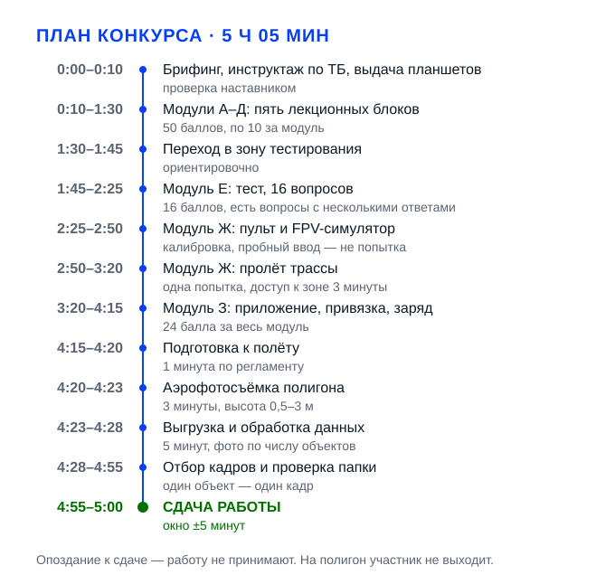
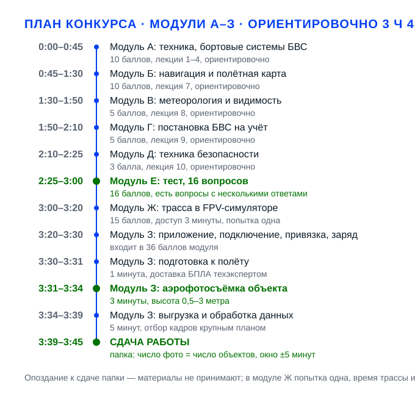
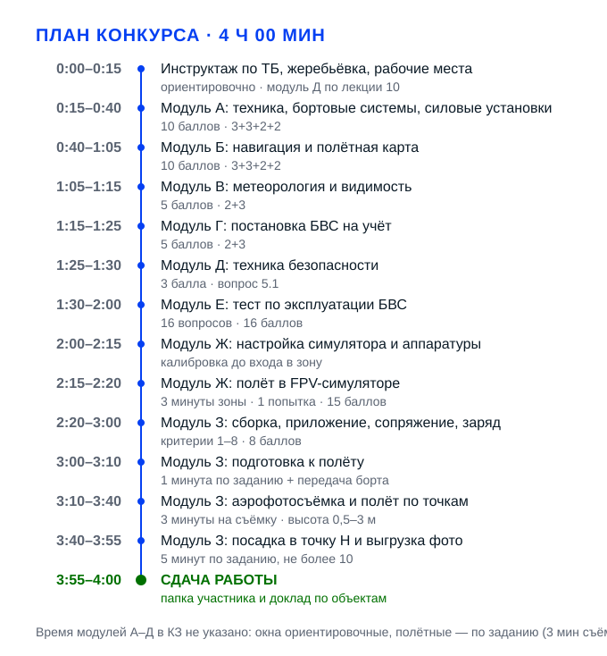

Оператор беспилотного летательного аппарата (Р,О)
Задания ниже — официальные файлы «Абилимпикс» (источник: abilympics-russia.ru), разложенные по категориям. Решения написаны по тексту задания, регламенту и критериям оценки; в них указано, что именно проверяет эксперт.
Школьник
14–16 лет, базовый уровень заданияВыдержка из официального конкурсного задания: страницы, относящиеся к категории «Школьник» (стр. 13–14, 18–19 источника).
Пошаговое решение
Конкурсное задание у школьников разбито на восемь модулей и укладывается в пять часов пять минут: пять теоретических блоков — авиационная техника, навигация, метеорология, юридические вопросы и техника безопасности, затем тест из шестнадцати вопросов, пролёт трассы в FPV-симуляторе с одной попыткой и практическая работа с настоящим аппаратом. Сто баллов распределены неравномерно: теория даёт пятьдесят, тест шестнадцать, симулятор десять, а практическое задание — двадцать четыре. В практической части участник находится вне полигона со скрытыми объектами, аппарат в полётную зону доставляет технический эксперт, на съёмку даётся три минуты плюс минута на подготовку, высота ограничена коридором от 0,5 до 3 метров, а на выгрузку и обработку отводится пять минут. Ниже — подробный порядок работы по всем модулям, с цифрами из задания и типичными ошибками.

Задача 1. Закрыть теоретический блок: модули А, Б, В, Г, ДМодули А–Д · 50 баллов
Пять первых модулей у школьников стоят дороже всего в пересчёте на минуту: вместе они дают половину итоговых ста баллов, а по времени занимают около полутора часов. Задание каждого модуля сформулировано одинаково — изучить материалы лекций и ответить на вопросы с выбором варианта, поэтому работа здесь состоит не в «чтении», а в переводе лекции в короткие таблицы, по которым потом легко ответить. Ошибка новичка — считать эту часть лёгкой разминкой перед полётами и оставить её на потом: в конце конкурса голова занята съёмкой, и вопросы по навигации или по постановке на учёт отвечаются уже наугад.
Действие 1.1. Разобрать конструкцию и бортовые системы БВС (Модуль А)
Шаг 1.1.1
Открываем лекции 1–4 и заводим лист-таблицу по узлам: рама и лучи, бесколлекторные двигатели, регуляторы оборотов, воздушные винты, полётный контроллер, приёмник, аккумулятор, подвес с камерой. Напротив каждого узла пишем две вещи: что он делает и по какому признаку его узнают на макете — двигатель по трём выводам, регулятор по термоусадке и двум силовым проводам, контроллер по стрелке «вперёд». Сразу вписываем количественные признаки четырёхлучевой схемы: четыре луча, четыре мотора, у соседних винтов противоположное вращение, поэтому винты в комплекте идут двух видов.
Модуль А у школьников стоит 10 баллов — столько же, сколько весь практический симулятор, где попытка всего одна. Вопросы по лекциям 1–4 построены на узнавании и различении: где силовая установка, где система управления, что относится к бортовым системам, а что — к наземным. Таблица с признаками узлов закрывает эту часть целиком, потому что отвечать приходится не по памяти, а по своим же записям.
Проверяем таблицу простым тестом: закройте лекцию и назовите вслух, чем регулятор отличается от полётного контроллера и сколько выводов уходит на двигатель. Если определение рассыпается — значит, строка записана словами лекции, а не своим пониманием. В таблице должно быть не меньше восьми узлов и у каждого — признак узнавания.
Самая частая ошибка — переписать лекцию подряд, без разделения на узлы: в итоге на вопрос «к чему относится гироскоп» участник ищет ответ в трёх страницах сплошного текста и тратит время. Вторая — учить названия без признаков: на макете или схеме детали выглядят иначе, чем в подписи, и название не всплывает.
Эксперт в модуле А вопросов не задаёт и подсказок не делает. Он видит по планшету, как идёт работа: отвечает участник сразу или листает лекции после каждого вопроса.
Шаг 1.1.2
Отдельным блоком разбираем силовую установку: бесколлекторный двигатель с характеристикой типа 2205 или 2306, где первые две цифры — диаметр статора в миллиметрах, вторые — высота, и параметр KV, показывающий, сколько оборотов даёт мотор на один вольт без нагрузки. Рядом записываем регулятор оборотов: он получает команду с полётного контроллера и подаёт на мотор три фазы, поэтому проводов у него три толстых и два тонких сигнальных. В конспект идёт и правило сборки: винт с маркировкой ставится на мотор, вращающийся по часовой стрелке, парный — на соседний.
Раздел про силовые установки — это вопрос с готовыми вариантами ответа, и все неверные варианты в нём построены на подмене: KV путают с ёмкостью, регулятор — с приёмником, тягу — с массой. Тот, кто держит в голове связку «KV — обороты на вольт, регулятор — три фазы», отвечает за две секунды; тот, кто помнит только слова, выбирает похожий по звучанию вариант и теряет балл из десяти.
Проверьте себя на числах: назовите, что означает 2306 и что даст рост KV на том же винте. Ответ должен быть связным — «мотор больше и мощнее, оборотов на вольт больше, тяга выше, но ток и нагрев тоже выше». Если связки нет, перечитайте именно абзац про соотношение KV и нагрузки, а не всю лекцию.
Типичная ошибка — выучить KV как «мощность»: тогда вопрос про мотор с высоким KV и тяжёлым винтом ставит в тупик. Вторая — считать, что регулятор выбирают по размеру винта: его подбирают по току, и этот нюанс в тестах встречается регулярно.
В модуле А эксперт фиксирует только результат ответов. Разбор силовой установки пригодится позже, когда в модуле З нужно будет проверить аппарат перед вылетом.
Шаг 1.1.3
Следующий блок — бортовые системы и то, как они связаны между собой. Выписываем цепочку: полётный контроллер с гироскопом и акселерометром держит аппарат в горизонте, барометр даёт высоту по давлению, приёмник спутников даёт координаты, компас — курс, приёмник аппаратуры управления принимает команды с пульта на частоте 2,4 ГГц, видеопередатчик отдаёт картинку с камеры на 5,8 ГГц. Для каждого пункта пишем, что произойдёт при отказе: без гироскопа аппарат не удержится в горизонте, без компаса уйдёт с курса на возврате, без приёмника не примет команду на посадку.
Бортовые системы — вторая половина модуля А, и вопросы там сформулированы как ситуации: «что произойдёт, если…». Список отказов и их последствий — самый короткий путь к правильному варианту, потому что неверные ответы в таких вопросах всегда описывают последствие, которого быть не может. Кроме того, этот же материал работает в модуле Д, где спрашивают про поведение аппарата при потере сигнала.
Проверка простая: возьмите любой узел из списка и объясните вслух, что изменится в полёте, если он откажет. Если ответ звучит как «ну, будет плохо» — вы не разобрали функцию. Хороший признак готовности: вы можете нарисовать стрелками, куда идёт сигнал от пульта до моторов и от камеры до экрана.
Ошибка — путать видеоканал и канал управления: тогда на вопрос про потерю картинки выбирается вариант «аппарат упадёт», хотя управление при этом остаётся. Вторая — считать, что GPS нужен всегда: в помещении и в симуляторе его нет, и вопрос об этом тоже встречается.
Эксперт не вмешивается: модуль А автоматизирован, ответы проверяет программа, а эксперт следит за временем и за тем, чтобы участник не пользовался подсказками и телефоном. Если участник листает лекции, эксперт напоминает, что материалы должны быть в памяти или в распечатке.
Действие 1.2. Подготовить полётную карту и разобраться в навигации (Модуль Б)
Шаг 1.2.1
Начинаем с базовых понятий, без которых карта не читается: север, курс, азимут, пеленг, дальность, высота над точкой старта, путевая скорость. Каждое понятие записываем одной формулировкой и одним примером на числах: курс 90 градусов — это строго на восток, разворот на 180 градусов меняет курс на противоположный, азимут считается от северного направления по часовой стрелке от 0 до 360. Отдельно проговариваем разницу между высотой по барометру и высотой по спутнику — в симуляторе и на улице эти цифры расходятся, и вопросы на эту разницу есть.
Модуль Б — 10 баллов за понятия аэронавигации и порядок подготовки полётной карты. Вопросы здесь не требуют расчётов, но требуют точности формулировок: варианты ответов отличаются одним словом, и побеждает тот, кто различает азимут и курс, а не тот, кто «примерно помнит». Это же понимание понадобится в модуле Ж, где нужно удерживать направление на трассе.
Проверка: возьмите лист и без подсказок нарисуйте схему — точка старта, направление на север, линия курса 45 градусов, подпись азимута. Если схема сходится с определениями и вы можете объяснить, почему азимут не может быть отрицательным, раздел закрыт.
Ошибка — учить определения дословно, не связывая с картой: тогда на вопросе про разворот участник вспоминает текст, а не геометрию. Вторая — путать высоту над уровнем моря и высоту над точкой взлёта: в задании фигурирует высота полёта от 0,5 до 3 метров, и считается она именно от поверхности полигона.
Эксперт проверяет только ответы. Но в модуле Ж видно, усвоена ли навигация: участник, который держит курс по створам, а не «на глаз», проходит трассу ровнее.
Шаг 1.2.2
Переходим к порядку подготовки полётной карты — в лекции 7 он описан пошагово, и именно этот порядок спрашивают. Начинаем с масштаба: наносим границы полигона, точку старта с координатами, зону посадки, запретные участки и препятствия выше человеческого роста — столбы, деревья, углы построек. Каждый объект подписываем и обводим своим цветом: точка старта — круг с крестом, зона посадки — прямоугольник, препятствия — треугольники. Внизу карты ставим дату, фамилию и подпись, потому что карта без подписи считается черновиком.
Подготовка полётной карты — вторая половина модуля Б, и она оценивается как процедура: сначала масштаб и границы, потом точки, потом препятствия, потом подпись. В тесте это выглядит как вопрос «что делают в первую очередь», и правильный ответ там — именно масштаб и границы, а не разметка маршрута. Плюс на карте видно, понимает ли участник, где проходит граница полётной зоны: выходить за неё в модуле З запрещено.
Проверьте карту чужими глазами: попросите наставника найти на ней точку старта за пять секунд. Если ищет дольше — обозначения мелкие или их слишком много. Хорошая карта читается с одного взгляда: границы, старт, посадка, препятствия, подпись.
Типичная ошибка — рисовать карту «для себя», без легенды и подписи: на вопрос о порядке подготовки ответить по такой карте нельзя, а эксперт в практическом модуле не поймёт, куда участник собирается лететь. Вторая — нанести объекты, но забыть препятствия, из-за чего маршрут потом идёт сквозь дерево.
Эксперт подходит к участнику ближе к концу модуля и смотрит на карту, если тот её показывает: есть ли границы, точка старта, зона посадки, препятствия и подпись. Карта без подписи и легенды считается черновиком, и в разговоре эксперт спрашивает, в каком порядке наносились слои.
Шаг 1.2.3
Последний шаг раздела — маршрут съёмки. Разбиваем площадь на галсы: параллельные линии с расстоянием между ними примерно в две трети ширины кадра, чтобы соседние снимки перекрывались хотя бы на треть. Считаем число галсов и время на каждый: при скорости около одного метра в секунду и галсе длиной двадцать метров один проход занимает двадцать секунд, значит на пять галсов уходит меньше двух минут — и это укладывается в три минуты, отведённые на съёмку.
Маршрут — это прямое переложение модуля Б на модуль З, который стоит 24 балла из 100. Участник, у которого маршрут посчитан заранее, за три минуты успевает облететь весь полигон и снять все метки; участник, который летит «как получится», тратит время на развороты и возвращается с половиной кадров. Вопросы про перекрытие кадров и про порядок галсов в тесте тоже есть.
Проверка арифметикой: умножьте число галсов на 20 секунд прохода, прибавьте по 5 секунд на разворот и сравните сумму с 180 секундами. Если получается больше — уменьшайте число галсов или скорость, но не жертвуйте перекрытием: без него метка может попасть на стык кадров.
Ошибка — планировать маршрут «по прямой туда и обратно»: один длинный проход даёт мало кадров и не покрывает площадь. Вторая — забыть про развороты: они съедают до трети времени, и последний галс остаётся неснятым.
Эксперт обычно задаёт один вопрос: сколько галсов и почему именно столько. Ответ с арифметикой — «пять галсов по двадцать секунд плюс развороты, итого сто двадцать пять секунд из ста восьмидесяти» — показывает, что маршрут посчитан, а не нарисован на глаз, и эксперт это отмечает.
Действие 1.3. Разобрать метеорологию и условия видимости (Модуль В)
Шаг 1.3.1
По лекции 8 выписываем факторы, которые ухудшают видимость, и для каждого — признак, по которому его узнают до вылета. Дымка и туман: влажность высокая, разница между температурой воздуха и точкой росы меньше двух градусов, дальность видимости падает до сотен метров. Осадки: капли на объективе дают мыло вместо метки. Низкое солнце и контровой свет: объект превращается в силуэт, тени вытягиваются и закрывают детали. Пыль и дым от костра на полигоне: тот же эффект, что у дымки, но локально и резко.
Модуль В — 10 баллов у школьников, и вопросы там построены на связке «причина — следствие»: что ухудшает видимость, что делает снимок непригодным для поиска меток. Отдельно спрашивают про точку росы, потому что это самый «неочевидный» параметр: многие путают её с температурой воздуха и выбирают неверный вариант. Для модуля З этот же список работает как чек-лист перед вылетом.
Проверка: посмотрите на прогноз и назовите три параметра, по которым вы примете решение — температура, точка росы, ветер. Если вы можете сказать, при какой разнице температур появится дымка, раздел усвоен; ориентир — разница меньше двух градусов уже даёт заметное ухудшение видимости.
Ошибка — считать, что видимость портит только туман: контровой свет и пыль дают такой же брак на снимках, хотя «на глаз» погода кажется хорошей. Вторая — путать точку росы с точкой замерзания, из-за чего выбирается неверный вариант про образование тумана.
В модуле В оцениваются ответы. В модуле З эксперт смотрит, как участник реагирует на фактическую погоду: переносит съёмку на теневую сторону или снимает против солнца.
Шаг 1.3.2
Отдельно разбираем ветер — главный ограничитель для лёгкого аппарата. Записываем правило: устойчивый ветер до 5 метров в секунду лёгкий квадрокоптер держит, порывы свыше 8 метров в секунду уже сносят его с линии галса и наклоняют камеру. Смотрим не на среднюю скорость, а на порывы и на их направление: боковой ветер сносит аппарат в сторону, встречный съедает заряд быстрее, попутный не даёт удерживать скорость на галсе. Тут же записываем, как ветер влияет на время: при боковом ветре проход того же галса занимает на четверть больше времени.
Вопросы по ветру в модуле В идут вместе с вопросами по видимости, но последствия здесь другие: ветер не ухудшает картинку, а ломает маршрут и сокращает время полёта. Для модуля З, где на съёмку дано ровно три минуты, это прямая угроза: перерасход времени на компенсацию сноса означает неснятые метки и минус баллы из 24.
Проверка практическая: поднимите руку на полигоне и оцените, гнёт ли ветер ветки и как быстро движутся облака. Затем сверьте с прогнозом — если расхождение большое, доверяйте тому, что видите, и сообщите эксперту. Ваш ориентир по цифрам: 5 метров в секунду — рабочий предел, 8 — предел безопасный.
Ошибка — смотреть только на «ветер 3 м/с» в прогнозе и не замечать порывы до 9: именно порыв выносит аппарат за границу зоны. Вторая — игнорировать направление: попутный ветер на галсе кажется удобным, но обратный проход занимает вдвое больше времени.
Эксперт в модуле В ответы не комментирует. В модуле З он сверяет действия участника с фактической погодой: если на улице порывы, а участник не компенсирует снос, это видно по галсам, которые идут не по прямой.
Шаг 1.3.3
Собираем всё в решение о полёте: три условия — видимость не хуже 500 метров на уровне полигона, ветер с порывами не выше 8 метров в секунду, отсутствие осадков. Если хотя бы одно не выполняется, полёт не начинается, а участник сообщает об этом эксперту до старта, а не после. В конспект записываем и обратное правило: при низком солнце съёмку ведут с теневой стороны объекта, а не против света, иначе метка на снимке превращается в тёмное пятно.
Умение отказаться от полёта — часть модуля Д и прямая обязанность оператора, а в модуле В есть вопросы про принятие решения по погоде. На чемпионате это ещё и практический риск: полёт в дождь заканчивается отказом электроники, а полёт в сильный ветер — ударом о препятствие, и тогда теряются баллы сразу за несколько модулей, включая требование «коптер без повреждений».
Проверьте себя вопросом: при каком условии вы отмените съёмку, даже если эксперт торопит? Ответ должен быть готов заранее и с цифрой — «порывы выше 8 метров в секунду» или «видимость меньше 500 метров». Решение без цифры на защите не принимается.
Ошибка — стартовать «пока не началось»: погода меняется за минуты, а три минуты съёмки в ухудшающихся условиях дают брак. Вторая — наоборот, отказаться от полёта при нормальной погоде из-за волнения и потерять все 24 балла модуля З.
Эксперт оценивает не только результат, но и поведение. Участник, который до старта называет условия и объясняет решение, выглядит надёжнее того, кто молча летит.
Действие 1.4. Разобрать юридически значимую информацию (Модуль Г)
Шаг 1.4.1
По лекции 9 выписываем, что значит постановка беспилотного аппарата на учёт и какие сведения в неё входят: тип и модель, серийный номер, масса, максимальная высота и продолжительность полёта, данные владельца. Отдельно фиксируем, что учётный номер наносится на корпус так, чтобы читался без инструментов, и что документ о постановке на учёт хранится вместе с аппаратом, а не «дома в папке». В конспект идёт и различие: постановка на учёт — это не разрешение на полёт, а только регистрация аппарата.
Модуль Г — 10 баллов, и вопросы здесь самые «бумажные»: что входит в заявление, куда наносится номер, что делать при смене владельца. Ошибка стоит дорого ещё и потому, что этот же материал спрашивают в модуле Е, где 16 вопросов по эксплуатации и каждый стоит балл. Разделять «учёт» и «разрешение на полёт» нужно твёрдо: это самая частая ловушка в вариантах ответа.
Проверка: перечислите вслух пять сведений, которые попадают в учётные данные, и скажите, чем учётный номер отличается от серийного. Если разница формулируется чётко — раздел закрыт. Второй признак готовности: вы можете объяснить, почему номер наносят на корпус, а не только в документ.
Типичная ошибка — считать, что постановка на учёт даёт право летать где угодно: тогда вопрос про согласование полёта решается неверно. Вторая — путать учётный номер с номером двигателя или с номером пульта.
Эксперт в модуле Г участия не принимает. Но в модуле З он может спросить, на каком основании выполняется полёт, и участник должен ответить коротко и по существу.
Шаг 1.4.2
Разбираем правила использования воздушного пространства в той части, которая касается учебных и соревновательных полётов: полёт выполняется в разрешённой зоне, по согласованию с организатором, на высоте, указанной в задании, и с постоянным визуальным контролем аппарата. Записываем запреты: нельзя летать над людьми и над толпой, нельзя приближаться к аэродромам и к местам, где работают спасатели, нельзя поднимать аппарат выше согласованной высоты. Отдельным пунктом — обязанность немедленно прекратить полёт по требованию уполномоченного лица.
Этот блок в модуле Г даёт сразу несколько вопросов, потому что правила легко перепутать между собой. Кроме того, на самом конкурсе действует своё ограничение: высота полёта не менее 0,5 метра и не более 3 метров, а выходить на полигон и осматривать местность участнику запрещено — за нарушение работу могут остановить. Знание общих правил помогает не растеряться, когда эксперт напоминает о границах.
Проверьте себя тремя запретами, которые вы назовёте без запинки: над людьми, над аэродромом, выше согласованной высоты. Если к каждому вы можете добавить, что делать при нарушении — прекратить полёт и доложить, раздел усвоен.
Ошибка — считать, что «полёт в закрытой зоне» касается только больших аппаратов: правила одинаковы для всех, включая лёгкие учебные модели. Вторая — думать, что согласование получает участник, а не организатор соревнований.
Эксперт следит за соблюдением зоны и высоты в модуле З: выход за границы полигона или подъём выше трёх метров фиксируются как нарушение и снимают баллы. Перед вылетом он может попросить назвать границы зоны и разрешённую высоту — ответ должен прозвучать без запинки и с цифрами.
Шаг 1.4.3
Последний шаг раздела — ответственность и порядок действий при происшествии. Выписываем цепочку: прекратить полёт, обеспечить безопасность людей, зафиксировать место и время, сохранить запись с камеры и данные DVR, сообщить организатору и эксперту, не перемещать обломки до осмотра. Отдельно записываем, что запись с очков DVR — единственный допустимый источник видео для разбора: в задании прямо сказано, что видеосъёмка ведётся только через DVR-систему, записывающую на флешку.
Вопросы про ответственность в модуле Г и в модуле Е встречаются чаще, чем кажется: там спрашивают, что делает оператор при потере аппарата и какие данные нужно сохранить. На конкурсе это ещё и практическая ценность: запись DVR — единственное доказательство того, что метка была найдена и снята, а её отсутствие обнуляет результат модуля З, который стоит 24 балла.
Проверка: проговорите цепочку действий по памяти за тридцать секунд, не подглядывая в конспект. Если порядок «сначала люди, потом аппарат, потом документы» держится — всё в порядке. Второй признак: вы помните, куда именно пишется DVR-запись и что флешку нельзя форматировать до сдачи.
Ошибка — начинать с осмотра аппарата, забывая про людей рядом: это нарушение техники безопасности, и оно перекрывает любые баллы. Вторая — стирать запись, освобождая место под новые кадры: вместе с ней исчезает подтверждение работы.
Эксперт смотрит на реакцию участника при любом инциденте: остановился ли он, сообщил ли, сохранил ли запись. Молчаливая попытка «дожать» полёт оценивается отрицательно.
Действие 1.5. Освоить правила техники безопасности (Модуль Д)
Шаг 1.5.1
Готовим рабочее место по правилам: площадка взлёта ровная, без травы выше щиколотки, свободная зона радиусом не меньше трёх метров, зрители и наставник — за спиной оператора и не ближе пяти метров, посторонние предметы убраны из-под винтов. Записываем порядок включения: сначала пульт, потом аппарат, и порядок выключения обратный; винты ставятся последними, а снимаются первыми. Отдельным пунктом — правило «аппарат на земле, стики в нейтрали, пока не готовы к взлёту».
Модуль Д — 10 баллов у школьников, и вопросы там про порядок действий и про типичные нарушения. Но ценность этого блока выше баллов: в модуле З аппарат доставляет в полётную зону технический эксперт, а вокруг работают люди, и нарушение дистанции — это реальная травма. Эксперт фиксирует нарушения сразу, а не в конце, поэтому порядок нужно соблюдать с первой минуты.
Проверка: обойдите площадку и назовите вслух пять вещей, которые уберёте или отодвинете. Затем проверьте, что никто не стоит в секторе взлёта: мысленно очертите круг радиусом три метра — в нём не должно быть ни людей, ни сумок.
Ошибка — включать аппарат до пульта: тогда аппарат не находит сигнал и может уйти в режим поиска, а винты в этот момент уже раскручиваются. Вторая — держать аппарат в руках при включении: при случайном старте моторов это порезы.
Эксперт подходит к зоне взлёта до старта модуля З и оценивает, как подготовлено место и как участник обращается с аппаратом: убраны ли посторонние предметы, стоит ли кто-то в секторе взлёта, включает ли участник пульт первым. Нарушения он фиксирует сразу, не дожидаясь конца модуля.
Шаг 1.5.2
Разбираем работу с аккумулятором — самый опасный элемент в комплекте. Записываем правила: хранить при напряжении хранения (примерно 3,8 вольта на банку), не оставлять заряженным на солнце, не брать вздутый или повреждённый аккумулятор, не замыкать контакты, не заряжать сразу после полёта — дать остыть 10–15 минут. При повреждении аккумулятор кладут в металлическую ёмкость и убирают от людей, а не носят в кармане. Тушение — песком или специальным составом, вода для литиевых элементов опасна.
В модуле Д есть вопросы именно про аккумуляторы, и они входят в десятку баллов наравне с остальными. На практике это критично для модуля З: проверка уровня заряда — отдельный пункт задания, а вздутый или холодный аккумулятор даёт просадку напряжения и отключение моторов в полёте, после чего аппарат уже не «без повреждений».
Проверка: осмотрите аккумулятор — корпус без вздутия, контакты чистые, разъём не оплавлен, наклейка с ёмкостью читается. Напряжение проверьте по приложению или тестером: для полной зарядки это около 4,2 вольта на банку, для хранения — 3,8. Если цифры ниже 3,5 на банку, аккумулятор к полёту не готов.
Ошибка — брать «последний, который остался», не глядя на состояние: вздутый аккумулятор может отказать на третьей минуте съёмки. Вторая — заряжать сразу после полёта: горячий элемент заряжается неравномерно и быстрее теряет ёмкость.
Эксперт смотрит на обращение с аккумулятором в модуле З: кладёт ли участник его на землю, а не на металл, осматривает ли корпус перед установкой, даёт ли остыть после полёта. Вздутый аккумулятор, взятый в работу, — отдельное замечание, которое идёт в протокол по технике безопасности.
Шаг 1.5.3
Последний блок модуля Д — поведение при потере сигнала или аварии. Записываем три сценария: пропал видеосигнал — прекращаем движение, набираем небольшую высоту и возвращаемся по ориентирам, а не вслепую; пропал сигнал управления — аппарат уходит в автоматический возврат на точку старта или в посадку на месте, участник не машет пультом и не бежит за ним; разрядился аккумулятор — немедленная посадка в безопасном месте, даже если съёмка не закончена. К каждому сценарию — что говорить эксперту и что сохранять.
Вопросы про потерю связи в модуле Д и в модуле Е встречаются почти всегда, потому что это проверка понимания автоматики. На конкурсе сценарий реальный: аппарат работает в помещении или на полигоне с препятствиями, и сигнал может пропасть за углом. Правильная реакция экономит баллы модуля З, неправильная — аппарат и весь модуль.
Проверка: до вылета выясните у эксперта, в каком режиме настроен failsafe — возврат домой или посадка на месте, и на какой высоте. Это одна фраза, но она снимает половину паники при потере сигнала. Второй признак готовности: вы знаете, по каким ориентирам будете искать аппарат, если он сядет не там.
Ошибка — при потере картинки продолжать лететь по памяти: без изображения невозможно понять, где аппарат, и он уходит за границу зоны. Вторая — бежать к аппарату, не выключив пульт: при автоматическом возврате он может стартовать неожиданно.
Эксперт оценивает спокойствие и последовательность: остановился, доложил, действовал по процедуре. Паника, беготня по площадке и попытки «дожать» полёт при потере сигнала фиксируются отдельно и влияют на оценку модуля Д и на впечатление от работы в целом.
Задача 2. Пройти тест по эксплуатации БВС: Модуль Е, 16 вопросовМодуль Е · 16 баллов
Единственный модуль, где каждый вопрос стоит ровно один балл из ста, а всего их шестнадцать. Тест идёт отдельным блоком после теории и включает вопросы с несколькими правильными ответами — на них теряют больше всего, потому что неполный ответ обычно не засчитывается. Работа здесь строится не на знаниях вообще, а на трёх приёмах: правильном порядке прохождения, внимательном чтении формулировок и обязательной проверке перед отправкой. Модуль короткий, и времени на него хватает с запасом, если не застревать на одном вопросе.
Действие 2.1. Организовать прохождение теста
Шаг 2.1.1
Перед стартом уточняем три вещи: сколько времени отведено на весь тест, можно ли возвращаться к отвеченным вопросам и показывается ли результат сразу. Дальше идём в два прохода: первый — по всем шестнадцати вопросам подряд, отвечая на те, где ответ очевиден, и пропуская спорные; второй — возврат к пропущенным с остатком времени. Такая схема не даёт застрять на четвёртом вопросе и не дойти до шестнадцатого, который может оказаться самым простым.
Модуль Е — 16 баллов, и это самая высокая цена одной ошибки в пересчёте на секунду: неверный ответ на вопрос занимает столько же времени, сколько верный, но стоит балла. Два прохода нужны потому, что трудные вопросы часто решаются после того, как голова «разогрелась» на простых, а возврат к ним занимает меньше времени, чем борьба с ними в самом начале.
Проверка: после первого прохода у вас должно быть отвечено не меньше десяти вопросов, а на часах — больше половины отведённого времени. Если отвечено меньше пяти, значит вы застряли: бросьте текущий вопрос, идите дальше и возвращайтесь потом.
Ошибка — читать вопрос по три раза и искать подвох там, где его нет: на 16 вопросах это съедает всё время. Вторая — не уточнять, можно ли возвращаться к вопросам: если система не даёт назад, стратегия двух проходов не работает и нужно отвечать сразу.
Эксперт следит за временем теста и за тем, чтобы участник не пользовался подсказками и посторонними устройствами; на содержание ответов он не влияет — их проверяет программа. Перед стартом он объявляет, можно ли возвращаться к вопросам, и это единственная подсказка, которую здесь разрешено получить.
Шаг 2.1.2
Отдельно готовимся к вопросам с несколькими правильными ответами. Признак такого вопроса — формулировка «выберите все верные варианты» или отсутствие слов «один ответ». Читаем варианты до конца и отбрасываем те, что противоречат друг другу: два взаимоисключающих утверждения не могут быть верны одновременно, значит как минимум одно из них лишнее. Проверяем каждый выбранный вариант вопросом «это точно сказано в лекции?» — если вариант звучит правдоподобно, но не подтверждается материалом, его не отмечают.
В задании прямо сказано, что в модуль Е включены вопросы с несколькими правильными ответами. Именно на них участники теряют баллы: отмечают один верный из трёх и получают ноль, потому что ответ неполный. Шестнадцать вопросов стоят по баллу, и две-три таких потери — это уже пять процентов итога, которые не вернуть практикой.
Проверка: перед отправкой ответа на такой вопрос пересчитайте отмеченные варианты и скажите себе, почему не отмечены остальные. Если на любой неотмеченный вариант нет причины — вернитесь и перечитайте его. Число отмеченных вариантов в таких вопросах обычно два или три, редко больше.
Ошибка — считать, что частичный ответ даёт часть балла: в большинстве систем неполный ответ оценивается как неверный. Вторая — выбирать «самый правильный» вариант вместо всех правильных: формулировка «выберите все» этого не прощает.
Эксперт не комментирует ответы и не подсказывает формулировки, но после теста называет число верных, не разбирая их до окончания всех модулей. Участник, который до отправки пересчитывает отмеченные варианты, по поведению отличается от того, кто нажимает «далее» не глядя.
Шаг 2.1.3
Перед отправкой делаем проверку по трём пунктам: все ли шестнадцать вопросов отвечены, нет ли пустых, совпадает ли число ответов с числом вопросов на экране. Если система показывает сводку — проходим по ней глазами сверху вниз, отмечая пропуски. Отдельно смотрим вопросы, где меняли ответ: иногда при правке снимается галочка с другого варианта, и вопрос остаётся без ответа.
Пустой вопрос стоит того же балла, что и неверный, но неверный хотя бы даёт шанс. В модуле с 16 вопросами и порогом в один балл за вопрос терять ответы на пустом месте нельзя. Кроме того, на конкурсе время ограничено общим регламентом в пять часов пять минут, и перенос проверки на «потом» означает, что проверки не будет вовсе.
Проверка: на экране нет неотвеченных вопросов, в сводке напротив каждого стоит выбранный вариант, а у вопросов с несколькими ответами отмечено больше одного пункта. Сделайте снимок экрана, если это разрешено, — так проще доказать, что ответы были даны.
Ошибка — закрыть тест «на автомате», не просмотрев сводку: пропущенный вопрос находится уже после отправки. Вторая — менять ответы в последнюю минуту без причины: первое впечатление обычно вернее, а спешка снимает галочки.
Эксперт фиксирует время сдачи теста и то, просматривал ли участник сводку перед отправкой. Досрочная сдача без проверки — самая частая причина обидных потерь, и в протоколе она видна по времени: тест сдан за треть отведённого срока, а результат ниже ожидаемого.
Действие 2.2. Разобрать типовые ловушки теста по эксплуатации
Шаг 2.2.1
Выписываем все числа из конкурсного задания и держим их перед глазами: высота полёта от 0,5 до 3 метров, три минуты на аэросъёмку плюс одна минута на подготовку, пять минут на выгрузку и обработку, шестнадцать вопросов в тесте, одна попытка в симуляторе, 24 балла за практическое задание. Числовые вопросы в тесте строятся на подмене этих значений: предлагают 5 метров высоты, 10 минут на съёмку, две попытки. Правильный вариант всегда совпадает с заданием, а не с «обычной практикой».
Числа — самый простой способ набрать баллы в модуле Е, потому что они не требуют понимания, только точности. И наоборот, самый частый источник потерь: участник помнит «примерно три метра» и выбирает 3 вместо 0,5–3, или путает три минуты съёмки с тремя минутами доступа к зоне в симуляторе. Эти же цифры понадобятся в модуле З, где от них зависит, уложится ли участник в регламент.
Проверка: закройте задание и назовите вслух пять чисел — высоту, время съёмки, время подготовки, время обработки, число вопросов. Если хотя бы одно названо приблизительно («около трёх»), выпишите его отдельно и повторите.
Ошибка — отвечать по памяти о похожем задании прошлого года: регламент меняется, и прошлогодние цифры в этом году неверны. Вторая — путать высоту полёта с высотой домашней точки: в задании речь именно о высоте над полигоном.
Эксперт в модуле Е не подсказывает, но в модуле З напоминает про высоту, если участник собирается подняться выше трёх метров. Знание цифр видно и по поведению: участник, который сразу называет время съёмки и высоту, готовится спокойнее и не тратит минуты на уточнения.
Шаг 2.2.2
Разбираем вопросы про порядок действий — их в тесте несколько, и они однотипны. Запоминаем три цепочки: включение — пульт, затем аппарат, затем приложение; сопряжение — приложение, сеть дрона, пульт, проверка каналов; выключение — посадка, остановка моторов, аппарат, затем пульт. К каждой цепочке добавляем причину: пульт первым, чтобы аппарат сразу нашёл сигнал и не ушёл в режим поиска; аппарат выключается первым, чтобы он не остался без управления.
Вопросы про порядок встречаются и в модуле Д, и в модуле Е, и стоят по баллу каждый. Практическая ценность выше: в модуле З участник устанавливает приложение, включает аппарат и подключается к его сети, и перепутанный порядок приводит к тому, что приложение не видит камеру, а время уходит из двадцати четырёх баллов.
Проверка: проговорите цепочку включения и цепочку выключения, не заглядывая в конспект, и назовите по одной причине для каждого шага. Если причины совпадают с логикой «сначала управление, потом исполнитель» — вы отвечены на такие вопросы правильно.
Ошибка — включать аппарат раньше пульта «чтобы он быстрее загрузился»: аппарат уходит в поиск сигнала, и первый запуск занимает больше времени, а иногда заканчивается повторным включением. Вторая — выключать пульт, не посадив аппарат: он остаётся без управления и может уйти в автоматический возврат в неподходящий момент.
Эксперт в модуле З смотрит именно на порядок: включил пульт, дождался индикации, потом поднял аппарат, потом открыл приложение. Последовательность, описанная в задании, совпадает с правильной, поэтому любое отступление от неё заметно сразу.
Шаг 2.2.3
Последний блок подготовки — аварийные вопросы. Выписываем четыре ситуации и правильную реакцию: потеря видеосигнала — остановка и возврат по ориентирам; разряд ниже рабочего порога — немедленная посадка; срабатывание возврата домой — не мешать автоматике; отказ одного мотора или повреждение винта — посадка в ближайшей безопасной точке, а не попытка долететь до старта. К каждой ситуации добавляем, что сохранить: запись DVR, данные полёта, положение аппарата.
Аварийные вопросы — самая «взрослая» часть теста: они проверяют, готов ли участник принять решение, когда всё пошло не так. В модуле З за такие решения отвечают баллами за целостность аппарата и за сохранённую запись, а в модуле Ж — за посадку в указанную зону без повреждений.
Проверка: на каждую из четырёх ситуаций у вас есть ответ из двух частей — что делаете и что сохраняете. Если ответ сводится к «попробую спасти», он неверен: приоритет всегда у безопасности людей и аппарата, а не у кадров.
Ошибка — в вопросе про разряд выбирать «продолжить съёмку до конца»: это самый частый неверный вариант, и он стоит балла. Вторая — при потере картинки набирать высоту для лучшего приёма: без изображения это опасно и запрещено правилами.
Эксперт при разборе полёта смотрит, совпали ли ответы в тесте с фактическими действиями участника на площадке. Если в тесте выбрано «немедленная посадка», а в модуле З участник дотягивал маршрут на разряженном аккумуляторе, это заметно и оценивается как несоответствие.
Задача 3. Пролететь трассу в FPV-симуляторе: Модуль ЖМодуль Ж · 10 баллов · одна попытка
Здесь проверяют не знание, а руки. Доступ к полётной зоне в симуляторе даётся на три минуты, попытка одна, и засчитывается всё сразу: время прохождения трассы, отсутствие касаний элементов полигона, посадка в указанную зону и целый коптер в конце. Отдельной подготовки этот модуль не требует, но требует привычки к конкретному пульту: за три минуты нельзя привыкнуть к чувствительности стиков, поэтому тренировка на таком же пульте до конкурса — половина результата.
Действие 3.1. Подготовить пульт и симулятор до зачётного запуска
Шаг 3.1.1
Первым делом проверяем пульт: он включён, заряжен, связан с компьютером или подключён по USB-кабелю, в симуляторе определяется как устройство управления. Открываем настройки каналов и проходим калибровку стиков: каждый стик доводим до упора в четырёх направлениях, чтобы система запомнила крайние положения. Проверяем, что раскладка соответствует привычной — левый стик отвечает за газ и поворот, правый за наклон и тангаж, режим Mode 2. Если пульт чужой, раскладка может быть перевёрнута, и это выясняется в первые секунды полёта.
Модуль Ж стоит 10 баллов при одной попытке — цена неправильно откалиброванного стика равна потере всего модуля, потому что перелететь трассу заново не дадут. Калибровка занимает минуту и полностью снимает дрейф: без неё аппарат в симуляторе уводит в сторону при нейтральных стиках, и участник борется с техникой вместо трассы.
Проверка: в режиме просмотра каналов стики в нейтрали показывают ровно середину, без дрожания, а при полном отклонении — крайние значения. Если индикатор дёргается при неподвижном стике, калибровку повторяют или меняют пульт до зачётного запуска.
Ошибка — пропустить калибровку, потому что «пульт новый»: новые пульты тоже приходят с небольшим смещением. Вторая — калибровать, держа пульт на весу: при калибровке он должен лежать на столе, иначе крайние положения записываются неверно.
Эксперт видит подготовку: участник, который калибрует стики и проверяет каналы, выглядит уверенно, а время на это отведено до старта попытки. Пульт, взятый без калибровки, выдаёт себя сразу — аппарат уводит в сторону при нейтральных стиках, и участник борется с ним вместо трассы.
Шаг 3.1.2
Настраиваем вид и качество картинки в симуляторе: включаем режим от первого лица, чтобы изображение шло с камеры аппарата, а не со стороны. Проверяем частоту кадров и задержку: при просадке ниже тридцати кадров в секунду картинка дёргается, и проходить ворота становится тяжело. Если в симуляторе есть выбор разрешения, снижаем его до уровня, при котором кадры стабильны — лучше менее красивая картинка, чем рывки на развороте.
Режим FPV — это то, что задание требует прямо: участник летит по трассе от первого лица, как в очках. Настройка качества влияет на результат напрямую: при задержке картинки реакция на ворота запаздывает на полметра, и вместо чистого пролёта получается касание, а касания в этом модуле запрещены условиями.
Проверка: сделайте пробный разворот на месте и посмотрите, совпадает ли изображение с движением без заметного отставания. Хороший ориентир — задержка не больше десятой доли секунды: при резком движении стика картинка меняется почти сразу.
Ошибка — гнаться за максимальным качеством на слабом ноутбуке: картинка красивая, но с рывками. Вторая — оставить вид от третьего лица и «привыкнуть»: на зачётной попытке настройки сбросятся, и участник полетит в незнакомом виде.
Эксперт перед попыткой проверяет, что включён именно режим от первого лица и что участник видит картинку с камеры аппарата. Если включён вид от третьего лица, попытка может быть не засчитана, поэтому проверку делают до старта, а не в процессе.
Шаг 3.1.3
До зачётного запуска обязательно делаем пробный ввод — не попытку, а привыкание: висение на высоте около метра в течение тридцати секунд, два разворота на 360 градусов, проход «восьмёркой» между двумя ориентирами, мягкая посадка. Смысл в том, чтобы прочувствовать три вещи: насколько резко аппарат реагирует на стик, с какой скоростью набегает высота и как выглядит торможение перед препятствием.
Три минуты доступа к полётной зоне — это очень мало, и тратить их на привыкание нельзя. Пробный ввод вне зачёта позволяет отработать именно те движения, которые понадобятся на трассе: короткие импульсы вместо долгих отклонений, сброс газа перед воротами, подхват после разворота. По сути это единственная возможность настроить моторику под конкретный пульт.
Проверка: вы можете удержать висение в квадрате метр на метр без касаний и сесть в точку с первого раза. Если аппарат уходит в сторону при нейтральных стиках — возвращайтесь к калибровке, а не боритесь с ним в воздухе.
Ошибка — сразу лететь трассу «на пробу»: если это считается попыткой, она потрачена впустую и второй не будет. Вторая — тренировать только висение: трасса требует разворотов и проходов в створах, а не статики.
Эксперт объявляет, когда начинается зачётная попытка; до этого момента любые движения в симуляторе — тренировка. Он же следит за тем, чтобы участник не «тренировал» саму трассу, если условия это запрещают, и подсказывает момент старта по своему секундомеру.
Действие 3.2. Пройти трассу и сесть в указанную зону
Шаг 3.2.1
Перед стартом запоминаем трассу: где первый створ, в какую сторону разворот, где узкое место и где зона посадки. Взлёт выполняем плавно, коротким импульсом газа до высоты около метра, без рывка: резкий подъём в симуляторе почти всегда заканчивается касанием потолка или потерей ориентации. На входе в первый створ держим аппарат точно по центру кадра — так траектория на выходе остаётся ровной, и на разворот уходит меньше времени.
Время прохождения — первый критерий модуля: чем меньше время, тем выше балл, но только при условии чистого пролёта. Ровный вход в первый створ экономит сразу несколько секунд, потому что не требует подруливания на выходе. Резкий взлёт, наоборот, добавляет лишние движения и сбивает ориентацию в первые же секунды — самые дорогие в трёхминутном доступе.
Аппарат вошёл в створ по центру, без касания стоек, и продолжает движение по прямой, а не «змейкой». Если изображение уходит вбок — вы уже подруливаете, и на это уходит время; если картинка заваливается набок, стик наклона держится слишком долго.
Ошибка — стартовать с полным газом, чтобы «выиграть секунды»: аппарат подпрыгивает, камера смотрит в потолок, ориентация теряется. Вторая — входить в створ по краю, рассчитывая срезать: край — самая частая точка касания.
Эксперт фиксирует время по показаниям симулятора и следит за отметками касаний: система записывает их автоматически, и оспорить потом нельзя. Он же объявляет результат попытки сразу после посадки, до того как участник выйдет из зоны.
Шаг 3.2.2
Проходим трассу по заранее намеченному плану: держим среднюю скорость, на прямых участках добавляем газ короткими импульсами, перед воротами сбрасываем и проходим их на ровном газу. Развороты делаем широко, с упреждением: начинаем поворот до того, как створ окажется в центре кадра, иначе аппарат разворачивается уже после него и цепляет стойку. Все движения — короткими импульсами, а не длинными отклонениями стика: длинное отклонение даёт инерцию, и аппарат проскакивает нужную точность.
Касания элементов полигона и трассы в этом модуле запрещены условиями, и каждое касание — это потеря баллов из десяти при одной попытке. Импульсное управление нужно потому, что симулятор моделирует инерцию: чем дольше держишь стик, тем дольше аппарат продолжает движение после возврата в нейтраль. Участник, который работает короткими импульсами, летит ровно и предсказуемо.
Проверка: аппарат проходит створы без касаний, а картинка не «клюёт» вниз и не заваливается на разворотах. Если после каждого разворота приходится выравнивать высоту — газ подаётся слишком грубо, и на следующем створе это даст касание.
Ошибка — лететь на максимальной скорости: время сокращается, но точность падает, и касание обнуляет выигрыш. Вторая — держать стик отклонённым на развороте: аппарат продолжает вращаться после возврата и уходит с траектории.
Судья модуля смотрит на записи касаний и на время. Чистый пролёт с чуть большим временем оценивается выше, чем быстрый с касаниями, потому что условие задания требует пройти трассу без касаний элементов полигона.
Шаг 3.2.3
Финал трассы — посадка в указанную зону. Заходим на неё с небольшой высоты, гасим скорость до минимума, снижаемся плавно и касаемся поверхности в границах обозначенного квадрата. После касания сразу сбрасываем газ в ноль и ждём полной остановки винтов: в симуляторе, как и в жизни, попытка «подправить» после касания часто опрокидывает аппарат, а условие «коптер без повреждений» проверяется именно после посадки.
Посадка в указанную зону — отдельный пункт задания наравне со временем, и она же проверяет, умеет ли участник завершать полёт, а не только лететь. Опрокидывание при посадке читается как повреждение аппарата, а это ещё один минус: в задании прямо сказано, что коптер должен остаться без повреждений. Заход с высоты, а не пикированием, даёт точность в пределах квадрата.
Проверка: аппарат стоит в границах зоны, винты остановлены, изображение показывает поверхность полигона ровно. Если аппарат сел на границу — фиксируйте результат как есть, не пытайтесь подлететь: повторная попытка запрещена.
Ошибка — заходить на посадку на скорости: аппарат проскакивает зону и цепляет ограждение. Вторая — после касания продолжать работать газом, чтобы «поправить положение»: это самое частое опрокидывание.
Эксперт проверяет положение аппарата в зоне и его состояние после остановки винтов: опрокинутый коптер считается повреждённым, и это идёт в минус. Он же фиксирует время окончания попытки — после посадки попытка закрывается, добавить что-то к результату уже нельзя.
Задача 4. Выполнить практическое задание: приложение, привязка, съёмка (Модуль З)Модуль З · 24 балла
Самый дорогой модуль конкурса: 24 балла из 100, почти четверть итога. Состоит он из четырёх последовательных частей — установить мобильное приложение и подключить к нему аппарат, привязать систему управления, проверить уровень заряда и выполнить аэрофотосъёмку с последующей выгрузкой и обработкой. На съёмку отводится три минуты плюс одна минута на подготовку, на выгрузку и обработку — пять минут, высота полёта от 0,5 до 3 метров. Участник при этом находится вне полигона и не видит, что именно ему предстоит снимать: объекты скрыты, осматривать местность запрещено, аппарат в полётную зону доставляет технический эксперт. Поэтому выигрывают те, у кого каждая минута расписана заранее.
Действие 4.1. Установить мобильное приложение и подключить аппарат
Шаг 4.1.1
Открываем магазин приложений на телефоне или планшете — Google Play или RuStore на Android, App Store на устройствах Apple — и находим фирменное приложение бренда дрона. Быстрее всего это делается по QR-коду с коробки или с инструкции: он ведёт сразу на нужную страницу и исключает ошибку с одноимённым приложением другого производителя. Перед установкой сверяем имя разработчика: у фирменного приложения в поле разработчика стоит название бренда, а не частное лицо.
Установка приложения — первая часть модуля З, и ошибка здесь останавливает всю дальнейшую работу: без приложения не будет ни изображения с камеры, ни управления со смартфона. Кроме того, чужое приложение с похожим названием может требовать лишних разрешений и не соединяться с аппаратом, а время на переустановку уходит из общего регламента в пять часов пять минут.
Проверка: приложение открылось, в нём есть раздел подключения к аппарату и запрос на камеру и геолокацию. Версия приложения совпадает с поколением дрона — это видно по картинке модели на стартовом экране.
Ошибка — скачивать приложение по названию, не сверяя разработчика: попадаются клоновые программы без поддержки нужной модели. Вторая — ставить приложение через сторонний сайт, если магазин недоступен: подписанный APK найти сложно, и время уходит впустую.
Эксперт подходит к столу в начале модуля и смотрит, какое приложение установлено: несоответствие бренду фиксируется как ошибка подготовки. Он же проверяет, что участник не скачивал программу со сторонних сайтов и что разрешения на камеру и геолокацию выданы приложению, а не чему-то постороннему.
Шаг 4.1.2
Дальше включаем на телефоне Wi-Fi и только после этого включаем квадрокоптер: аппарат поднимает собственную сеть, и телефон должен увидеть её уже в момент появления. Находим в списке сеть с названием бренда и модели, подключаемся к ней, дожидаясь сообщения «подключено, интернет недоступен» — это нормально, потому что сеть дрона доступа в интернет не даёт. Если телефон автоматически переключается на мобильные данные, отключаем их на время работы.
Подключение к сети дрона — обязательный шаг задания, и порядок здесь важен: включённый заранее телефон не всегда видит сеть, которая появилась позже, и приходится выходить в настройки и обновлять список. Отключение мобильных данных нужно потому, что Android в этой ситуации уводит трафик в LTE, и приложение показывает «нет связи с аппаратом» при живом Wi-Fi.
Проверка: в настройках Wi-Fi стоит галочка напротив сети дрона, индикатор на аппарате мигает в режиме связи, а не одиночными вспышками. В приложении при этом появляется кнопка подключения, а не сообщение об ошибке.
Ошибка — подключаться к сети дрона, не включив сам аппарат: сеть не появится, а участник начинает искать проблему в телефоне. Вторая — оставить включённым мобильный интернет: приложение соединяется, но картинка не приходит.
Эксперт смотрит на порядок: Wi-Fi на телефоне, затем включение аппарата, затем подключение к сети — именно эта последовательность описана в задании. Если участник включает аппарат первым и потом ищет сеть в списке, эксперт отмечает отступление от процедуры.
Шаг 4.1.3
Запускаем приложение и входим в режим полёта. На экране должно появиться изображение с камеры аппарата, а под ним или поверх него — виртуальные стики и элементы управления, расположенные так же, как на физическом пульте. Проверяем картинку: она не должна быть перевёрнутой, засвеченной или с зелёным оттенком от неправильного баланса белого. Если в комплекте есть пульт, управление берём с него, а экран используем только как монитор — так точнее и привычнее.
Изображение с камеры на экране — это то состояние, которого требует задание: пока его нет, съёмка невозможна, а модуль З стоит 24 балла. Виртуальные стики нужны как резервный способ управления, но при наличии пульта приоритет у него: касание экрана даёт грубые движения, и на трёхминутной съёмке это лишние смазанные кадры.
Проверка: картинка живая — при повороте аппарата в руках изображение меняется без заметной задержки, а индикатор заряда и число спутников видны на экране. Если картинка застыла, помогает повторный вход в режим полёта, а не перезапуск приложения.
Ошибка — начинать съёмку с виртуальных стиков при наличии пульта: точность падает, а кадры получаются смазанными. Вторая — не проверить картинку на перевёрнутость: на обработанных снимках метка окажется вверх ногами, и её не зачтут.
Эксперт проверяет, что на экране именно изображение с камеры аппарата, а не демонстрационный ролик приложения: он просит повернуть аппарат и смотрит, меняется ли картинка. Застывшее изображение означает, что режим полёта не запустился, и съёмку в таком состоянии начинать бессмысленно.
Действие 4.2. Привязать систему управления к БВС
Шаг 4.2.1
Включаем пульт и убеждаемся, что он в рабочем режиме: индикатор горит ровно, стики не зажаты, переключатели режимов в исходном положении. В приложении открываем раздел управления и проверяем раскладку: левый стик — газ и поворот, правый — наклон и тангаж. Если раскладка не совпадает с привычной, переключаем режим до выполнения привязки, а не после: менять настройки в момент, когда аппарат уже слушает пульт, опасно.
Привязка системы управления — отдельный пункт задания в 24 баллах модуля З, и начинается она с проверки пульта. Если раскладка перевёрнута, участник при первом же движении даёт аппарату команду не в ту сторону; в лучшем случае это смазанный кадр, в худшем — удар о препятствие и повреждение, которое обнуляет требования модуля.
Проверка: в приложении видно, что каналы стиков двигаются по одному и в правильном порядке: газ вверх-вниз, поворот влево-вправо, наклон по правому стику. Никакие два канала не должны реагировать на один стик одновременно.
Ошибка — привязывать пульт, не проверив раскладку: перевёрнутые каналы обнаруживаются уже в воздухе. Вторая — держать стики отклонёнными при включении: некоторые пульты в этом состоянии не проходят самотест и не выходят в режим связи.
Эксперт смотрит на проверку каналов: участник, который до привязки показывает реакцию каждого канала отдельно, оценивается выше того, кто нажимает сопряжение сразу. Ему важно видеть, что раскладка проверена до привязки, а не после первого неудачного движения в воздухе.
Шаг 4.2.2
Выполняем привязку: в приложении нажимаем кнопку сопряжения и удерживаем её, пока индикатор на аппарате не начнёт мигать в режиме поиска, затем включаем пульт в режим связывания, если он не сделал этого сам. Ждём подтверждения на экране — обычно это надпись об успешной привязке или значок связи рядом с моделью. С этого момента пульт и аппарат помнят друг друга, и повторять привязку при каждом включении не нужно.
Привязка — техническая основа всего модуля: без неё пульт не управляет аппаратом, а приложение показывает только картинку. В задании этот пункт выделен отдельно, потому что на практике он чаще всего и даёт сбой: участник нажимает сопряжение, не переведя аппарат в режим поиска, и ждёт результата, которого не будет. Знание последовательности экономит минуты, которых в модуле нет.
Проверка: в приложении рядом с моделью стоит значок связи, индикатор на аппарате горит ровно, а не мигает. После привязки короткое движение стика вызывает ответ аппарата — этого достаточно, чтобы считать связь установленной.
Ошибка — нажимать сопряжение многократно подряд: аппарат выходит из режима поиска и приходится начинать заново. Вторая — привязывать пульт, когда рядом работает другой участник с таким же комплектом: каналы путаются, и управление уходит не тому аппарату.
Эксперт проверяет результат привязки до начала съёмки: если связи нет, полёт не начинается и время модуля уходит. Он же следит за тем, чтобы участник не нажимал сопряжение многократно подряд, выбивая аппарат из режима поиска и запуская процедуру заново.
Шаг 4.2.3
Проверяем реакцию аппарата, не поднимая его в воздух: короткими импульсами отклоняем стики и смотрим, как меняются обороты моторов и наклон корпуса. Газ — чуть выше нуля, чтобы винты раскрутились и остановились; наклон вперёд должен давать наклон корпуса вперёд, поворот — разницу оборотов между парами моторов. Затем проверяем тумблеры режимов: переключение в спортивный режим и обратно должно сопровождаться изменением индикации.
Эта проверка ловит всё, что не поймала привязка: перевёрнутый канал, залипший стик, неработающий тумблер. На трёхминутной съёмке обнаружить такую неисправность в воздухе — значит потерять половину времени и, возможно, аппарат. Задание требует именно привязки и проверки, и эксперт смотрит, выполнялась ли проверка реакции, а не только нажатие кнопки.
Проверка: на каждое движение стика аппарат отвечает предсказуемо и симметрично — влево и вправо одинаково, вперёд и назад одинаково. Если один мотор раскручивается позже остальных, проверьте винты и разъёмы до вылета.
Ошибка — пропустить наземную проверку и сразу взлетать: перевёрнутый канал наклона в воздухе означает потерю управления на первой секунде. Вторая — крутить газ до взлётных оборотов на столе: аппарат подпрыгивает и цепляет винтами поверхность.
Эксперт стоит рядом при наземной проверке и фиксирует, что участник проверяет каждый канал отдельно, а не просто «дёргает стики». Проверка реакции моторов без взлёта — самый убедительный признак того, что участник понимает, как связаны пульт, приёмник и полётный контроллер.
Действие 4.3. Проверить заряд и подготовить аппарат к вылету
Шаг 4.3.1
Проверяем аккумулятор аппарата: вставляем его до щелчка, смотрим на индикатор заряда и на показания в приложении. Полностью заряженный элемент даёт около 4,2 вольта на банку, рабочее напряжение под нагрузкой — не ниже 3,7, а при 3,5 и ниже аппарат начинает ограничивать тягу или садиться принудительно. Для трёхминутной съёмки с запасом на подготовку нужен заряд не ниже 90 процентов: разряженный аккумулятор просаживается именно на разгоне и даёт отключение моторов.
Проверка уровня заряда — отдельный пункт модуля З, и он стоит баллов наравне с остальными частями. Практический смысл ещё выше: за три минуты съёмки аппарат расходует большую часть ёмкости, и старт с половиной заряда означает посадку посередине маршрута и неснятые метки. Кроме того, просадка напряжения — самая частая причина падения в помещении, где аппарат не может планировать.
Проверка: индикатор в приложении показывает не менее 90 процентов, а напряжение на банку не ниже 4,0 вольта до взлёта. Если аккумулятор тёплый от предыдущего полёта, дайте ему остыть 10 минут и проверьте снова.
Ошибка — брать аккумулятор «какой дали», не глядя на показания: половина заряда выглядит как нормальный старт и заканчивается принудительной посадкой. Вторая — ставить холодный аккумулятор с улицы: на морозе ёмкость падает на треть, и просадка приходит раньше.
Эксперт фиксирует, что участник смотрит на индикатор заряда до взлёта, а не вспоминает о нём после. Проверка заряда — отдельный пункт задания наравне с привязкой, поэтому её выполнение видно в протоколе: смотрел ли участник на показания и назвал ли цифру вслух.
Шаг 4.3.2
Проверяем остальные элементы питания и носители: заряд пульта (не ниже половины шкалы), заряд телефона или планшета, заряд очков FPV, если они используются, свободное место на флешке DVR и в памяти телефона. Флешку вставляем до включения очков или аппарата, иначе система её не увидит. Освобождаем место заранее: записанный DVR-файл — единственное подтверждение съёмки, и стирать его ради новых кадров нельзя.
В задании прямо сказано, что видеосъёмка ведётся только через DVR-систему с записью на флешку, установленную в очки. Это значит, что карта памяти и её свободное место — часть результата: без записи нечем подтвердить, что метки были найдены. Заряд пульта и телефона тоже критичен: разрядившийся телефон посреди съёмки означает потерю изображения и остановку работы.
На флешке свободно не меньше двух гигабайт, запись включается и на индикаторе появляется счётчик времени. Телефон и пульт заряжены выше половины шкалы, очки показывают картинку и уровень заряда, а в памяти телефона есть место под копию материала — иначе выгрузка упрётся в нехватку места.
Ошибка — вставить флешку после включения очков: система её не распознаёт, и запись не начинается, хотя картинка идёт. Вторая — форматировать флешку перед съёмкой, стирая предыдущие материалы, которые ещё не сданы.
Эксперт перед полётом проверяет, что запись DVR включена: без неё результат модуля не подтверждается, и найденные объекты остаются только на словах. Он же смотрит, вставлена ли флешка до включения очков — это единственный способ, которым система её гарантированно увидит.
Шаг 4.3.3
Осматриваем аппарат перед вылетом: винты целые, без трещин и сколов, затянуты по направлению вращения; лучи без трещин; подвес с камерой не люфтит; разъёмы аккумулятора чистые; на объективе нет пыли и отпечатков. Протираем объектив микрофиброй — отпечаток на стекле даёт мутное пятно ровно в центре кадра, и метка на снимке становится нечитаемой. Проверяем, что карта памяти и батарея вставлены до щелчка.
Предполётный осмотр — часть требований техники безопасности из модуля Д и практическая необходимость модуля З: с треснувшим винтом аппарат уводит в сторону, и галсы идут не по прямой. Пыль и отпечатки на объективе стоят дешевле всего в устранении и дороже всего в последствиях: снимок с мутным пятном не примут как доказательство обнаружения объекта.
Винты не имеют люфта и вращаются свободно, камера смотрит прямо, объектив чистый на просвет. Сделайте контрольный снимок до вылета — на нём должно быть ровное изображение без пятен, полос и засветки по краям, а в кадре читаются мелкие детали поверхности.
Ошибка — не проверять винты после предыдущего участника: трещина у основания луча проявляется только под нагрузкой, и в полёте аппарат начинает вибрировать и уводить в сторону. Вторая — тереть объектив рукавом: разводы портят картинку сильнее, чем пыль, и метка на снимке расплывается.
Эксперт осматривает аппарат вместе с участником до передачи в полётную зону и фиксирует повреждения, если они есть. Винты, крепление подвеса и чистоту объектива он проверяет первыми: это то, что чаще всего становится причиной брака съёмки, а не ошибок пилотирования.
Действие 4.4. Выполнить аэрофотосъёмку полигона
Шаг 4.4.1
Аппарат в полётную зону доставляет технический эксперт — сам участник на полигон не выходит и местность не осматривает, это прямо запрещено условиями. Пока аппарат несут, участник остаётся у экрана и проверяет, что изображение с камеры уже идёт: по нему видно, куда аппарат поставили и как повёрнута камера. На подготовку к полёту отведена одна минута, на съёмку — три; отсчёт начинается, когда аппарат оказался в зоне и связь установлена.
Регламент жёсткий: три минуты съёмки плюс одна минута подготовки, и всё это время идут в зачёт модуля в 24 балла. Участник, который начинает с поиска кнопки записи, теряет из трёх минут двадцать секунд — это примерно один галс. Кроме того, запрет на выход к полигону означает, что единственный источник информации о местности — картинка с камеры, и её нужно читать с первого кадра.
Проверка: на экране видно поверхность полигона и ориентиры, запись DVR включена, индикатор заряда и число спутников в норме. Если картинка тёмная или засвеченная, просите эксперта поправить положение аппарата до старта, а не в полёте.
Ошибка — выйти к полигону «на секунду, посмотреть»: это прямое нарушение условий, и работу могут остановить, а результат модуля аннулировать. Вторая — начать съёмку, не включив запись DVR: кадры в памяти аппарата есть, но подтверждения нет, и объекты считаются ненайденными.
Эксперт контролирует, что участник остаётся вне полигона, и объявляет начало отсчёта времени. Он же предупреждает о фактической погоде и о том, где стоит аппарат: это единственная информация о местности, которую участник получает до начала съёмки.
Шаг 4.4.2
Съёмку ведём на высоте от 0,5 до 3 метров: ниже полуметра камера цепляет поверхность и теряет обзор, выше трёх метров объекты становятся мелкими, и метку не различить. Идём галсами: первый проход по краю полигона, затем параллельные линии с перекрытием кадров примерно на треть, чтобы ни один участок не остался между проходами. Скорость держим около метра в секунду — при ней кадры остаются резкими, а на развороте аппарат не сносит в сторону.
Высота в задании указана в конкретных границах, и она же определяет, будет ли метка различима. Галсы с перекрытием нужны потому, что объект может оказаться на стыке двух проходов: без перекрытия он попадает в слепую полосу, и участник считает его ненайденным. Ровная скорость даёт резкие кадры, а смазанные снимки в папку принимать не будут — требуется чётко различимый объект крупным планом.
Проверка: на экране поверхность проходит ровными полосами, без пропусков, и в кадре видны отдельные детали — границы меток, швы, неровности. Если изображение идёт сплошным серым полем, вы поднялись выше трёх метров или картинка потеряла фокус.
Ошибка — лететь выше трёх метров «чтобы охватить больше»: это нарушение условия, а метки на таких кадрах становятся неразличимыми, и объект считается ненайденным. Вторая — гнать на полной скорости: кадры смазаны, границы метки не читаются, и снимок не принимают как доказательство.
Эксперт видит высоту по логу полёта и по картинке: выход за границы 0,5–3 метра фиксируется, даже если объект найден. Он же смотрит на перекрытие галсов — при пропуске между проходами объект мог остаться в слепой полосе, и это объясняет часть ненайденных меток.
Шаг 4.4.3
Следим за временем: на экране или на часах держим ориентир, при котором последний галс начинается не позже чем за сорок секунд до конца. После последнего прохода аппарат возвращается в исходную область — это прямое требование задания — и садится в точку, откуда взлетал. Запись DVR продолжаем до полной остановки винтов: кадры захода на посадку тоже часть материала.
Возврат в исходную область оговорён в задании отдельно, и он проверяется: аппарат, оставленный в дальнем углу полигона, считается незавершённой работой. Контроль времени нужен потому, что три минуты заканчиваются неожиданно: участник увлечён поиском меток и обнаруживает, что время вышло, когда до конца маршрута ещё два галса. Продолжение записи до остановки винтов даёт материал для разбора, если что-то пошло не так.
Аппарат вернулся в исходную область и сел, винты остановлены, запись сохранена. На таймере осталось не меньше десяти секунд запаса — значит, вы уложились, а не закончили в последний момент, и на выгрузку с обработкой останутся все пять минут без спешки.
Ошибка — дотягивать последний галс до сигнала об окончании времени: аппарат принудительно садится там, где оказался, и возврат в исходную область не выполняется. Вторая — выключать запись до остановки винтов: последние кадры теряются.
Эксперт фиксирует время окончания съёмки и место посадки: возврат в исходную область входит в оценку модуля. Если аппарат остался в дальнем углу полигона, он отмечает это как незавершённую работу и вызывает технического эксперта для переноса аппарата.
Действие 4.5. Выгрузить и обработать данные
Шаг 4.5.1
На выгрузку и обработку отведено пять минут, и начинаются они сразу после посадки. Первым делом останавливаем запись DVR и вынимаем флешку из очков — только после полной остановки, иначе файл останется незакрытым и не прочитается. Вставляем флешку в компьютер или подключаем очки кабелем, копируем все файлы в заранее созданную папку участника, не переименовывая и не обрезая.
Пять минут на выгрузку — это меньше, чем кажется: копирование большого файла на медленном кардридере занимает две-три минуты. Поэтому папку создают заранее, а копирование запускают первым действием, пока она ещё пустая. Незакрытый файл — типичная потеря: запись вроде бы есть, но открывается битой, и материал пропадает целиком.
Файл скопирован полностью, его размер совпадает с исходным, видео открывается и на нём виден полигон с узнаваемыми ориентирами. В папке участника появились сами файлы, а не ярлыки на них, и копирование завершилось без сообщений об ошибке чтения.
Ошибка — вынимать флешку до остановки записи: файл не закрывается и не читается, а материал теряется целиком, хотя на экране всё было видно. Вторая — копировать через предварительный просмотр, не сохраняя файл на диск: после закрытия окна материал исчезает и восстанавливать его нечем.
Эксперт следит за временем: выгрузка дольше пяти минут означает, что на отбор кадров времени не останется. Он же проверяет, что участник копирует материал в свою папку, а не просматривает его с флешки: папка — это то, что сдаётся.
Шаг 4.5.2
Дальше отбираем кадры: просматриваем запись покадрово, находим каждый объект — метку, дефект, посторонний предмет — и сохраняем по одному снимку на объект, крупным планом и так, чтобы объект был чётко различим. В задании оговорено: количество изображений должно быть равно количеству обнаруженных объектов. Значит, на пять найденных меток — ровно пять файлов, без дублей с разных ракурсов и без пустых кадров полигона.
Соотношение «один объект — один кадр» — формальное требование, которое проверяется быстрее всего: эксперт открывает папку и сравнивает число файлов с числом объектов. Лишние кадры создают впечатление, что участник не разобрался в материале, а недостающие — что объект не найден. Крупный план нужен потому, что именно по нему видно, что это за объект, а не просто тёмное пятно на поверхности.
Проверка: откройте каждый сохранённый кадр и назовите, что на нём. Если на кадре нельзя с уверенностью сказать, метка это или тень, кадр не годится. Число файлов в папке должно совпадать с числом объектов, которые вы перечислили эксперту.
Ошибка — сохранять всё подряд «пусть эксперт выберет»: число файлов перестаёт совпадать с числом объектов, и формальное требование нарушено. Вторая — сохранять мелкие кадры, где объект занимает десять пикселей: их не принимают как доказательство.
Эксперт открывает папку и сверяет число изображений с числом объектов на полигоне: это самая быстрая проверка в модуле. Он же смотрит на крупность плана — кадр, где объект занимает десять пикселей, не принимается как доказательство обнаружения, даже если номер файла правильный.
Шаг 4.5.3
Последний шаг — привести папку в порядок и проверить её перед сдачей. Даём файлам понятные имена по схеме «номер объекта — дата», убираем черновые скриншоты и случайные копии, проверяем, что каждый файл открывается. Если объектов больше, чем удалось снять, честно фиксируем это в отчёте: лучше указать четыре найденных из пяти, чем выдать четыре кадра за пять.
Порядок в папке — часть оценки за обработку данных: эксперт должен за минуту понять, что вы нашли и сколько. Имена вроде «IMG_0432» ничего не говорят, а «метка-3» сразу показывает систему. Честность в отчёте тоже работает на баллы: проверяющий видит, что участник понимает разницу между «не нашёл» и «не снял», а это разные ошибки.
Проверка: в папке только нужные файлы, каждый открывается, имена читаются, а в отчёте перечислены те же объекты, что и в файлах. Пройдите по папке глазами эксперта: вопросов «а это что?» возникать не должно.
Ошибка — оставить в папке весь материал с флешки: файлов десятки, и эксперт не находит нужные за отведённое время. Вторая — переименовать файлы так, что порядок теряется, и объект нельзя сопоставить с местом на полигоне.
Эксперт оценивает и содержимое, и организацию папки: аккуратные имена и точный отчёт добавляют баллы к обработке данных. Он же сверяет перечисленные в отчёте объекты с именами файлов — расхождение между списком и папкой вызывает вопросы ко всему материалу модуля.
Задача 5. Сдать работу и объяснить результатИтоговая часть · влияние на все модули
Финальные минуты не добавляют новых баллов напрямую, но могут их отнять: незакрытая запись, не выключенный аппарат, брошенный на столе аккумулятор — всё это фиксируется и переносится в оценку. Кроме того, короткий устный отчёт эксперту показывает, понимает ли участник, что он сделал: в спорных случаях это решает, засчитывается ли объект найденным. Поэтому сдача — такая же часть работы, как и полёт, и делается по порядку, а не «как получится».
Действие 5.1. Сдать материалы и оборудование
Шаг 5.1.1
Перед сдачей проходим по чек-листу: папка с кадрами сохранена и открывается, запись DVR закрыта, приложение на телефоне осталось установленным, оборудование выключено в правильном порядке — сначала аппарат, затем пульт, затем очки. Аккумулятор вынимаем из аппарата и кладём отдельно, не на металлическую поверхность. Винты оставляем на месте: снятые винты часто теряются при передаче.
Порядок выключения — последнее, что проверяют в модуле Д и что видно эксперту на площадке: выключенный первым пульт оставляет аппарат без управления, а это нарушение. Вынутый аккумулятор нужен для безопасности: в аппарате он может разрядиться в ноль при хранении, и на следующем этапе комплект уже не полный. Всё это мелочи по отдельности и минус баллы вместе.
Аппарат обесточен, пульт выключен, очки выключены, аккумулятор вне аппарата, папка на месте и открывается. Пройдите по столу взглядом: на нём не должно остаться инструментов, мусора и отсоединённых проводов, а винты должны стоять на своих местах, чтобы комплект сдавался целым.
Ошибка — выключить пульт, оставив аппарат включённым: он остаётся в режиме поиска сигнала и разряжает аккумулятор. Вторая — сложить всё в сумку «дома разберу»: при передаче оборудования недостача фиксируется на участнике.
Эксперт принимает оборудование по описи и проверяет комплектность: отсутствие элемента отмечается в протоколе. Он же смотрит на порядок выключения — аппарат первым, пульт вторым, — потому что это прямое требование техники безопасности из модуля Д.
Шаг 5.1.2
Готовим короткий отчёт на три-четыре фразы: на какой высоте выполнялась съёмка, сколько галсов пройдено, сколько объектов обнаружено и где они находятся, что записано на DVR. Говорим по делу, с числами: «съёмка на высоте двух метров, четыре галса, найдено три метки — у дальнего угла, на стыке плит и у ограждения, запись DVR сохранена, кадры в папке по номерам». Такой ответ эксперт может сразу сверить с материалом.
Устный отчёт не выделен в отдельный критерий, но он влияет на оценку обработки данных: если эксперт не может быстро сопоставить кадры с объектами, спорные случаи решаются не в пользу участника. Числа в отчёте показывают, что участник понимал, что делает, а не просто нажимал кнопки. Кроме того, спокойный и точный ответ оценивается как коммуникация — это отдельный навык, который в конкурсе тоже учитывается.
Ваш отчёт занимает меньше минуты и содержит три числа — высоту, число галсов, число объектов. Если эксперт задаёт уточняющий вопрос, ответ находится по записи или по кадрам, а не по памяти, и названные числа совпадают с содержимым папки без пересчёта.
Ошибка — рассказывать процесс вместо результата: «сначала я включил, потом подключился» никому не нужно. Вторая — называть число объектов, не сверив с папкой: расхождение сразу вызывает вопросы ко всему материалу.
Эксперт слушает отчёт, стоя у стола с папкой: он сверяет названные числа с файлами и с записью DVR. Точность здесь важнее красноречия — расхождение хотя бы в одном числе заставляет его перепроверять весь материал, и на это уходит время модуля.
Шаг 5.1.3
Завершаем работу: возвращаем оборудование техническому эксперту, показываем, что всё выключено и укомплектовано, забираем свои вещи со стола. Если по ходу работы что-то было повреждено — винт, крепление, разъём — говорим об этом сразу и показываем, а не надеемся, что не заметят. Затем уточняем у эксперта, всё ли сдано и нет ли к участнику вопросов.
Честный доклад о повреждении заканчивает историю на месте: эксперт фиксирует факт, и вопрос закрыт. Обнаруженное позже повреждение выглядит как попытка скрыть, и тогда к нему добавляются вопросы уже не по технике. Отсутствие вопросов к участнику — тоже результат: работа сдана полностью, и итог не будет пересмотрен после конкурса.
Оборудование принято, замечаний не высказано, стол пуст, ваши материалы у эксперта. Если что-то осталось на столе или в сумке — выясните это до ухода, а не после объявления результатов: после закрытия протокола внести уточнения уже нельзя.
Ошибка — уйти молча, оставив на столе аккумулятор или флешку: комплект считается неполным. Вторая — промолчать о треснувшем винте: при следующем использовании комплекта повреждение обнаружат и соотнесут с вашим этапом.
Эксперт закрывает протокол по модулю только после того, как оборудование принято и вопросы сняты: до этого момента любые уточнения ещё можно внести. Он же фиксирует заявленные повреждения, чтобы их не отнесли к следующему участнику.
Студент
учащиеся колледжей и техникумовВыдержка из официального конкурсного задания: страницы, относящиеся к категории «Студент» (стр. 14–19 источника).
Пошаговое решение
Решение разобрано по официальному конкурсному заданию регионального чемпионата «Абилимпикс» 2026 для категории «Студенты» по компетенции «Оператор беспилотного летательного аппарата (Р, О)». Задание состоит из восьми модулей на 100 баллов: пять письменных модулей по лекциям 1–4 и 7–10 (техника 10 баллов, навигация 10, метеорология 5, юридическая информация 5, безопасность 3), тест из 16 вопросов на 16 баллов, симулятор на 15 и практическое задание на 36 — приложение, привязка пульта, заряд и аэрофотосъёмка. На съёмку отводится три минуты плюс минута на подготовку, на обработку пять минут, высота от 0,5 до 3 метров, попытка в симуляторе одна, полигон осматривать нельзя, а количество кадров в папке должно быть равно числу найденных объектов.

Задача 1. Закрыть теоретические модули А–Д: техника БВС, навигация, метеорология, документы и безопасностьМодули А, Б, В, Г, Д · 10 + 10 + 5 + 5 + 3 = 33 балла
Первая треть конкурса проходит за столом, без аппарата в руках: пять письменных модулей по лекциям 1–4 и 7–10 проверяют, понимаете ли вы, из чего состоит беспилотник, как строится маршрут, что делает погоду нелётной, какие документы нужны для полёта и где заканчивается риск. Здесь набирается 33 балла из 100 — треть итогового результата, и набираются они быстрее, чем в полёте: достаточно уверенно разобрать конструкцию и не путать модули между собой. Дальше в задании идут тест из 16 вопросов, симулятор и аэросъёмка, но всё это опирается на те же понятия, поэтому теория разбирается первой и до конца.
Действие 1.1. Разобрать конструкцию, бортовые системы и силовую установку (Модуль А)
Шаг 1.1.1
Начинаем с рамы: раскладываем квадрокоптер на столе и разбираем его по узлам — нижняя и верхняя пластины, четыре луча, площадки под моторы, отсек аккумулятора. Отмечаем переднее направление, которое обычно задают лучами другого цвета или камерой, и нумеруем моторы по часовой стрелке, начиная с переднего правого. После этого находим на плате полётный контроллер — небольшую плату с гироскопом, к которой сходится вся сигнальная проводка, — и прослеживаем, куда от него уходят четыре трёхпроводных шлейфа к регуляторам оборотов.
Модуль А стоит 10 баллов и построен целиком на лекциях 1–4: история применения БВС, конструкция, бортовые системы, силовые установки. Вопросы там сформулированы не как «назовите деталь», а как «почему аппарат ведёт себя так»: что будет, если перепутать направление вращения одного пропеллера, зачем нужен отдельный регулятор на каждый мотор, почему сигнальный провод нельзя тянуть рядом с силовым.
Закройте конспект и восстановите схему по памяти: где полётный контроллер, где регуляторы, куда идёт силовой провод от аккумулятора, на каком луче стоит первый мотор. Если за минуту вы рисуете это на бумаге без подсказки и можете объяснить, что куда передаёт, модуль разобран.
Частая ошибка — выучить слова «рама», «контроллер», «регулятор» и не связать их с расположением на аппарате. На тесте попадается вопрос про путь сигнала от приёмника до мотора, и термины рассыпаются: балл уходит за один вопрос, а их в модуле десять.
Эксперт на теоретической части не подсказывает и не уточняет формулировки: он фиксирует выбранный ответ в протоколе. Возврат к вопросу обычно не предусмотрен, поэтому разбирайтесь до старта.
Шаг 1.1.2
Переходим к силовой установке: четыре бесколлекторных мотора, четыре пропеллера, электронные регуляторы оборотов и распределительная плата. Берём пропеллер и смотрим на маркировку: у пары лучей он вращается по часовой стрелке, у пары — против, и на корпусе это обозначено буквой или цветом гайки. Проверяем, что диагональные моторы вращаются в одну сторону, а соседние — в противоположные, и запоминаем параметр KV, напечатанный на банке мотора: он показывает, сколько оборотов даёт двигатель на каждый вольт без нагрузки.
Силовая установка — самая частая тема вопросов модуля А, потому что именно на ней построена устойчивость: диагональная схема вращения гасит реактивный момент, и если один винт поставлен неверно, аппарат начинает вращаться вокруг вертикальной оси вместо подъёма. Низкий KV даёт тягу на больших винтах и подходит для съёмки, высокий — для скорости и FPV.
Проверьте себя тремя вопросами: какие моторы вращаются в одну сторону, что произойдёт при установке винта не по маркировке, почему на съёмочном аппарате ставят винты большего диаметра при меньшем KV. Если на все три отвечаете без запинки — силовая часть закрыта.
Типичная ошибка — считать, что все четыре пропеллера одинаковые и ставятся как получится. Вторая — путать тягу с мощностью: на вопрос о подборе винта подвесной камерой участник выбирает самый большой винт, хотя при том же моторе он даст перегруз по току и просадку напряжения под нагрузкой.
Эксперт проверяет, различаете ли вы режимы работы: для него показательно, когда участник называет не только детали, но и то, как они взаимодействуют в полёте.
Шаг 1.1.3
Разбираем бортовые системы по цепочке: приёмник, который принимает команды с пульта, полётный контроллер, который их смешивает с показаниями датчиков, и исполнительные узлы. Находим на плате гироскоп и акселерометр — они определяют наклон и ускорение, барометр, который держит высоту по давлению, компас, который знает, где север, и приёмник спутников GPS и ГЛОНАСС для координат. Отдельно смотрим камеру и подвес: подвес механически развязывает камеру от вибраций рамы, поэтому даже при наклоне аппарата горизонт на изображении остаётся ровным.
Бортовые системы — это второй блок модуля А и одновременно объяснение того, что вы будете видеть на экране в модуле З. Когда приложение показывает спутники, заряд и высоту, оно берёт данные именно с этих датчиков. Участник, который знает, откуда берётся высота, понимает и почему в мороз или у стены здания она врёт, и не теряет баллы на съёмке, когда аппарат неожиданно «плывёт» вниз.
Проверка простая: покажите на плате три датчика и назовите, какую величину каждый даёт контроллеру, а затем объясните, зачем нужен подвес, если есть электронная стабилизация изображения. Если ответ звучит связно, без перечисления наугад, система разобрана.
Ошибка — считать, что камера сама стабилизирует картинку и подвес не нужен. Другая — путать компас и GPS: компас даёт направление носа, спутники дают координаты, и на вопросе про потерю спутников половина участников выбирает неверный вариант.
Эксперт слушает, называете ли вы функцию, а не только название датчика: формулировка «барометр измеряет давление, по нему контроллер держит высоту» ценится выше, чем «барометр для высоты».
Шаг 1.1.4
Берём аккумулятор и читаем маркировку: ёмкость в миллиампер-часах, число банок и напряжение, ток разряда по C-рейтингу. У литиевого аккумулятора одна банка даёт 3,7 В номинала, 4,2 В заряда и около 3,5 В нижней границы, поэтому трёхбаночная сборка — это 11,1 В номинала и 12,6 В полного заряда. Считаем допустимый ток: ёмкость умножаем на C-рейтинг, и для батареи 1500 мАч с маркировкой 50C получаем 75 А, что с запасом перекрывает потребление четырёх моторов.
В модуле А есть вопросы по источникам питания, а в модуле З от заряда напрямую зависит результат: на съёмку отводится три минуты, и если вы летите на недозаряженной батарее, аппарат сядет или уйдёт на аварийную посадку посреди полигона. Понимание маркировки — это ещё и вопрос безопасности: переразряд ниже 3,5 В на банку выводит аккумулятор из строя, а хранение полного заряда ускоряет его деградацию.
Проверьте расчёт на конкретных числах: назовите номинал и полный заряд вашей сборки, посчитайте допустимый ток по C-рейтингу и сравните с потреблением моторов. Если цифры сходятся и вы можете объяснить, почему нельзя летать до полного нуля, материал усвоен.
Самая опасная ошибка — путать напряжение банки с напряжением сборки и называть 3,7 В полным зарядом. Вторая — держать батарею заряженной «на всякий случай» неделями: на конкурсе это видно по просадке напряжения под нагрузкой уже на второй минуте полёта.
Эксперт в модуле А смотрит на точность чисел: 3,7 и 4,2 В, ёмкость и C-рейтинг — это те величины, где ответ «примерно» сразу видно. Отдельно он отмечает, звучит ли в ответе напряжение сборки, а не только количество банок.
Действие 1.2. Разобрать навигацию и подготовить полётную карту (Модуль Б)
Шаг 1.2.1
Вспоминаем базовые величины: курс — направление, куда смотрит нос аппарата, азимут — угол от северного направления по часовой стрелке, путевая скорость — скорость относительно земли с учётом ветра. Чертёж маршрута начинаем с рамки карты: подписываем север, масштаб в метрах на сантиметр, наносим точку старта и посадочную зону, затем соединяем их линией и подписываем длину каждого участка. Азимут каждого отрезка переносим транспортиром от вертикальной линии сетки.
Модуль Б стоит 10 баллов и требует именно порядка подготовки полётной карты по лекции 7. Эксперт смотрит не на красоту чертежа, а на то, есть ли на нём север, масштаб, старт, посадочная зона и азимуты участков: без этих элементов карта бесполезна, потому что по ней нельзя ни рассчитать время, ни объяснить маршрут. На соревнованиях карту готовят заранее и держат перед глазами в полёте.
Проверьте карту по четырём признакам: север обозначен, масштаб подписан числом, старт и посадочная зона нанесены, у каждого отрезка стоит длина и азимут. Если хотя бы одного элемента нет, карта считается недоделанной.
Типичная ошибка — рисовать маршрут красивой кривой без масштаба: на вопрос о длине трассы ответить нечем, а время прохождения не считается. Вторая — путать курс аппарата и азимут на цель: при боковом ветре они не совпадают, и маршрут «уезжает» в сторону.
Эксперт оценивает карту целиком, одним взглядом, и первым делом ищет масштаб и север — это те два элемента, без которых чертёж не читается. Карту он смотрит в процессе работы, пока участник её готовит, и отмечает, что появилось на листе первым.
Шаг 1.2.2
Разбираемся с координатами: системы бывают глобальные, в градусах широты и долготы, и локальные, в метрах от точки старта. Записываем координаты старта и объекта съёмки в градусах с пятью знаками после запятой — на широте Уфы один градус по параллели это примерно 63 километра, значит пятый знак даёт около метра точности, шестой — дециметры. Переводим расстояния между точками в метры и сверяем с масштабом карты, чтобы чертёж и координаты не расходились.
Это прикладная часть модуля Б: в модуле З координаты нужны, чтобы вернуть аппарат в точку взлёта и чтобы отснять объект с перекрытием кадров. Понимание того, сколько метров в одном градусе, избавляет от грубых ошибок: участник, который думает, что пятый знак даёт километры, закладывает в маршрут лишние круги и не укладывается в три минуты.
Проверьте себя на паре точек: возьмите координаты старта и объекта, посчитайте разницу по широте и долготе, переведите в метры и сравните с расстоянием, отложенным на карте. Расхождение больше десяти процентов означает ошибку в переводе.
Ошибка — менять местами широту и долготу при записи: точка уезжает в другой регион, и на симуляторе аппарат уходит искать цель в сторону. Вторая — округлять координаты до трёх знаков, теряя при этом сотни метров точности.
Эксперт в модуле Б смотрит на формат записи: широта и долгота в правильном порядке, с указанием градусов, а не просто два числа через запятую. Если формат записи неверный, вопрос по координатам считается неотвеченным, даже когда числа верны.
Шаг 1.2.3
Считаем ветровой снос и время маршрута. Для каждого участка берём путевую скорость: если ветер попутный, он прибавляется к скорости аппарата, если встречный — вычитается, а при боковом ветре маршрут корректируется углом упреждения, то есть нос аппарата доворачивается против ветра. Длину участка делим на путевую скорость и получаем время, затем складываем времена и добавляем запас в четверть на развороты и зависания у объекта.
Модуль Б требует не только карты, но и порядка её подготовки, а расчёт времени — его финальная часть. В модуле З на съёмку даётся три минуты: маршрут, посчитанный без ветра, на пологом ветре 5 метров в секунду на встречном участке растягивается заметно, и участник возвращается без нужных кадров. На бумаге эта ошибка стоит балла, в полёте — большей части модуля З.
Проверьте расчёт обратным ходом: умножьте путевую скорость на время и получите длину участка, которая должна совпасть с картой. Если сумма времён по участкам превышает две трети отведённого времени, маршрут надо сокращать, а не надеяться на скорость.
Частая ошибка — считать время по скорости аппарата без учёта ветра: результат занижен ровно на величину сноса. Вторая — не оставлять запаса на развороты и зависание у объекта, хотя именно на них уходит больше всего времени в реальном полёте.
Эксперт обращает внимание, есть ли в расчёте запас: маршрут без резерва времени и в теории, и на практике считается небрежным. В спорных случаях он просит посчитать время вслух: ход расчёта показывает, учитывался ли ветер.
Действие 1.3. Оценить погоду по факторам видимости (Модуль В)
Шаг 1.3.1
Начинаем с видимости и облачности: смотрим сводку по ближайшему аэродрому, где видимость указана в метрах или километрах, а нижний край облаков — в футах или метрах. Переводим футы в метры умножением на 0,3, чтобы сравнивать с высотой полёта 0,5–3 метра. Если видимость падает ниже километра или нижний край облаков ниже тридцати метров, съёмка объекта с опознаваемыми метками становится невыполнимой, и это надо фиксировать словами, а не на глаз.
Модуль В стоит 5 баллов и целиком посвящён факторам, влияющим на видимость, по лекции 8. На соревновании погода не идеальная, и эксперт ждёт не оценки «хорошо или плохо», а конкретной величины, с которой участник сравнил результат. Именно поэтому в ответе нужны числа: километры видимости, метры нижнего края, метры в секунду ветра.
Проверьте, что в вашей записи есть три числа: видимость, нижний край облачности и ветер. Если хотя бы одно осталось словами «нормально» или «средне», ответ не засчитывается как количественный. Те же три числа должны попасть в карту, иначе они остаются в голове и в ответе.
Ошибка — путать единицы и считать, что облака на высоте 300 означают 300 метров, тогда как в сводке это футы, то есть около 90 метров. Другая — оценивать видимость по двору за окном, не посмотрев сводку: дымка над полигоном и над городом различаются в разы.
Эксперт в модуле В слушает, звучат ли в ответе единицы измерения: без них оценка считается качественной, а не профессиональной. Если участник называет видимость в километрах, он просит перевести в метры: перевод показывает, насколько величина осмыслена.
Шаг 1.3.2
Разбираем ветер: смотрим среднюю скорость, порывы и направление. Порыв обычно на треть выше среднего значения, и для лёгкого аппарата массой до килограмма порыв 8 метров в секунду уже означает потерю контроля над траекторией на малой высоте. Направление сверяем с осью объекта: если ветер дует поперёк, аппарат на зависании сносит, и кадры получаются смазанными или смещёнными относительно метки.
Ветер влияет и на видимость, и на безопасность, и на качество кадров — три причины, по которым он входит в модуль В и в критерии практической части. На высоте до трёх метров аппарат попадает в приземный слой, где поток неоднороден: у стены здания образуется завихрение, и аппарат может внезапно просесть или рыскнуть. Участник, который знает это заранее, держит запас по высоте и не теряет кадры.
Проверьте по числам: если средняя скорость ветра выше половины от того значения, при котором аппарат ещё слушается стиков, полёт планируется с запасом времени и по укороченному маршруту. Запишите это решение в карту, чтобы оно было видно.
Ошибка — смотреть только среднюю скорость и игнорировать порывы: именно порыв выбивает аппарат из кадра в момент съёмки метки. Вторая — считать, что у земли ветра нет, и не учитывать завихрения рядом с препятствиями.
Эксперт ждёт, что участник свяжет ветер с конкретным решением по маршруту, высоте или времени, а не просто назовёт скорость. Отдельно он уточняет, как участник собирается компенсировать снос: угол упреждения должен быть назван числом.
Шаг 1.3.3
Смотрим температуру, влажность и точку росы: если разница между температурой воздуха и точкой росы меньше двух градусов, в воздухе образуется конденсат, и на выступающих частях аппарата появляется влага. Зимой при температуре около нуля и высокой влажности винты обмерзают, тяга падает, а аккумулятор теряет ёмкость быстрее: при минус десяти доступная ёмкость снижается примерно на пятую часть, а при минус двадцати — почти вдвое.
Температура и влажность — третья часть метеорологического модуля, и она напрямую переносится в практику: в модуле З на съёмку даётся три минуты, а на холоде батарея отдаёт меньше, поэтому полёт планируется короче, а батарея держится в тепле до старта. Эти же факты объясняют, почему кадры в мороз иногда получаются смазанными: подвес работает на пределе, а гироскопы уходят в дрейф.
Проверьте связку: назовите температуру, точку росы и разницу между ними, затем скажите, что это означает для полёта — конденсат, обледенение, потеря ёмкости. Если связка строится без запинки, вопрос закрыт.
Ошибка — считать, что холод только уменьшает время полёта, и не замечать риск конденсата при переносе аппарата из тёплого помещения на улицу. Влага на линзе камеры портит все кадры, и восстановить их обработкой нельзя.
Эксперт отмечает, упоминает ли участник переход из тепла в холод: это то, что отличает подготовленного оператора от случайного. Для него показательно, названа ли точка росы: без неё разговор о конденсате остаётся общим местом.
Действие 1.4. Закрыть юридическую часть и технику безопасности (Модули Г и Д)
Шаг 1.4.1
Разбираем постановку на учёт: в России бортовые устройства от 150 граммов до 30 килограммов подлежат учёту, и на корпус наносится учётный номер. Вспоминаем последовательность: заявление подаётся через портал государственных услуг, к нему прикладываются сведения о аппарате и его владельце, после чего присваивается номер, который наносится на конструкцию несмываемым способом и читается с земли. Отдельно уточняем, что для аппарата легче 150 граммов учёт не требуется, но правила полётов действуют и на него.
Модуль Г стоит 5 баллов и проверяет юридически значимую информацию по лекции 9. Вопросы здесь конкретные: с какого веса начинается учёт, куда подаётся заявление, что делать при смене владельца, куда наносится номер. Это те пять баллов, которые берутся знанием, а не рассуждением, и терять их на догадках обидно, потому что ответы однозначны.
Проверьте себя по весовой шкале: до 150 граммов — без учёта, от 150 граммов до 30 килограммов — учёт с номером на корпусе, свыше 30 килограммов — другой порядок допуска. Если шкала восстанавливается без подсказки, модуль закрыт.
Ошибка — называть границей учёта 250 граммов, перепутав с порогом из зарубежных правил, или считать, что номер клеится на пульт. Вторая — думать, что учёт заменяет разрешение на полёт: это разные процедуры, и на вопрос об этом часто выбирают неверный вариант.
Эксперт в модуле Г ценит точность формулировок: «учётный номер на корпусе» и «заявление через портал» — те формулировки, где видно знание текста, а не общее представление.
Шаг 1.4.2
Разбираем порядок выполнения полётов: маршрут согласуется, если он проходит в запретной зоне или в зоне аэродрома, а в остальных случаях действуют ограничения по высоте и запрет на полёты над людьми и скоплениями. Отдельно запоминаем правило прямой видимости: оператор должен видеть аппарат без оптических приборов, и FPV-полёт без наблюдателя этому правилу не соответствует. На полигоне чемпионата действует своё ограничение — высота от 0,5 до 3 метров, и оно жёстче общего.
Это стык модулей Г и Д: юридическая часть задаёт рамки, а техника безопасности объясняет, почему они такие. На соревновании участник находится вне полигона со скрытыми объектами и не может выходить на площадку осматривать местность — это прямо прописано в задании, и нарушение ведёт к снятию с модуля, а не к потере балла. Понимание рамок помогает и в практической части: вы не тратите время на попытки подойти к объекту.
Проверьте, воспроизводите ли вы три ограничения чемпионата без подсказки: высота 0,5–3 метра, запрет выхода на полигон, доставка аппарата в полётную зону техническим экспертом. Если все три называются сразу, правила усвоены.
Ошибка — считать, что раз аппарат лёгкий, правила к нему не применяются. Другая — пытаться пройти к объекту съёмки до старта «просто посмотреть»: это прямое нарушение условий модуля и повод для снятия.
Эксперт фиксирует знание ограничений по формулировкам: «не выше трёх метров» и «без выхода на полигон» — те фразы, которые должны звучать дословно. По формулировкам он проверяет, читал ли участник само задание, а не пересказ.
Шаг 1.4.3
Повторяем технику безопасности при работе с аппаратом: пропеллеры снимаются при любых работах на столе, включение идёт только на открытой площадке, руки и лицо находятся вне плоскости вращения винтов, а при взлёте оператор отходит на два метра. Запоминаем действия при потере связи: аппарат уходит в автоматический возврат, и оператор не пытается ловить его руками, а освобождает зону посадки.
Модуль Д стоит 3 балла, но эти же правила определяют, допустит ли эксперт вас к полёту. На соревновании рядом работают другие участники и эксперты, и включение аппарата на столе с установленными винтами — это реальная травма, а не формальность. Знание алгоритма при потере связи проверяется и в тесте модуля Е, поэтому здесь экономится время на два модуля сразу.
Проверьте алгоритм по шагам: связь пропала — аппарат висит или уходит на возврат — оператор убирает людей из зоны — ждёт посадки — только потом берёт аппарат. Если порядок восстанавливается без пропусков, вопрос закрыт.
Ошибка — пытаться поймать снижающийся аппарат рукой или схватить его за луч: винты продолжают вращаться, и порез гарантирован. Вторая — включать аппарат на столе рядом с бумагами и инструментом, хотя поток от винтов поднимает всё в воздух.
Эксперт смотрит на поведение у стола: снятые винты при настройке и освобождённая зона при включении видны сразу, и по ним складывается впечатление о всей работе.
Задача 2. Ответить на 16 вопросов теста по эксплуатации БВСМодуль Е · 16 баллов
Модуль Е — это шестнадцать вопросов с выбором варианта, часть из них с несколькими правильными ответами, и каждый вопрос стоит балл. Отдельной подготовки он не требует: всё, что нужно, вы разобрали в модулях А–Д, поэтому задача здесь организационная — правильно прочитать формулировку, не потерять балл на вопросе с множественным выбором и успеть пройти все шестнадцать без спешки. Именно этот модуль чаще всего показывает разницу между участником, который знает материал, и участником, который знает материал, но читает вопросы по диагонали.
Действие 2.1. Организовать прохождение теста
Шаг 2.1.1
Первым делом читаем вводный экран целиком: сколько вопросов, сколько времени, можно ли возвращаться к предыдущим, как отмечается вопрос с несколькими ответами. Записываем на черновике три числа: количество вопросов — шестнадцать, отведённое время и время на один вопрос, которое получается делением. Если время не указано, планируем по минуте на вопрос с запасом в четыре минуты на проверку.
Модуль Е стоит 16 баллов — столько же, сколько модуль Ж с полётом в симуляторе, и больше, чем вся метеорология с юридической частью вместе. При этом балл здесь берётся за минуту спокойного чтения, а теряется за секунду невнимательности: в вопросах с несколькими правильными ответами неполный выбор часто не засчитывается вовсе. Поэтому организация прохождения — не формальность, а способ не отдать баллы бесплатно.
Проверьте себя перед первым вопросом: вы знаете, сколько всего вопросов, сколько времени и как выглядит отметка множественного выбора. Если хотя бы один пункт неясен, поднимите руку и уточните у эксперта до начала, а не в середине.
Частая ошибка — начать отвечать, не прочитав правила: участник не замечает, что к вопросу можно вернуться, и тратит время на спор с собой вместо того, чтобы пометить его и идти дальше. Вторая — не выяснить, снимается ли балл за неверный ответ.
Эксперт запускает тест и следит за временем; вопросы по содержанию заданий он не комментирует, но организационные уточнения до старта — норма. Время он объявляет вслух и предупреждает за пять минут до конца.
Шаг 2.1.2
Проходим тест в два прохода. В первом отвечаем на всё, что решается сразу, не задерживаясь больше минуты на вопросе, а сложные помечаем и оставляем. Во втором возвращаемся к помеченным, перечитываем формулировку и выбираем. Такой порядок не даёт застрять на одном вопросе и остаться без ответов на пять последних, что при жёстком времени случается чаще, чем кажется.
Шестнадцать вопросов при неверном распределении времени превращаются в ловушку: два сложных вопроса съедают половину отведённого времени, и последние четыре остаются без ответа, то есть без четырёх баллов. Двухпроходная схема стоит ноль усилий и сохраняет эти баллы. Кроме того, к сложному вопросу вы вернётесь уже с разогретой головой и после подсказок из соседних вопросов, где часто попадаются те же понятия.
Проверьте по счётчику: после первого прохода все шестнадцать вопросов имеют либо ответ, либо пометку. Если хотя бы один остался пустым без пометки, вы теряете его из виду. Если пометок нет вовсе, а все вопросы закрыты, скорее всего вы торопились на сложных.
Ошибка — сидеть над одним вопросом пять минут, потому что «я это точно знал». Вторая — возвращаться и менять верный ответ на «более умный»: при сомнении первое впечатление чаще оказывается правильным.
Эксперт видит на экране активность: последовательное прохождение без метаний читается как уверенная работа. Порядок ответов ему безразличен, важно лишь, что к концу времени закрыты все шестнадцать вопросов.
Шаг 2.1.3
Отдельно разбираемся с вопросами, где правильных ответов несколько. Читаем формулировку до конца: слова «выберите все правильные ответы», «какие из перечисленных», «что относится» означают множественный выбор, а «какой из» — единственный. В таком вопросе перебираем каждый вариант по отдельности и задаём себе один вопрос: это свойство аппарата, процедуры или явления, о котором спрашивают. Всё, что не относится к теме вопроса, даже если верно само по себе, не отмечаем.
Именно на множественном выборе теряется больше всего баллов в модуле Е, потому что логика «отмечу два из трёх, авось засчитают» здесь не работает: частичный ответ часто оценивается в ноль. Понимание того, что вопрос про предполётную подготовку не включает действия после посадки, экономит балл без всяких знаний сверх программы.
Проверьте каждый отмеченный вариант вопросом «это точно про то, что спросили» и каждый неотмеченный — вопросом «почему я его отверг». Если на второй вопрос нет ответа, вариант надо рассмотреть заново.
Ошибка — отмечать все варианты, которые звучат знакомо: в вопросе про причины ухода аппарата на возврат знакомыми будут и пункты про разрядку, и про потерю связи, и про ветер, но не все они относятся к автоматическому возврату.
Эксперт по протоколу видит, какие вопросы закрыты частично: система фиксирует неполный выбор отдельно, и в разборе это первый пункт. Вопросы с несколькими ответами он в протоколе помечает отдельно, и по ним виден уровень подготовки.
Действие 2.2. Разобрать типовые сценарии эксплуатации
Шаг 2.2.1
Повторяем предполётную проверку по порядку: осмотр корпуса и лучей на трещины, проверка затяжки винтов крепления пропеллеров, состояние кромок лопастей, чистота линзы, уровень заряда аккумулятора и пульта, калибровка компаса на новой площадке, проверка реакции стиков до взлёта. На каждый пункт в тесте может быть вопрос, и отвечать нужно последовательностью, а не набором.
Вопросы модуля Е по эксплуатации построены вокруг этой последовательности: что проверяют до включения, что после, что делают на новой площадке. Участник, который помнит порядок, выбирает правильный вариант за секунды, а тот, кто помнит только отдельные пункты, начинает угадывать между двумя похожими ответами и теряет балл.
Проверьте себя, проговорив чек-лист вслух за минуту: если проскакиваете пункт про калибровку на новой площадке или про проверку стиков до взлёта, именно там и будет ошибка в тесте. Проговорите чек-лист вслух: на слух пропуск в последовательности слышен лучше, чем при чтении про себя.
Ошибка — считать, что предполётная проверка сводится к заряду батареи. Вторая — путать проверку до взлёта с обслуживанием после полёта: в тесте эти два блока легко перепутать по формулировке. Третья — не помнить, что калибровка нужна после каждой смены площадки.
Эксперт в модуле Е не подсказывает, но в разборе после конкурса именно предполётная подготовка чаще всего оказывается провальным блоком. Он отмечает, называет ли участник порядок действий, а не набор пунктов в случайном порядке.
Шаг 2.2.2
Разбираем отказы: потеря сигнала управления, потеря спутников, разряд аккумулятора ниже порога, отказ одного мотора или регулятора, потеря изображения на экране. Для каждого случая вспоминаем поведение аппарата по умолчанию: при потере связи срабатывает возврат в точку взлёта или зависание, при критическом разряде — принудительная посадка, при потере спутников аппарат переходит в режим удержания высоты по барометру и начинает сносить ветром.
Отказы — вторая по частоте тема теста после предполётной подготовки, и это самая практичная часть модуля: то же поведение вы увидите в симуляторе и на реальном аппарате. Знание, что возврат идёт на высоте, заданной в настройках, объясняет, почему аппарат не летит домой по прямой через препятствие, и почему в задании требуется вернуть его в исходную область.
Проверьте по таблице отказов: для каждого из пяти случаев вы называете признак и автоматическую реакцию. Если хотя бы в одном месте вместо реакции звучит «нужно что-то делать», знание неполное. Проверьте себя по одному случаю в минуту: если не укладываетесь, знание ещё не автоматизировано.
Ошибка — выбирать вариант «аппарат сразу падает» при отказе одного мотора: в реальности квадрокоптер теряет управление по крену и падает, но формулировка в тесте обычно про потерю управляемости, и её надо читать буквально.
Эксперт проверяет ответы по ключу, но в спорных случаях смотрит формулировку вопроса: она взята дословно из лекции 10. Вопросы про отказы взяты из лекции почти дословно, поэтому точная формулировка экономит время на остальные.
Шаг 2.2.3
Повторяем обслуживание и калибровки: калибровка компаса выполняется на открытом месте вдали от металла и бетона с арматурой, калибровка акселерометра — на ровной горизонтальной поверхности, балансировка винтов проверяется по вибрации на холостом ходу, а после жёсткой посадки осматриваются лучи и подшипники моторов. Отдельно держим в голове правило хранения: аккумулятор хранится при напряжении около 3,8 В на банку, а не полностью заряженным и не разряженным.
Треть вопросов модуля Е касается эксплуатации в широком смысле — не только полёта, но и ухода за аппаратом. Калибровка компаса рядом с металлом даёт постоянный увод по курсу, и это потом видно в полёте как «аппарат тянет в сторону», а участник ищет причину в стиках. Знание правила хранения батареи прямо влияет на результат в модуле З: правильно хранимая батарея держит ёмкость.
Проверьте три условия калибровки: открытое место, отсутствие металла рядом, ровная поверхность для акселерометра. Если все три называются, вопрос про калибровку в тесте будет закрыт. Отдельно проверьте, помните ли вы напряжение хранения: 3,8 В на банку, а не полный заряд на 4,2 В.
Ошибка — калибровать компас на бетонной площадке с арматурой или рядом с машиной: показания уходят, и аппарат в полёте вращается вокруг оси. Вторая — хранить аккумулятор полным, считая, что «так дольше проживёт».
Эксперт обращает внимание на ответы про хранение: они редко встречаются в практике участников, но в ключе стоят, и это те баллы, которые берутся чтением лекции.
Действие 2.3. Проверить и сдать ответы
Шаг 2.3.1
Перед сдачей проходим все шестнадцать вопросов ещё раз, но не перечитывая всё, а проверяя три вещи: нет ли пустых, нет ли вопросов с одним отмеченным вариантом там, где спрашивают несколько, нет ли ответа, выбранного случайно при пролистывании. Отдельно смотрим на вопросы, где вы меняли ответ: если сомнение осталось, возвращаемся к первому варианту.
Проверка занимает две-три минуты и возвращает в среднем один-два балла, а в вопросах с множественным выбором — больше. Модуль Е идёт шестнадцатью баллами, и разница между участниками на этом модуле обычно ровно в этих двух баллах, потому что содержание все знают примерно одинаково. Пропустить проверку — значит отдать баллы тем, кто её сделал.
Проверьте счётчик: шестнадцать вопросов, у каждого есть ответ, пометок «потом» не осталось. Если количество ответов меньше шестнадцати, вы нашли пропуск — это и есть смысл всей проверки. Если на проверку ушло меньше минуты, вы, скорее всего, просмотрели вопросы поверхностно.
Ошибка — сдавать сразу после последнего вопроса, радуясь, что успели. Вторая — на проверке начать менять ответы пачками: массовые правки обычно ухудшают результат, потому что делаются на усталости. Третья — проверять ответы в спешке, когда время уже истекает и менять что-то поздно.
Эксперт фиксирует время сдачи, но не торопит: до конца отведённого времени участник вправе проверять. Он видит в протоколе, какие вопросы остались без ответа: пустая строка оценивается как ноль, а не как пропуск.
Шаг 2.3.2
Если по ходу теста завис экран, пропал курсор, не сохраняется ответ или выключился компьютер, сразу поднимаем руку и зовём технического эксперта, ничего не нажимая подряд. Говорим коротко и точно: номер вопроса, что именно произошло, что вы успели ответить. После восстановления проверяем, сохранились ли ответы, и продолжаем с того места, где остановились.
Технический сбой — единственная ситуация, в которой время могут добавить, но только если о нём сообщили сразу. Попытки починить самостоятельно, перезагрузкой или переустановкой приложения, обычно приводят к потере уже данных ответов, и восстановить их никто не сможет. Спокойное обращение к эксперту в этой ситуации тоже часть оценки коммуникации.
Проверьте после восстановления три вещи: сессия та же, счётчик отвеченных вопросов сохранился, время на экране идёт. Если счётчик сбросился, об этом надо сказать эксперту сразу, а не после сдачи. Время на экране должно идти, а не стоять: остановка часов — тоже повод позвать эксперта сразу.
Ошибка — молча пытаться вернуть всё назад: пять минут на перезапуск и потерянные ответы стоят дороже, чем немедленно поднятая рука. Вторая — продолжать отвечать после сбоя, не убедившись, что прежние ответы на месте.
Эксперт в такой ситуации действует по регламенту и фиксирует инцидент; ему важно, чтобы участник описал проблему точно, а не эмоционально. Он записывает время инцидента, и именно эта запись потом служит основанием для добавки времени.
Задача 3. Пролететь трассу в FPV-симуляторе с первой и единственной попыткиМодуль Ж · 15 баллов · одна попытка · доступ к полётной зоне 3 минуты
Модуль Ж проверяет пилотирование в специализированном программном обеспечении: вам дают доступ к полётной зоне на три минуты, и за это время нужно пролететь трассу в FPV-симуляторе, не касаясь элементов полигона, и сесть в указанную зону. Попытка одна, время пролёта идёт в зачёт — чем меньше, тем лучше, но любое касание и любое повреждение аппарата обесценивают скорость. Пятнадцать баллов здесь зависят не от везения, а от того, насколько отработаны три вещи: настройка аппаратуры под свою руку, знание трассы по отрезкам и умение держать ровный темп вместо рывков.
Действие 3.1. Подготовить симулятор и аппаратуру управления
Шаг 3.1.1
Запускаем симулятор и выбираем модель, близкую по массе и тяговооружённости к тому аппарату, на котором вы тренировались: лёгкий коптер с камерой ведёт себя вязко, гоночный — резко, и разница в отклике на стик видна уже на первом повороте. Проверяем режим полёта: для зачётного пролёта нужен ручной или полуручной режим без автоматического удержания высоты, потому что именно в нём оценивается пилотирование. Убеждаемся, что включено отображение времени и счётчика касаний, если симулятор его показывает.
Модуль Ж стоит 15 баллов и оценивает навыки пилотирования, а не настройки: но неверно выбранная модель делает оценку бессмысленной, потому что участник борется с физикой, к которой не привык. Полёт в режиме с автоподъёмом высоты тоже читается экспертом как упрощение: аппарат «сам» держит высоту, и балл за технику снижается.
Проверьте перед стартом: модель выбрана, режим ручной, на экране видны время и телеметрия. Если в режиме стоит автоматическое удержание, переключите его до начала, а не в полёте. Отдельно посмотрите, видна ли на экране телеметрия: без неё вы не увидите ни времени, ни заряда.
Ошибка — оставить настройки по умолчанию и стартовать на тяжёлой модели: аппарат не успевает за стиками в повороте, и участник сносит створ. Вторая — менять модель после первого круга, теряя на это половину трёхминутного доступа.
Эксперт смотрит на экран в момент старта: выбранная модель, режим и включённая индикация фиксируются до первого движения стиков. Если модель меняют после старта, он отмечает это как неподготовленность, а не как настройку.
Шаг 3.1.2
Калибруем стики: проверяем, что в нейтральном положении каналы стоят в нуле, что ход до упора даёт полный диапазон и что мёртвая зона не больше двух-трёх процентов. Смотрим на индикаторы каналов и двигаем каждый стик по одной оси — газ, рыскание, тангаж, крен, — чтобы убедиться, что направление совпадает с ожидаемым. Если симулятор позволяет, ставим чувствительность под свою привычку: слишком высокая делает аппарат дёрганым, слишком низкая не даёт быстро довернуть.
Калибровка экономит секунды на каждом повороте и нервы в целом: рука, привыкшая к другому ходу стика, в зачётной попытке делает лишние движения, а лишнее движение на трассе — это касание створа. Модуль Ж даёт одну попытку, поэтому все настройки проверяются до неё, а не во время.
Проверьте по индикаторам: нейтраль в нуле, полный ход достигается, направления совпадают. Отдельно проверьте газ — он должен реагировать плавно, без скачка в середине хода. Проверьте мёртвую зону на слух: аппарат не должен дрожать в нейтрали, но и не должен запаздывать.
Ошибка — не проверять направление рыскания и обнаружить инверсию уже в воздухе: аппарат разворачивается не туда, и участник теряет две-три секунды на осознание. Вторая — выставить максимальную чувствительность «для скорости» и не справиться с ней в узком створе.
Эксперт видит, проверяет ли участник каналы до старта: это признак отработанной процедуры, а не удачи. Калибровку он проверяет по индикаторам вместе с участником и отмечает, совпали ли направления осей.
Шаг 3.1.3
Настраиваем картинку: разрешение и частоту кадров выставляем так, чтобы изображение не дёргалось и не запаздывало, а угол обзора камеры был близок к тому, на котором вы тренировались. Широкий угол даёт лучшее чувство скорости, но искажает дистанцию до створа, узкий — наоборот. Проверяем задержку: резко двигаем стик и смотрим, насколько быстро картинка отзывается — заметное запаздывание на соревновательном компьютере означает, что настройки графики надо снизить.
Задержка изображения — главная причина промахов в симуляторе: участник видит положение аппарата с опозданием и корректирует уже после того, как створ пройден. Снижение качества графики обычно убирает рывки и возвращает отзывчивость, и это дешевле, чем потерянные баллы за касания. Угол обзора стоит подобрать заранее, потому что менять его в зачётной попытке нельзя.
Проверьте отзывчивость простым тестом: три резких коротких движения стиком крена — картинка должна отзываться без заметной паузы. Если изображение «плывёт», снижаем качество графики до стабильного значения.
Ошибка — выставить максимальные настройки графики на слабом компьютере и получить рывки вместо плавности. Вторая — поставить слишком широкий угол и потерять ощущение дистанции до ворот. Третья — менять угол обзора в зачётной попытке, теряя привычное чувство дистанции до створа.
Эксперт замечает, насколько уверенно участник ориентируется в картинке: плавные, экономные движения стиками говорят о правильных настройках. Он смотрит, насколько плавно идут движения стиками: рывки говорят о непривычной настройке.
Действие 3.2. Разобрать трассу и выбрать траекторию
Шаг 3.2.1
На брифинге или по схеме запоминаем порядок элементов: сколько ворот, где повороты, где узкие створы, где есть пролёт под планкой. Считаем элементы и записываем последовательность на черновике, отмечая направление входа в каждый. Если дают пробный просмотр без права полёта, используем его полностью: смотрим, с какой стороны открывается следующий створ и где за поворотом стоит препятствие.
Трасса в симуляторе повторяет полигон, и знание последовательности экономит драгоценные секунды: участник, который вспоминает, куда лететь, теряет темп именно на связках. В модуле Ж время идёт в зачёт, а доступ к полётной зоне ограничен тремя минутами, поэтому каждая секунда раздумья стоит результата.
Проверьте себя: перечислите элементы трассы по порядку с направлением входа, не глядя в схему. Если последовательность восстанавливается целиком, трасса разобрана и можно переходить к траекториям. Считайте элементы вслух: число должно совпасть со схемой, иначе один из них выпал из памяти.
Ошибка — запоминать трассу «в целом» и на третьем элементе забыть, что за ним следует узкий створ. Вторая — не выяснить, в какую сторону входить в первый элемент: разворот на старте стоит сразу нескольких секунд.
Эксперт на брифинге отвечает на вопросы по трассе до старта и не подсказывает в полёте, поэтому уточнять надо заранее. Если участник не может назвать последовательность до старта, он не подсказывает: трасса считается неподготовленной.
Шаг 3.2.2
Разбиваем трассу на три-четыре связки и для каждой выбираем траекторию: длинную плавную дугу там, где есть место, и короткий срез там, где нет препятствий. В повороте заранее закладываем крен, а не доворачиваем у самого створа: вход в поворот начинается за один-два корпуса до элемента, и тогда аппарат выходит на следующий отрезок уже с нужным курсом. Газ держим ровным, добавляя его на выходе из поворота, а не в середине.
Разбиение на связки — то, что отличает ровный пролёт от дёрганого. Плавная дуга с ранним входом почти всегда быстрее, чем попытка пройти по кратчайшей прямой с резкой корректировкой: на исправление траектории уходит больше времени, чем на чуть более длинную, но стабильную дугу. Это же снижает риск касания, а касание в модуле Ж обнуляет скорость как преимущество.
Проверьте план на бумаге: у каждой связки есть точка входа, точка выхода и направление крена. Если хотя бы для одной связки план звучит как «как получится», её надо разобрать ещё раз. Отметьте для каждой связки ориентир на выходе: по нему видно, попали ли вы в задуманную линию.
Ошибка — пытаться срезать каждый поворот и цеплять створ: одно касание стирает выигрыш от среза. Вторая — постоянно менять газ, из-за чего аппарат «клюёт» и теряет высоту на выходе из поворота. Третья — входить в поворот слишком поздно и терять выход на следующий отрезок.
Эксперт оценивает траекторию после пролёта по записи: видно, была ли линия осмысленной или участник импровизировал. Он сравнивает задуманную линию с фактической: расхождение больше корпуса читается как потеря контроля.
Шаг 3.2.3
Отдельно отрабатываем высоту и прохождение створов: в симуляторе держим аппарат на уровне центра ворот, а не над ними, потому что подъём над створом добавляет секунды и риск зацепить верхнюю планку. На прямой перед воротами выравниваем аппарат заранее, за два-три корпуса, а ручку газа держим так, чтобы высота не менялась при добавлении тяги. Смотрим не на сам аппарат, а на точку за воротами: глаз ведёт машину туда, куда смотрит.
Высота — самая частая причина касаний: участник проходит створ слишком высоко и цепляет планку или слишком низко и задевает основание. Взгляд на точку за воротами вместо аппарата — приём, который сразу делает линию ровнее, потому что рука сама корректирует мелкие отклонения. Эти навыки переносятся и в реальный полёт на высоте от 0,5 до 3 метров в модуле З.
Проверьте на тренировочном проходе: аппарат проходит центр створа, верхняя планка не задевается, высота на прямой стабильна. Если аппарат «гуляет» по высоте, добавьте работы газу на входе в связку. Проверьте, что при добавлении тяги высота не растёт: значит, газ сбалансирован с тягой винтов.
Ошибка — проходить створ по верхней кромке «на всякий случай повыше»: именно там планка. Вторая — смотреть на аппарат и корректировать каждое мелкое отклонение, из-за чего линия становится пилой. Третья — держать газ на постоянном максимуме и не успевать гасить скорость у створа.
Эксперт смотрит на стабильность высоты в записи: ровная линия читается как контроль, пила — как потеря контроля. В записи он смотрит на линию высоты: ровная горизонталь говорит о контроле газа, волна — о реакции на стик.
Шаг 3.2.4
Прогоняем трассу в голове целиком, без стиков: от старта до посадки, в реальном темпе, с проговариванием каждой связки и точки входа. Параллельно готовим план на ошибку: если зацепили створ или снесли элемент, не разворачиваемся назад, а продолжаем с текущего места, потому что возврат почти всегда дороже, чем потерянный элемент. Отдельно решаем, что делаем при потере ориентации: набираем высоту, выравниваем аппарат по горизонту и только потом продолжаем.
Мысленный пролёт — стандартный приём подготовки у пилотов, и он работает потому, что рука повторяет уже проложенную линию увереннее. План на ошибку нужен не меньше: в зачётной попытке именно потеря ориентации и попытка развернуться назад съедают время, а в реальном полёте приводят к столкновению. Модуль Ж даёт одну попытку, поэтому решения принимаются заранее.
Проверьте, что план на ошибку сформулирован словами: что делаете при касании, что при потере ориентации, что при потере картинки. Если ответы есть до старта, в полёте не будет паузы. Проверьте, что при мысленном пролёте вы не спотыкаетесь на одной связке: именно её и надо отработать.
Ошибка — при касании разворачиваться и проходить элемент заново: время уходит, а балл уже потерян. Вторая — при потере ориентации продолжать двигать стиками наугад вместо выравнивания по горизонту. Третья — не решить заранее, что делать при потере картинки на экране.
Эксперт после пролёта задаёт вопрос о том, что участник делал в сложный момент: готовность объяснить решение входит в оценку. Он задаёт вопрос о плане на ошибку именно для того, чтобы услышать готовое решение, а не импровизацию.
Действие 3.3. Выполнить зачётный пролёт и посадку
Шаг 3.3.1
Старт выполняем по команде эксперта, не раньше: доступ к полётной зоне открывается на три минуты, и время начинается с команды. Первые секунды отдаём на подъём до уровня первого створа: плавно добавляем газ, ждём, пока аппарат наберёт устойчивое положение, и только потом начинаем движение вперёд. Резкий старт сразу с газом в пол и тангажом вперёд почти всегда даёт просадку высоты и клевок на первый элемент.
Время пролёта идёт в зачёт, и это толкает участников к резкому старту, который стоит дороже, чем экономит: клевок на первом створе — это касание или потеря линии, а на восстановление уходит две-три секунды. Спокойные первые полторы секунды дают ровный выход, и весь пролёт получается быстрее. Это же правило действует в модуле З: взлёт с плавным набором высоты даёт устойчивую картинку с первого кадра.
Проверьте в момент старта: аппарат выходит на уровень створа без просадки, движение вперёд начинается после стабилизации высоты. Если чувствуете, что аппарат проваливается, добавьте газа до входа в первый элемент.
Ошибка — стартовать до команды, чтобы выиграть секунду: попытка может быть не засчитана. Вторая — сразу давать полный газ и тангаж, теряя высоту и ориентацию на первом элементе. Третья — ждать команды с уже запущенными моторами, хотя доступ к полётной зоне ещё не открыт.
Эксперт даёт команду и фиксирует время старта: старт до команды — нарушение процедуры, а не удачная находка. Время он отсчитывает с команды, и первая секунда разгона видна на записи: по ней судят о готовности.
Шаг 3.3.2
Проходим трассу в выбранном темпе, не пытаясь ускориться там, где линия ещё не отработана: темп держим ровный, добавления газа делаем на выходе из поворотов, а на прямых позволяем аппарату идти с постоянной скоростью. Касания избегаем за счёт раннего входа в поворот, а не за счёт подруливания у створа. Если картинка начинает дёргаться или пропадает, снижаем скорость и продолжаем по памяти трассы, не меняя маршрут.
Ровный темп почти всегда даёт лучшее время, чем рваный: каждый рывок и торможение стоят больше, чем приносят, потому что на восстановление скорости уходит время. Отсутствие касаний — отдельное условие модуля, и здесь оно важнее скорости. Те же навыки нужны на реальном полигоне: аппарат без повреждений после съёмки входит в критерии модуля З наравне с качеством кадров.
Проверьте по ходу пролёта: элементы проходятся по центру, касаний нет, аппарат слушается стиков без задержки. Если начались подруливания у каждого створа, темп надо снизить, а не повышать. Счётчик касаний должен остаться на нуле: если он вырос, темп был выше отработанного.
Ошибка — гнаться за временем и цеплять створы: касание обесценивает скорость, и результат получается хуже, чем у медленного, но чистого пролёта. Вторая — менять маршрут на ходу, обнаружив, что помнится не всё.
Эксперт следит за счётчиком касаний и за характером линии: чистый пролёт с ровным темпом оценивается выше быстрого, но грязного. Он сравнивает время с характером линии: быстрый грязный пролёт он оценивает ниже чистого.
Шаг 3.3.3
После последнего элемента выходим на посадочную зону, гасим скорость и садимся внутрь обозначенного квадрата, а не рядом с ним: снижаемся вертикально, корректируя положение короткими импульсами, и лишь у самой поверхности убираем газ. После касания фиксируем аппарат на месте, дожидаемся, пока он остановится, и только потом докладываем эксперту о завершении и показываем результат на экране.
Посадка в указанную зону — отдельное условие модуля Ж, и оно проверяется так же строго, как время: попадание за границу квадрата означает потерю баллов независимо от того, насколько быстро прошла трасса. Спокойная фиксация после касания нужна, чтобы аппарат не опрокинулся и не «уехал» из зоны, а доклад эксперту — чтобы результат был зафиксирован, а не остался только на вашем экране.
Проверьте три вещи после посадки: аппарат внутри квадрата, аппарат без повреждений, время пролёта отображено на экране. Только после этого считаем попытку завершённой. Проверьте, что после касания аппарат не уехал по инерции: короткий импульс газа удерживает его в центре.
Ошибка — садиться «примерно там» и выкатываться за границу зоны: балл за посадку теряется. Вторая — убирать газ с высоты и ронять аппарат: повреждение модели в симуляторе фиксируется как авария. Третья — докладывать о завершении, не показав эксперту экран с результатом.
Эксперт вместе с участником смотрит на экран после посадки: положение в зоне, целостность модели и время — три цифры, которые идут в протокол. Он смотрит на три цифры одновременно: положение в зоне, целостность модели и время пролёта.
Задача 4. Установить приложение, подключить и привязать дрон к системе управленияМодуль З · подготовительная часть · входит в 36 баллов
Модуль З начинается не с полёта, а с подготовки: нужно установить фирменное приложение бренда дрона, подключить аппарат к телефону или планшету по беспроводной сети, привязать систему управления и проверить уровень заряда. Всё это входит в 36 баллов модуля, и всё это делается до того, как аппарат поднимется в воздух. Здесь нет сложной техники, но есть жёсткая последовательность: включили не в том порядке — сеть не появилась, приложение не увидело камеру, пульт не привязался. Поэтому подготовка идёт строго по шагам, с проверкой после каждого.
Действие 4.1. Установить фирменное приложение
Шаг 4.1.1
Открываем магазин приложений своей платформы: на Android это Google Play или RuStore, на устройствах Apple — App Store. В поиске набираем название бренда дрона и ищем официальное приложение производителя, сверяя имя разработчика с брендом аппарата. Если в комплекте есть карточка с QR-кодом, можно отсканировать её камерой телефона и перейти по ссылке сразу на страницу приложения — это быстрее и точнее, чем поиск по названию, где рядом стоят десятки чужих программ.
Установка приложения — первый пункт задания модуля З, и он входит в те 36 баллов, которые начисляются за весь модуль. Ошибка здесь стоит дороже, чем кажется: приложение не того бренда просто не увидит камеру, и участник теряет время на переустановку уже в отведённые минуты. QR-код снимает риск случайно поставить клон с похожим названием, которых в магазинах много.
Проверьте после установки три вещи: иконка появилась на экране, в описании указан производитель вашего аппарата, приложение запускается без ошибок. Если название разработчика не совпадает с брендом, приложение не то.
Частая ошибка — поставить первое приложение из выдачи с похожим названием: оно запускается, но не находит аппарат, и участник тратит время на поиск несуществующей неисправности. Вторая — искать приложение в браузере и скачивать установочный файл со стороннего сайта: версия может быть несовместима с системой.
Эксперт подходит к столу в начале модуля и смотрит, какое приложение открыто: по имени разработчика видно, официальное оно или случайное. Он также отмечает, сколько времени заняла установка: минуты в модуле идут в зачёт.
Шаг 4.1.2
Проверяем совместимость и права: смотрим версию операционной системы телефона и требования приложения, при первом запуске разрешаем доступ к камере, микрофону, геолокации и файлам — без этих разрешений приложение работает частично, а иногда и вовсе не показывает изображение. Если приложение предлагает обновиться, обновление ставим сразу, на земле: в полёте на это не будет ни времени, ни возможности.
Разрешения — та часть подготовки, на которой теряется больше всего времени у участников: изображение с камеры не появляется не потому, что дрон не подключился, а потому, что доступ к камере запрещён. Обновление, отложенное до полёта, может всплыть посреди съёмки и заблокировать экран. И то и другое входит в оценку модуля как небрежная подготовка.
Проверьте в настройках телефона: доступ к камере, микрофону, геолокации и памяти разрешён именно для этого приложения. Отдельно убедитесь, что автообновление не начнётся в момент работы. Проверьте разрешения в разделе настроек телефона, а не в самом приложении: там видно всё сразу.
Ошибка — запретить геолокацию «для экономии»: приложение не сможет записать координаты точки взлёта, а без них не работает возврат домой. Вторая — оставить включённым режим экономии энергии, из-за которого экран гаснет в самый нужный момент.
Эксперт проверяет, открывается ли приложение и появляется ли в нём экран подключения без ошибок — это видно за десять секунд. Если изображение не появляется, он первым делом смотрит на разрешение камеры в настройках системы.
Шаг 4.1.3
Запускаем приложение без аппарата и проходим по его экранам: где список устройств, где настройки съёмки, где кнопка подключения. Заранее выставляем параметры фотосъёмки — максимальное разрешение, формат сжатия без потерь, если он есть, и отключаем автоматические улучшения, которые сглаживают изображение. Здесь же проверяем, что приложение не требует входа в аккаунт: если требует, создаём его до старта модуля, а не в полёте.
Знакомство с интерфейсом до подключения экономит минуты: в модуле З на подготовку к полёту отводится одна минута, и тратить её на поиск кнопки съёмки нельзя. Настройки разрешения и формата влияют на результат напрямую: сжатое изображение теряет мелкие детали, а именно по мелким деталям опознаются метки на объекте. Требование задания — фотографии чётко различимых объектов крупным планом.
Проверьте, что вы можете назвать три кнопки без подсказки: подключение, съёмка, просмотр галереи. Если хотя бы одна ищется дольше десяти секунд, интерфейс не освоен. Проверьте, что настройки сохраняются после перезапуска: сброс к умолчаниям обнулит вашу подготовку.
Ошибка — оставить разрешение на минимуме, чтобы файлы были легче: метка на кадре становится неопознаваемой, и снимок не засчитывается. Вторая — впервые увидеть интерфейс уже во время зачётной съёмки. Третья — не проверить заранее, требуется ли вход в аккаунт производителя.
Эксперт смотрит, насколько уверенно участник двигается по экранам: быстрые переходы без поиска — признак подготовки. Он обращает внимание на выставленное разрешение: по нему видно, готовился ли участник к мелким деталям.
Действие 4.2. Подключить дрон к телефону или планшету
Шаг 4.2.1
Соблюдаем порядок: сначала включаем на телефоне беспроводную сеть и отключаем мобильный интернет, чтобы система не пыталась уйти в него, затем включаем квадрокоптер и ждём пятнадцать-двадцать секунд, пока он поднимет свою сеть. Аппарат ставим на ровную площадку, пропеллеры не устанавливаем, пока идёт настройка. Если в комплекте есть пульт, включаем и его — но уже после того, как дрон поднял сеть.
Порядок включения — не формальность: если телефон подключится к сети дрона раньше, чем она появится, система запомнит попытку и не переподключится автоматически. Отключённый мобильный интернет нужен, чтобы телефон не считал сеть дрона «без доступа в интернет» и не переключался обратно. Эти два момента — причина большинства ситуаций «дрон не виден».
Проверьте: в списке сетей появилась сеть с именем бренда и моделью аппарата, индикатор на корпусе показывает готовность. Если сети нет через двадцать секунд, выключите и включите аппарат, а не телефон.
Ошибка — включать всё одновременно и ждать, что соединится само: телефон подключается к первой доступной сети, часто к чужой. Вторая — оставить включённым мобильный интернет, из-за чего система уводит трафик мимо дрона.
Эксперт наблюдает за порядком действий: последовательность включения видна сразу и оценивается как часть подготовки. Он также смотрит, отключён ли мобильный интернет: с ним телефон уходит в сеть оператора и теряет канал.
Шаг 4.2.2
В списке сетей выбираем сеть дрона и подключаемся; пароль по умолчанию указан на наклейке под аккумулятором или в инструкции. После подключения открываем приложение и ждём появления изображения с камеры: под ним или на фоне появляются виртуальные стики и элементы управления, расположенные так же, как на обычном пульте. Если в комплекте есть пульт, дальше управляем с него, а экран используем только для изображения и телеметрии.
Изображение с камеры — главный признак того, что подключение состоялось: по нему видно и кадр, и положение аппарата, и качество канала. Задание прямо описывает, что после запуска приложения на экране должно появиться изображение с камеры квадрокоптера с виртуальными стиками — это и есть точка, в которой подготовка считается выполненной. Управление с пульта точнее экранного, поэтому при наличии пульта выбирают его.
Проверьте: картинка обновляется без рывков, телеметрия показывает заряд и спутники, элементы управления реагируют на нажатия. Если изображение замерло, переподключите сеть, а не перезапускайте приложение десять раз.
Ошибка — считать подключение состоявшимся по факту соединения с сетью: сеть может быть, а канал с камерой не поднят. Вторая — управлять с экрана при наличии пульта, теряя точность и кадры. Третья — ждать изображения с закрытым приложением, не открыв его заново после подключения.
Эксперт смотрит на экран в момент подключения: наличие изображения и телеметрии фиксируется как выполненный пункт задания. Он проверяет, есть ли на экране телеметрия заряда и спутников, а не только картинка с камеры.
Действие 4.3. Привязать систему управления и проверить питание
Шаг 4.3.1
Привязываем систему управления к аппарату: в приложении открываем раздел связи и запускаем привязку, затем на пульте удерживаем соответствующую комбинацию до подтверждения. После привязки проверяем реакцию — двигаем стики и смотрим, меняются ли показания каналов на экране, а затем проверяем переключатели режимов. Если привязка не проходит с первого раза, повторяем процедуру, предварительно выключив и снова включив пульт.
Привязка — отдельный пункт задания модуля З, и без неё аппарат не примет команды с пульта: он поднимется, но управлять им придётся с экрана, а это в три минуты съёмки неудобно и неточно. Проверка каналов после привязки нужна, чтобы убедиться, что команды доходят и не инвертированы: инвертированный тангаж в полёте означает движение в противоположную сторону и почти гарантированное столкновение.
Проверьте по индикаторам: каждый стик двигает свой канал, направления совпадают с ожидаемыми, переключатель режимов меняет режим на экране. Если хотя бы один канал стоит на месте, привязка не завершена.
Ошибка — привязывать пульт, когда рядом включён другой такой же: аппарат привязывается к чужому пульту, и на полигоне вы теряете управление. Вторая — не проверять направления и обнаружить инверсию уже в воздухе.
Эксперт проверяет привязку вместе с участником: он смотрит на реакцию каналов и на то, что аппарат отвечает именно на этот пульт. Если рядом работает другой участник, он предупреждает об этом: одновременная привязка двух пультов недопустима.
Шаг 4.3.2
Проверяем питание по трём точкам: заряд аккумулятора аппарата, заряд батареи пульта и заряд телефона или планшета. Аккумулятор аппарата ставим только полностью заряженным, с напряжением около 4,2 В на банку; пульт заряжаем до полного, телефон — не ниже половины, а лучше до восьмидесяти процентов. Показания фиксируем словами и называем эксперту перед полётом: например, аппарат полный, пульт полный, телефон восемьдесят процентов.
Проверка уровня заряда — третий обязательный пункт подготовки в модуле З, и он напрямую связан с результатом: на съёмку отводится три минуты, а на обработку ещё пять, и разрядившийся телефон посреди выгрузки данных означает потерю кадров. На холоде ёмкость падает, поэтому запас нужен не на грани, а с половиной. Называть показания вслух стоит ещё и потому, что эксперт фиксирует проверку по факту, а не по вашему предположению.
Проверьте три цифры перед докладом: заряд аппарата, заряд пульта, заряд телефона. Если хотя бы одна ниже половины, аппарат или телефон меняем до старта, а не в процессе. Проверьте, что заряд виден в приложении и совпадает с индикацией на корпусе: расхождение — повод заменить батарею.
Ошибка — проверять только аккумулятор дрона и забыть про телефон: именно он разряжается быстрее всего, потому что держит экран и канал. Вторая — лететь на батарее, которая «ещё немного» держит: в мороз просадка приходит внезапно.
Эксперт спрашивает про заряд перед допуском к полёту: конкретные цифры в ответе — то, что он ожидает услышать. Он записывает названные цифры в протокол: по ним потом видно, была ли батарея на грани разряда.
Задача 5. Провести аэрофотосъёмку объекта и сдать обработанные кадрыМодуль З · полётная часть · до 36 баллов
Финальная и самая дорогая часть конкурса: одна минута на подготовку к полёту, три минуты на аэросъёмку и пять минут на выгрузку и обработку. Вы работаете вне полигона со скрытыми объектами и не можете ни выйти на площадку, ни осмотреть местность заранее — доставку аппарата в полётную зону выполняет технический эксперт. Высота полёта ограничена: не ниже 0,5 и не выше 3 метров, что означает работу на малой высоте, где аппарат чувствителен к ветру и к собственному потоку от винтов. Результат — папка с фотографиями чётко различимых объектов крупным планом, причём количество изображений должно быть равно количеству обнаруженных объектов.
Действие 5.1. Подготовиться к полёту за отведённую минуту
Шаг 5.1.1
Принимаем аппарат от технического эксперта в согласованной точке и сразу осматриваем его: лучи без трещин, винты затянуты и не имеют сколов на кромках, линза камеры чистая, подвес не заблокирован транспортировочным фиксатором, аккумулятор защёлкнут до щелчка. Убеждаемся, что на корпусе виден учётный номер, а на карте памяти есть свободное место под серию кадров. На весь осмотр уходит не больше двадцати секунд, если идти по одному и тому же порядку.
Осмотр — часть тех самых 36 баллов модуля З, и он же страховка от потери всего полёта: забытый фиксатор подвеса даёт неподвижную камеру, а скол на кромке винта — вибрацию, из-за которой все кадры смазаны. Проверка занимает секунды, а чинится потом только повторным полётом, которого в задании нет: доступ к полётной зоне даётся один раз на три минуты.
Проверьте по четырём признакам: лучи целы, винты затянуты, фиксатор подвеса снят, аккумулятор защёлкнут. Если хотя бы один пункт вызывает сомнение, лучше потратить пять секунд и поправить, чем потерять съёмку.
Ошибка — не снять транспортировочный фиксатор подвеса: аппарат летит, изображение есть, но камера смотрит в одном положении, и половина объекта не попадает в кадр. Вторая — не проверить свободное место на карте: съёмка обрывается на середине.
Эксперт передаёт аппарат и наблюдает за осмотром: снятый фиксатор и провернутые винты он видит сразу и отмечает в протоколе. Если фиксатор подвеса на месте, он может остановить подготовку и попросить проверить аппарат ещё раз.
Шаг 5.1.2
Проверяем настройки съёмки в приложении: разрешение максимальное, формат без потерь, если он доступен, интервал автоматической съёмки выключен или настроен так, чтобы не забивать карту, стабилизация включена, экспозиция в автоматическом режиме. Проверяем баланс белого и фокус на первом тестовом кадре, сделанном ещё на земле: на нём должно быть читаемо хотя бы мелкое изображение или текст на расстоянии двух метров.
От настроек зависит, будет ли метка опознаваема: задание требует фотографий чётко различимых объектов крупным планом, а не просто факта съёмки. Сжатое или перешарпленное изображение теряет мелкие детали, и эксперт не сможет подтвердить, что объект найден. Тестовый кадр на земле — самый быстрый способ убедиться, что камера действительно даёт резкую картинку.
Проверьте тестовый кадр увеличением: мелкий текст или штрих должен читаться без «каши». Если картинка мягкая, протрите линзу и проверьте, не включён ли цифровой зум. Если текст на тестовом кадре читается только в центре, камера смотрит с наклоном: поправьте подвес.
Ошибка — включать цифровой зум «чтобы приблизить»: он растягивает пиксели, и метка превращается в пятно. Вторая — снимать в сильно сжатом формате, где мелкие детали теряются при обработке. Третья — забыть про баланс белого, из-за чего метки уходят в синий или жёлтый оттенок.
Эксперт смотрит на тестовый кадр вместе с участником: резкость и разрешение проверяются до старта, а не после сдачи. Он смотрит на тестовый кадр на увеличении: мягкая картинка означает, что съёмка будет нечитаемой.
Шаг 5.1.3
Планируем полёт в уме, глядя на экран: определяем сторону объекта, где видны метки, намечаем два-три прохода на высоте около полутора метров — нижняя граница 0,5 метра дана для деталей, верхняя 3 метра для обзора, — и распределяем три минуты так, чтобы на первый проход ушло не больше минуты. Точку взлёта и посадочную зону запоминаем визуально: аппарат должен вернуться в исходную область, и возврат по памяти надёжнее, чем по карте, которую вы не видели.
Три минуты — жёсткая рамка задания, и маршрут без распределения времени превращается в хаотичный облёт: участник увлекается одной стороной объекта, находит метки, а на вторую сторону времени не остаётся. Планирование на два-три прохода даёт перекрытие кадров и запас на повторную съёмку пропущенной метки. Высота в пределах от 0,5 до 3 метров — тоже часть оценки, и выход за границы фиксируется.
Проверьте план по числам: два или три прохода, высота 1–2 метра, по минуте на проход, возврат в исходную точку в последние двадцать секунд. Если план не раскладывается на минуты, сокращайте количество проходов.
Ошибка — планировать «облетим и посмотрим»: в результате объект отснят с одной стороны, а метки на другой остаются незамеченными. Вторая — уходить выше трёх метров для обзора, теряя детали и нарушая ограничение.
Эксперт слушает план перед стартом: названные высота и количество проходов показывают, понимает ли участник, что и как он будет снимать. Он сравнивает названный план с тем, как прошёл полёт, и отмечает расхождения в протоколе.
Действие 5.2. Провести аэросъёмку за три минуты
Шаг 5.2.1
Взлетаем вертикально и сразу выходим на рабочую высоту около полутора метров, не начиная движение вперёд до стабилизации: при взлёте с малой высоты аппарат проседает, и первые кадры получаются смазанными. Держим аппарат в трёх-четырёх метрах от объекта, чтобы не попасть в собственный поток от винтов, который на малой высоте поднимает пыль и создаёт вибрацию. Первый кадр делаем обзорный, с захватом края объекта и ориентира на земле.
Высота от 0,5 до 3 метров означает работу в приземном слое, где поток от винтов отражается от поверхности: на высоте меньше метра аппарат начинает раскачиваться, а картинка — дрожать. Дистанция в три-четыре метра убирает это влияние. Обзорный кадр нужен как привязка: по нему видно, где именно находилась метка, и он помогает при отборе кадров на обработке.
Проверьте: аппарат держит высоту без раскачки, картинка на экране не дрожит, обзорный кадр сделан. Если аппарат «плывёт», отойдите от объекта на метр и продолжайте съёмку. Если после взлёта аппарат раскачивается, поднимитесь на полметра выше: там поток от винтов гасится.
Ошибка — начинать движение сразу после отрыва: аппарат проседает, и первые кадры уходят в мусор. Вторая — подлетать к объекту вплотную, где поток от винтов поднимает пыль и закрывает метку. Третья — начинать съёмку, не убедившись, что подвес работает и камера слушается команд.
Эксперт следит за высотой: выход за границы 0,5 и 3 метра он фиксирует как нарушение условий полёта. Он следит и за дистанцией до объекта: подлёт ближе метра даёт вибрацию, и кадры получаются мягкими.
Шаг 5.2.2
Идём по объекту ровными галсами с перекрытием кадров примерно в треть, как при съёмке с построением ортофотоплана: один проход вдоль одной стороны, разворот, второй проход вдоль следующей. Скорость держим минимальную, примерно метр в секунду, чтобы кадры не смазывались, а на разворотах снижаем её ещё больше. Метки, которые заметили, сразу отмечаем в уме по сторонам объекта: левый угол, середина, правая грань — так на обработке вы не будете искать, что уже снято.
Перекрытие нужно для того, чтобы каждая метка попала в кадр целиком: при проходе «через раз» половина объектов оказывается на стыке и теряется. Минимальная скорость на малой высоте — условие резкости: смаз на высоте полутора метров виден сразу, а обработкой его не убрать. Учёт по сторонам объекта помогает выполнить требование задания — количество изображений должно быть равно количеству обнаруженных объектов.
Проверьте по счётчику кадров и по экрану: галсы идут параллельно, перекрытие есть, каждая замеченная метка попала в кадр. Если видите пропуск, доснимайте его сразу, пока время не ушло. Проверьте, что на каждом галсе метки попадают в кадр целиком, а не на самый край снимка.
Ошибка — лететь по диагонали через объект: перекрытия нет, часть меток теряется на стыках. Вторая — гнать на максимальной скорости, получая смазанные кадры, по которым метку не опознать. Третья — делать разворот прямо над объектом, смазывая кадры на дуге разворота.
Эксперт по записи телеметрии видит характер полёта: ровные галсы с перекрытием читаются как осмысленная съёмка, а не как свободный облёт. Он смотрит на равномерность галсов: параллельные линии говорят о плане, а не об импровизации.
Шаг 5.2.3
На обнаруженных метках останавливаемся и снимаем крупным планом: зависаем напротив объекта в полутора метрах, кадрируем так, чтобы метка занимала не меньше трети кадра, делаем два-три снимка подряд, чтобы был выбор по резкости, и только потом двигаемся дальше. Если метка повреждена или частично закрыта, снимаем с двух ракурсов — сверху и под углом. В последние двадцать секунд прекращаем съёмку и возвращаем аппарат в исходную область.
Требование задания прямое: в папке сохраняются фотографии чётко различимых объектов крупным планом, и количество изображений должно быть равно количеству обнаруженных объектов. Два-три снимка на метку нужны потому, что один кадр часто оказывается смазанным, а переснять его уже не будет возможности. Возврат в исходную область входит в условия модуля: аппарат должен вернуться туда, откуда его доставили.
Проверьте по каждому объекту: метка занимает не меньше трети кадра, резкость есть, снимков несколько. Ведите счёт обнаруженных объектов и сверяйте с количеством отснятых серий. Ведите счёт на бумаге или в заметке: объект один, два, три — иначе к концу полёта число теряется.
Ошибка — снимать метку с большой высоты «чтобы точно попало в кадр»: на снимке она превращается в точку и не засчитывается. Вторая — увлечься съёмкой и вернуться с опозданием, потеряв баллы за возврат и за посадку в зоне.
Эксперт после полёта смотрит именно серии по меткам: наличие крупного плана и читаемость деталей — главный критерий этой части модуля. Он сверяет число серий с числом объектов на записи: расхождение видно сразу, без увеличения.
Действие 5.3. Выгрузить и обработать данные за пять минут
Шаг 5.3.1
Садимся в указанной зоне, выключаем аппарат и вынимаем карту памяти, предварительно убедившись, что запись остановлена. Вставляем карту в картридер и копируем папку целиком на компьютер, не удаляя и не переименовывая файлы до окончания копирования. Пять минут на выгрузку и обработку — жёсткий лимит задания, поэтому копирование запускаем сразу, а параллельно готовим папку для отобранных кадров.
Выгрузка — единственный этап, на котором можно потерять уже отснятый материал: извлечение карты во время записи или удаление файлов до копирования обнуляет весь полёт. Пять минут включают в себя и копирование, и отбор, поэтому параллельная работа экономит минуту-полторы, а это как раз время на отбор одного дополнительного объекта.
Проверьте после копирования: количество файлов совпадает с тем, что было на карте, размер папки ненулевой, кадры открываются. Только после этого карту можно отложить. Сравните число файлов с последним номером на экране камеры: расхождение означает потерю кадров при записи.
Ошибка — вынимать карту, не выключив аппарат: последние кадры остаются в буфере и теряются. Вторая — начать отбор прямо на карте памяти, переименовывая файлы: при сбое копирования теряется исходник. Третья — копировать файлы по одному, теряя минуты, которых на этапе всего пять.
Эксперт следит за временем этапа: пять минут отсчитываются от посадки, и на выгрузку с обработкой дольше не даётся. Он смотрит, началось ли копирование сразу после посадки: пауза в минуту на этом этапе стоит кадра.
Шаг 5.3.2
Отбираем по каждой обнаруженной метке один лучший кадр: смотрим серию, выбираем самый резкий и полный, при необходимости обрезаем края, оставляя метку по центру и не теряя её контекста. Если кадр снят под углом, допустимо повернуть его до горизонта, но без сильной коррекции геометрии. Сразу переименовываем файлы по порядку объектов, чтобы соответствие было видно без открывания: объект один, объект два и так далее.
Отбор — это и есть обработка, которая входит в пять минут. Требование равенства количества изображений количеству обнаруженных объектов означает, что лишние кадры в папке вредят: эксперт не должен гадать, какой из пяти снимков относится к делу. Обрезка нужна, чтобы метка занимала разумную часть кадра, но чрезмерная обрезка лишает снимок привязки к месту, и тогда его сложнее подтвердить.
Проверьте по каждому файлу: метка видна целиком, резкость достаточная, название соответствует номеру объекта. Количество файлов должно совпадать с количеством объектов, которые вы нашли в полёте. Проверьте, что имя файла и номер объекта совпадают в вашем мысленном списке, без сверки по картинке.
Ошибка — оставить в папке все кадры серии: количество не совпадает с количеством объектов, и требование задания формально нарушено. Вторая — обрезать так плотно, что метку невозможно привязать к объекту.
Эксперт открывает папку и сверяет число файлов с числом объектов: несоответствие видно в первую минуту проверки. Он открывает два-три файла подряд: если названия не соответствуют порядку, сверка затягивается.
Шаг 5.3.3
Проверяем различимость на увеличении: открываем каждый кадр на полный экран и смотрим, читаются ли детали метки, нет ли смаза, пересвета или тени от собственного аппарата. Если кадр нечитаем, а в серии есть лучший — заменяем. После проверки складываем отобранные файлы в одну папку с понятным именем, без вложенных подпапок, и убеждаемся, что все они одного формата.
Различимость — то, по чему оценивается вся полётная часть: снимок, на котором метка угадывается, не засчитывается, даже если объект найден правильно. Проверка на увеличении занимает секунды на кадр и позволяет заменить неудачный снимок из той же серии. Единая папка без вложенности нужна, чтобы эксперт нашёл материалы сразу: на сдачу отводятся те же пять минут, и поиск по подпапкам отнимает время у вас.
Проверьте три вещи: все кадры читаемы, формат одинаковый, папка одна и открывается без ошибок. Если хотя бы один кадр нечитаем, замените его из серии или отметьте как проблемный в докладе. Проверьте, что все кадры открываются в одном просмотрщике и без ошибок формата.
Ошибка — сдавать кадры, не открыв их: пересвет или смаз обнаруживается уже на проверке, и заменить нечем. Вторая — раскладывать файлы по подпапкам, из-за чего часть материалов теряется при сдаче. Третья — оставить в папке скриншоты, служебные файлы и дубли из серии.
Эксперт увеличивает кадры при проверке: именно на этом этапе отсеиваются снимки, где метка нечитаема. Он обращает внимание на одинаковость формата: смесь форматов означает, что часть кадров сохранена иначе.
Действие 5.4. Собрать папку и сдать работу
Шаг 5.4.1
Собираем папку по требованию задания: файлы лежат в одной директории, количество изображений равно количеству обнаруженных объектов, названия соответствуют номерам. Рядом, если это допускается регламентом, оставляем короткую текстовую заметку: сколько объектов обнаружено, на какой высоте снимали, с какого ракурса. Заметка экономит эксперту время и снимает вопросы, а вам — необходимость объяснять то же самое на словах.
Задание формулирует требование однозначно: количество изображений должно быть равно количеству обнаруженных объектов, а фотографии — крупным планом. Именно по этому признаку проверяется, умеете ли вы не только снимать, но и приводить материал в вид, пригодный для проверки: лишние кадры и лишние папки читаются как небрежность, даже если съёмка была хорошей. Отдельная заметка с числами показывает, что вы контролировали процесс.
Проверьте папку глазами эксперта: открыли, увидели ровно столько файлов, сколько объектов, каждый подписан по порядку, ничего лишнего. Если приходится что-то искать или уточнять — папка собрана неверно.
Ошибка — положить в папку исходную серию целиком: файлов больше, чем объектов, и соответствие теряется. Вторая — оставить файлы с автоматическими именами, по которым неясно, где какая метка. Третья — назвать папку так, что её не найти по указанному экспертом пути.
Эксперт проверяет структуру папки до просмотра кадров: соответствие количества — первый формальный критерий модуля. Он проверяет и заметку: числа в ней должны совпадать с содержимым папки, иначе доверие к работе падает.
Шаг 5.4.2
Перед сдачей проходим по трём пунктам: аппарат возвращён в исходную область и передан техническому эксперту без повреждений, папка с кадрами закрыта и лежит по указанному пути, время этапа не превышено. Затем докладываем коротко и по делу: сколько объектов обнаружено, сколько кадров в папке, на какой высоте выполнялась съёмка. После доклада ждём подтверждения, что материалы приняты, и только потом убираем рабочее место.
Сдача закрывает модуль З, и здесь проверяется всё сразу: сохранность аппарата входит в условия, соответствие количества кадров — в требования к папке, соблюдение времени — в регламент. Короткий доклад с числами показывает, что участник понимает, что именно он сделал: это та часть оценки коммуникации, которую легко упустить. Подтверждение приёма защищает от ситуации, когда материалы отправлены не туда.
Проверьте себя перед докладом: можете назвать три числа — объектов, кадров, высоту. Если хотя бы одно число не совпадает с содержимым папки, сначала приведите папку в порядок, а потом докладывайте. Проверьте, что путь к папке вы можете назвать без поиска по диску и без подсказки.
Ошибка — сдать папку и уйти, не дождавшись подтверждения: если путь указан неверно, работу просто не найдут. Вторая — оставить аппарат с разряженным аккумулятором и грязной линзой, хотя состояние техники после полёта тоже фиксируется.
Эксперт принимает материалы и сверяет числа из доклада с содержимым папки: расхождение — повод задать вопросы и снизить оценку за точность. Он сверяет доклад с папкой и фиксирует расхождения в протоколе, не обсуждая их на месте.
Специалист
работающие профессионалыВыдержка из официального конкурсного задания: страницы, относящиеся к категории «Специалист» (стр. 16–25 источника).
Пошаговое решение
Разбор задания «Абилимпикс» 2026: «Оператор беспилотного летательного аппарата», категория «Специалисты». Восемь модулей и сто баллов: А — авиационная техника, бортовые системы и силовые установки, 10; Б — воздушная навигация и полётная карта, 10; В — метеорология и видимость, 5; Г — постановка на учёт, 5; Д — техника безопасности, 3; Е — тест из 16 вопросов по эксплуатации, 16; Ж — пилотирование в FPV-симуляторе, одна попытка и три минуты доступа к зоне; З — практика с аэросъёмкой: 3 минуты на полёт плюс минута на подготовку, высота держится от 0,5 до 3 метров, а на выгрузку и обработку — 5 минут по заданию и не более 10 по критерию 26. В перечне критериев модуль Ж даёт 14 баллов при 15 в таблице модулей, а модуль З — 37 при 36: считаем по таблице модулей, итог по ней ровно сто. Ниже — пять задач, тринадцать действий и сорок пять шагов: с баллами, метрами, вольтами и секундами.

Задача 1. Ответить на теоретические модули А–ДМодули А–Д · 33 балла
Первая треть конкурса проходит за столом, а не за пультом: пять письменных модулей дают тридцать три балла из ста, и получают их не за красивый почерк, а за точные формулировки из лекций 1–4 и 7–10. Модуль А проверяет конструкцию, бортовые системы и силовые установки и стоит 10 баллов, модуль Б — аэронавигацию и полётную карту, тоже 10, модули В и Г — по 5 за метеорологию и государственный учёт, модуль Д — 3 балла за технику безопасности. Цена ошибки в одном вопросе модуля А доходит до трёх баллов, то есть до трёх процентов итога.
Действие 1.1. Войти в работу и разложить материал
Шаг 1.1.1
Заходим на площадку за пятнадцать минут до старта, предъявляем документы и слушаем вводный инструктаж по технике безопасности до конца, а не «одним ухом»: в модуле Д и в критериях 23–24 модуля З спрашивают ровно то, что проговаривают на инструктаже. Садимся строго на своё место по номеру, кладём перед собой ручку, простой карандаш и лист черновика, сумку убираем под стол так, чтобы она не мешала ногам. Телефон переводим в беззвучный режим и убираем в сумку: на столе он читается как шпаргалка, а не как инструмент, даже если вы собираетесь смотреть в нём время.
Организационная часть прямо влияет на баллы: за соблюдение техники безопасности при предполётной подготовке и во время полётов в модуле З отдельно дают по баллу, а замечание по дисциплине на теоретическом этапе эксперт переносит в общий лист. Кроме того, спокойное начало экономит те минуты, которых потом не хватает в конце модуля З, где на выгрузку и обработку фотографий отведено всего 5 минут по заданию и 10 минут по критерию 26.
Проверьте себя по трём признакам: инструктаж прослушан и подпись в журнале стоит, на столе только разрешённые предметы, телефон в сумке. Если эксперт уже начал выдавать задание, а вы ещё ищете своё место — вы потеряли первые минуты модуля А.
Типичная ошибка — сесть и сразу начать читать вопросы, не выслушав инструктаж: потом выясняется, что часть вопросов раздавали со словами «обратите внимание», и эти три балла модуля Д уходят вместе с невнимательностью. Вторая — оставить телефон на столе экраном вверх.
Эксперт обходит ряды в первые минуты и фиксирует готовность места и соблюдение регламента, а неверные ответы потом уже не переигрываются. Отдельно он отмечает, подписан ли участник в журнале инструктажа.
Шаг 1.1.2
Пока не начался отсчёт, раскладываем на столе то, что поможет: распечатку лекций или конспект, если они разрешены регламентом, чистый лист для схем. На черновике рисуем три колонки — «конструкция», «системы управления», «силовая установка» — и выписываем в них по памяти ключевые термины из лекций 1–4: рама с лучами, полётный контроллер, регуляторы оборотов, бесколлекторные двигатели, литий-полимерная батарея, приёмник, спутниковая навигация, видеопередатчик. Термины выписываем в той формулировке, в которой они даны в лекции, а не в своей.
Модуль А — это 10 баллов четырьмя вопросами: 3 балла за вопрос по лекции 1 (история применения БВС, цели и задачи), 3 за вопрос по лекции 2 (конструкция БВС различного назначения), 2 за лекцию 3 (системы управления) и 2 за лекцию 4 (виды силовых установок). Формулировки в вариантах ответов специально сделаны похожими, и выигрывает тот, кто помнит точное слово, а не общий смысл.
Проверьте, что в каждой из трёх колонок не меньше четырёх терминов и вы можете объяснить каждый одной фразой. Если термин вспоминается только «примерно» — это то место, где вопрос и поставят. Пяти минут на такой разбор хватает с запасом.
Ошибка — начинать с чтения вариантов и выбирать «самый длинный» или «самый наукообразный». Так теряют два-три балла из десяти в модуле А, потому что дистракторы пишутся именно под такой способ угадывания.
Эксперт видит, работает ли участник с материалом осмысленно, и в спорных случаях смотрит на черновик: схема на листе — аргумент в пользу участника. Схему он читает так же внимательно, как и ответ.
Шаг 1.1.3
Отдельно прогоняем по памяти системы управления, потому что именно на них чаще всего спотыкаются: ручной режим, когда все команды идут со стиков; автоматический, когда маршрут выполняется по точкам с спутниковой навигацией; полуавтоматический, когда пилот задаёт высоту и точку, а стабилизацию держит контроллер. Держим в голове и каналы связи: управление идёт на 2,4 ГГц, видеопоток на 5,8 ГГц, Проговариваем про себя, что делает коптер при пропадании сигнала: возврат в точку старта, зависание или посадка на месте — это настраивается, и по умолчанию почти всегда стоит возврат домой.
Вопрос по лекции 3 стоит 2 балла и почти всегда строится на паре «какой режим — какая задача», а также на различии каналов управления и видео. Эти же знания понадобятся практической частью позже: в модуле З критерий 2 требует выполнить сопряжение системы управления с бортом, а критерий 19 — получить и показать видеопоток, то есть теория здесь не отдельная, а рабочая.
Проверьте себя тремя вопросами: чем отличается путевая скорость от воздушной, что произойдёт при потере сигнала пульта, на какой частоте идёт видео. Если ответы приходят сразу и своими словами — тема закрыта.
Частая ошибка — считать, что «автоматический режим» и «режим удержания высоты» это одно и то же: в вариантах ответов такая пара стоит рядом, и различить её можно только по формулировке лекции. Оба варианта выглядят убедительно, если не сверять их с конспектом.
На теоретическом этапе эксперт не подсказывает, но в модуле З обязательно посмотрит, понимает ли участник, что включает и зачем. Вопрос он задаёт в момент, когда участник берёт пульт.
Шаг 1.1.4
Работаем с вопросами по тактике: сначала читаем вопрос целиком и находим в нём ключевое слово — «конструкция», «силовая установка», «режим», — потом отсекаем варианты, которые к этому слову не относятся. Отвечаем на все вопросы подряд, не застревая: на модуль А отводится порядка 20–25 минут, и один заевший вопрос не должен съедать время у остальных четырёх модулей. Спорный вопрос помечаем галочкой на черновике и возвращаемся к нему в конце, когда пройдены все.
Модули А–Д вместе дают 33 балла, но идут подряд и суммарно занимают около часа; если застрять на первом же вопросе, до модуля Д можно дойти в спешке, а он стоит 3 балла и требует всего одного точного ответа. Пометки на черновике — единственный способ вернуться к сомнительному вопросу без повторного чтения всего блока.
К концу модуля А все вопросы имеют отмеченный вариант, галочек на возврат не больше двух, и на черновике записаны номера тех, к которым надо вернуться. Время по часам на столе — не больше 25 минут. Если вы уже на двадцатой минуте, ускоряйтесь.
Ошибка — оставлять вопрос без ответа в надежде вернуться: при нехватке времени пустая клетка гарантирует ноль, а интуитивный ответ даёт хотя бы шанс. Вторая — переписывать формулировки целиком, теряя минуты.
Эксперт контролирует время модуля и в конце собирает бланки: исправления, сделанные после команды «время», не принимаются. Карандашные пометки на черновике он при этом читает.
Действие 1.2. Пройти модуль Б: навигация и полётная карта
Шаг 1.2.1
Приводим в порядок понятийный аппарат аэронавигации: истинный курс отсчитывается от северного направления истинного меридиана, магнитный — от магнитного, и разница между ними есть магнитное склонение, восточное прибавляется, западное вычитается. Путевой угол — направление фактического перемещения, он отличается от курса на угол сноса, который создаёт боковой ветер. Воздушная скорость — скорость относительно воздуха, путевая — относительно земли, и связывает их всё тот же треугольник скоростей. Каждое определение проверяем на примере: лечу на север, ветер с запада — сносит вправо.
Модуль Б стоит 10 баллов и состоит из четырёх вопросов по лекции 7: два по 3 балла и два по 2 балла. Вопросы строятся именно на этой терминологии — где склонение прибавляют, а где вычитают, чем путевой угол отличается от курса, как считается угол сноса. Без этих понятий невозможно ни прочитать полётную карту, ни объяснить, почему коптер при боковом ветре идёт «боком».
Проверьте себя простой задачей: магнитный курс 90 градусов, склонение восточное 5 градусов — какой истинный курс? Если вы уверенно говорите «95» и объясняете почему, тема усвоена; если тянетесь к калькулятору в голове без уверенности — перечитайте вопрос про склонение.
Самая частая ошибка — путать знак склонения: западное склонение прибавляют к истинному курсу при переходе к магнитному, и наоборот. На этом ловится большинство участников, и стоит это 3 балла из 10 в модуле Б.
Эксперт по формулировке ответа видит, понимает ли участник разницу направлений, а не выучил ли одну фразу. Он задаёт контрольный вопрос про склонение и слушает, как участник считает.
Шаг 1.2.2
Разбираем расчётную часть: расстояние равно скорости, умноженной на время, и все три величины должны быть в одной системе — метры в секунду и секунды, километры в час и часы, минуты переводим в доли часа делением на 60. Если в вопросе дан ветер, сначала находим путевую скорость сложением или вычитанием векторов, и только потом считаем время прохождения участка. Все промежуточные значения записываем на черновик вместе с единицами измерения — так ошибка видна сразу, а не после подстановки в итоговую формулу.
В модуле Б два вопроса по 3 балла, и расчётный почти всегда один из них: участнику дают скорость, расстояние и время, а спрашивают недостающую величину. Здесь же проверяется умение переводить единицы, потому что варианты ответов подобраны под типовые ошибки — «забыл перевести минуты в часы» или «перепутал километры с метрами».
Проверьте результат обратным счётом: подставьте полученное время в формулу и убедитесь, что получается исходное расстояние. Если не сходится на порядок — ошибка в единицах, а не в арифметике. Проверка обратным счётом занимает меньше минуты.
Ошибка — считать в уме «примерно» и выбирать ближайший вариант: дистракторы и стоят рядом с правильным ответом, отличаясь на ту самую единицу перевода. Вторая — забыть, что ветер меняет путевую, а не воздушную скорость.
Эксперт проверяет черновик, если ответ расходится с расчётом: наличие промежуточных значений говорит в пользу участника. Если черновик пустой, ответ принимается только по факту совпадения с ключом.
Шаг 1.2.3
Переходим к полётной карте, потому что в задании модуля Б прямо сказано: ознакомиться с порядком её подготовки. Порядок такой: определяем район работ и масштаб, наносим точку старта и точку возврата, отмечаем маршрутные точки с координатами и порядковыми номерами, подписываем высоты и опасные зоны, добавляем легенду с условными обозначениями, стрелкой показываем направление северного меридиана и указываем магнитное склонение, взятое с самой карты. Каждая точка получает номер, чтобы в полёте не спорить, куда лететь вторым.
Подготовленная карта — это не украшение: по ней задаётся маршрут в автоматическом режиме, и в модуле З участник работает вне полигона со скрытыми объектами, не имея права выходить на местность. Всё, что он знает о площадке, приходит из карты и видеопотока, поэтому порядок нанесения точек и высот — единственная гарантия, что маршрут не пройдёт над препятствием.
Проверьте карту по четырём признакам: точка старта отмечена, у всех точек есть номера и высоты, опасные зоны закрашены, легенда читается без пояснений. Если карту можно передать другому человеку и он полетит по ней — она готова.
Ошибка — нанести точки «в линию» без высот и без легенды: такой лист не годится ни для ответа, ни для работы, и 2 балла за вопрос 2.3 уходят. Вторая — не указать магнитное склонение, хотя оно есть на карте.
Эксперт смотрит на карту как на рабочий документ: подписанные высоты и аккуратные обозначения читаются сразу. Он может попросить объяснить, почему точка стоит именно здесь.
Шаг 1.2.4
Закрываем модуль Б ответами на четыре вопроса: 2.1 и 2.2 весят по 3 балла, 2.3 и 2.4 — по 2. Отвечаем в том же порядке, в котором читали лекцию: сначала понятия, потом расчёт, потом карта. На каждый вопрос отводим не больше пяти минут, спорные помечаем и возвращаемся. Перед сдачей бланка проходим по нему глазами сверху вниз: не осталось ли пустой строки, не перепутаны ли номера вопросов при переносе ответа.
Модуль Б — второй по весу теоретический блок, и вместе с модулем А он даёт двадцать баллов, то есть пятую часть итогового результата. Потерять здесь легко и обидно: ошибки обычно не в знаниях, а в спешке при переносе ответов, когда участник путает строки бланка.
Все четыре строки заполнены, номера совпадают, ответы не выходят за поля бланка. Если бланк электронный — проверьте, что отметка стоит именно в той ячейке, которую вы имели в виду. На это уходит минута, а спасает она все десять баллов модуля.
Ошибка — сдавать бланк, не перечитав: сдвиг на одну строку стоит сразу всех десяти баллов модуля, потому что ответы формально не совпадают с вопросами. Вторая — исправлять ручкой, заштриховывая ячейку.
Эксперт принимает бланк и проверяет его по ключу; сомнительные помарки трактуются не в пользу участника, поэтому лучше отвечать карандашом, если разрешено.
Действие 1.3. Ответить на модули В, Г, Д
Шаг 1.3.1
Разбираем метеорологию по лекции 8, где речь идёт о факторах, влияющих на видимость. Метеорологическая дальность видимости — это расстояние, на котором днём различим тёмный предмет на фоне неба; дымка даёт видимость примерно от одного до десяти километров, туман — менее километра, а сильный туман — менее пятисот метров. Видимость ухудшают осадки, пыль, дым от пожаров, низкая облачность и конденсация на оптике. Отдельно запоминаем нижнюю границу облаков: для малых высот полёта она важнее, чем дальность, потому что коптер работает в приземном слое.
Модуль В стоит 5 баллов двумя вопросами: 3 балла за вопрос 3.1 и 2 за вопрос 3.2. Формулировки строятся вокруг числовых порогов — что считается дымкой, а что туманом, при какой видимости полёт запрещают. Эти же пороги нужны и в практике: высота полёта в модуле З ограничена снизу 0,5 метра и сверху 3 метрами, и на такой высоте метку видно только при нормальной прозрачности воздуха.
Проверьте себя по числовым порогам: туман — меньше километра, дымка — до десяти, сильный туман — меньше пятисот метров. Если вы можете назвать эти три числа без запинки, вопрос 3.1 закрыт. Второй признак — вы можете объяснить, почему туман опаснее дымки.
Ошибка — путать метеорологическую дальность видимости с дальностью прямой видимости до объекта: первая измеряется по ориентирам и входит в сводку, вторая зависит от размера объекта. На такой подмене построен один из дистракторов.
Эксперт оценивает ответ по ключу; в модуле В всего два вопроса, поэтому каждый стоит дорого — 3 и 2 балла. Он сверяет ответ дословно и не трактует близкие формулировки в пользу участника.
Шаг 1.3.2
Следующий слой — влияние ветра и плотности воздуха. Ветер характеризуется направлением и скоростью, а для коптера важны ещё порывистость и вертикальные составляющие: на высоте до трёх метров у земли порывы дают раскачку и просадку. Плотность воздуха падает с ростом температуры и высоты и с повышением влажности, а вместе с ней падает тяга винтов, поэтому в жару коптер ведёт себя вяло. Запоминаем практическое правило: ограничения по ветру берутся из инструкции к конкретной модели, а не «на глаз», и обычно это 8–10 метров в секунду для бытового квадрокоптера.
Модуль В и модуль Д держатся на этих зависимостях: вопрос 3.2 стоит 3 балла и почти всегда про ветер или про то, как погода меняет поведение борта. В модуле З это превращается в живую задачу: снос приходится компенсировать стиком, иначе коптер не удержит высоту над точкой съёмки и кадр смажется.
Проверьте себя тремя вопросами: от чего зависит тяга винта, как ведёт себя аккумулятор на холоде, что делает пилот при сильном боковом ветре. Ответы должны быть про физику, а не про «надо аккуратно». Если хотя бы один ответ сводится к «надо осторожно», тема не закрыта.
Ошибка — считать, что ветер влияет только на дальность: на малых высотах он сильнее влияет на устойчивость и на качество съёмки, и именно об этом спрашивают. На малых высотах важнее устойчивость, а не дальность.
Эксперт ждёт числовых ориентиров: «порывы до 10 метров в секунду» звучит убедительнее, чем «сильный ветер». Он отмечает, ссылается ли участник на инструкцию к модели.
Шаг 1.3.3
Разбираем юридический блок по лекции 9 — правила постановки на учёт. Запоминаем порог: беспилотные воздушные суда с максимальной взлётной массой от 150 граммов до 30 килограммов подлежат государственному учёту, им присваивается учётный номер, который наносится на корпус, а на борт выдаётся свидетельство о государственном учёте. Аппараты легче 150 граммов на учёт не ставятся. Полёты выполняются с учётом ограничений воздушного пространства: есть запретные зоны, зоны ограничения полётов и районы аэродромов, и разрешение на использование воздушного пространства оформляется установленным порядком.
Модуль Г стоит 5 баллов двумя вопросами: 2 балла за 4.1 и 3 за 4.2. Спрашивают обычно порог массы для постановки на учёт, сроки и порядок, а также то, что запрещено делать без разрешения. Это самые «бумажные» баллы конкурса, и они достаются тем, кто помнит числа, а не общий смысл.
Проверьте себя: назовите нижний и верхний порог массы для постановки на учёт, скажите, куда и как наносится учётный номер, перечислите, что относится к ограничениям воздушного пространства. Если все три ответа есть — блок закрыт.
Ошибка — помнить только «до 30 килограммов» и забыть про 150 граммов снизу: вопросы строятся именно на нижнем пороге, потому что он менее очевиден. Вторая — путать учёт с сертификацией типа. Третья — называть учётный номер там, где спрашивают про свидетельство.
Эксперт сверяет ответ с ключом; в этом модуле формулировки вопросов близки к тексту лекции, поэтому дословная точность важнее рассуждений. Поэтому ответ на вопрос 4.2 он проверяет по ключу слово в слово.
Шаг 1.3.4
Закрываем теорию техникой безопасности по лекции 10: предполётный осмотр (трещины на лучах, люфт двигателей, состояние пропеллеров, целостность разъёмов), зона безопасности вокруг точки взлёта, запрет запуска при людях в радиусе винтов, правила обращения с литий-полимерной батареей — без вздутия, без проколов, без зарядки повреждённой, температура хранения в пределах 15–25 градусов. Отдельно проговариваем порядок действий при потере связи: не бежать за коптером, дать автоматике отработать возврат, а если борт уходит в сторону людей — сообщить эксперту и не пытаться поймать его руками.
Модуль Д стоит 3 балла и содержит один вопрос 5.1, зато эти же правила оцениваются ещё дважды в практике: критерий 23 — соблюдение техники безопасности при предполётной подготовке (1 балл), критерий 24 — во время полётов (1 балл). То есть один и тот же материал приносит до пяти баллов, если его не только называют, но и выполняют.
Проверьте себя порядком действий при инциденте: сообщить, не ловить руками, не отходить от точки управления без команды. Если этот порядок воспроизводится без подготовки — вопрос 5.1 закрыт. Дополнительно назовите, что осматриваете перед каждым взлётом.
Ошибка — отвечать общими фразами вроде «соблюдать осторожность»: вопрос с выбором варианта требует конкретного действия, и общий ответ не совпадёт ни с одним из них. Второй промах — перепутать порядок действий при потере связи.
Эксперт помнит этот ответ: в модуле З он будет смотреть, выполняет ли участник то, что написал в теоретической части. Расхождение между ответом и поведением он отмечает отдельно.
Задача 2. Пройти тест модуля Е и подготовить технику к полётамМодуль Е · 16 баллов
Модуль Е — самый плотный по числу критериев блок: шестнадцать вопросов по эксплуатации, каждый ровно в один балл, шестнадцать баллов итого. Здесь нет вопросов «на подумать»: проверяется, что участник знает аппарат на уровне ежедневной работы — сколько живёт батарея, когда садиться, что делать с обновлением прошивки, как ведёт себя коптер при сильном ветре. Сразу после теста идёт подготовка техники, и она же оценивается в модуле З восемью первыми критериями: приложение, сопряжение, питание контроллера, рама, крепёж, закреплённая электроника, провода вне зоны винтов и проверенный заряд.
Действие 2.1. Ответить на шестнадцать вопросов теста
Шаг 2.1.1
Открываем тест и первым делом оцениваем объём: шестнадцать вопросов, на каждый уходит в среднем минута, итого около двадцати минут с проверкой. Идём по порядку, читая вопрос до конца и дочитывая все варианты — правильный часто стоит последним. В вопросах, где разрешено несколько ответов, сначала отмечаем всё, что подходит по существу, а потом перепроверяем, нет ли среди отмеченного варианта, который формально верен, но к вопросу не относится. Ответы фиксируем сразу, а не «запомню и внесу в конце»: при переносе шестнадцати ответов память подводит обязательно.
Модуль Е — 16 баллов, и это ровно те баллы, которые набираются без риска и без техники: вопрос стоит один балл, ошибка — минус один балл. В общем балансе это дороже, чем весь модуль Д, и дешевле, чем один удачный полёт в модуле З, но именно здесь чаще всего теряют три-четыре балла на невнимательности, а не на незнании.
К середине теста у вас должно быть отмечено около восьми ответов, а времени израсходовано не более десяти минут. Если темп другой — ускоряйтесь, оставляя спорные вопросы на второй проход. Сверяйте по номеру вопроса, а не по времени на экране.
Ошибка — отвечать на вопросы с несколькими правильными ответами как на одиночные и выбирать один: балл за вопрос не начисляется, если отмечена только часть верных вариантов. Вторая — менять ответ после долгого сомнения: первое чтение обычно точнее.
Эксперт следит за временем и за тем, чтобы участник не возвращался к уже закрытым вопросам после объявления второй половины теста. Он же напоминает, что в вопросах с несколькими ответами нужны все верные.
Шаг 2.1.2
Отдельно разбираем вопросы по эксплуатации, потому что они самые практические. Держим в голове: номинальное напряжение одной банки литий-полимерной батареи — 3,7 вольта, полностью заряженной — 4,2, а садиться ниже 3,5 вольта на банку нельзя: батарея теряет ёмкость и вздувается. Коптер перед первым полётом калибруют — компас, акселерометр, горизонт, — и калибровка выполняется на ровной площадке вдали от металла. Прошивку обновляют до полётов, а не между попытками, и после обновления проверяют параметры. При сильном ветре и низкой температуре полётное время сокращается на четверть и больше.
Шестнадцать вопросов покрывают именно этот круг: батарея, калибровка, прошивка, режимы, ограничения. Каждый вопрос — один балл, но за ними стоит вся практическая часть: критерий 8 модуля З требует, чтобы уровень заряда был проверен и достаточен, а критерий 12 — чтобы коптер держался в воздухе больше 10 секунд, и на слабой батарее это уже не гарантия.
Проверьте себя тремя цифрами: 3,7 вольта на банку номинал, 4,2 — полный заряд, 3,5 — предел разряда. Если эти числа названы уверенно, блок вопросов по батарее закрыт, а он в тесте встречается в разных формулировках.
Ошибка — считать, что «проценты на экране» и напряжение одно и то же: проценты считает контроллер по кривой, и под нагрузкой они падают быстрее напряжения. На этом строится минимум два вопроса теста. Проверяйте не проценты, а напряжение.
Эксперт видит по ответам, работал ли участник с аппаратом вживую: практические вопросы выдают тех, кто знает поведение коптера, а не только термины. Об этом видно по тому, как быстро участник отвечает на вопрос про батарею.
Шаг 2.1.3
Перед сдачей проходим тест насквозь второй раз, но уже только по отмеченным ответам: не осталось ли пустого вопроса, нет ли двух взаимоисключающих отметок, совпадают ли номера. Спорные вопросы, если они остались, решаем в последнюю очередь и по принципу «что безопаснее в эксплуатации» — в тестах по БВС безопасный вариант почти всегда правильный. После этого нажимаем завершение и ждём подтверждения на экране, а не отходим сразу.
Шестнадцать баллов теряются не на сложных вопросах, а на пустой строке и на незавершённой сессии: если тест не подтверждён кнопкой, он не считается сданным, и участник узнаёт об этом уже после практики, когда исправить нечего. Проверка второго прохода занимает три минуты и стоит дороже любого другого действия в этом модуле.
На экране появилось подтверждение сдачи с количеством отвеченных вопросов шестнадцать из шестнадцати. Если цифра меньше — вернитесь и закройте пустые, пока система позволяет. Если подтверждения нет, зовите эксперта сразу, а не после практики.
Ошибка — выйти из теста, не увидев подтверждения: часть систем сохраняет результат только по кнопке. Вторая — оставить вопрос без ответа, решив, что «всё равно не знаю»: один балл из шестнадцати дороже минуты размышления.
Эксперт фиксирует время сдачи и итоговый результат по системе, поэтому подтверждение на экране — единственное доказательство, что тест закрыт. Он сверяет его со своим списком сдачи.
Действие 2.2. Проверить аппарат, пульт и аккумуляторы
Шаг 2.2.1
Берём коптер в руки и осматриваем по порядку: лучи рамы на трещины и люфт в местах крепления к центральной плате, двигатели на осевой люфт и посторонний хруст при прокрутке рукой, пропеллеры на сколы, задиры и трещины у корня лопасти, посадочные места и шасси на перекос. Пропеллеры снимаем и ставим обратно, проверяя, что фиксирующая гайка затянута и метка направления совпадает. Все винты крепления лучей подтягиваем по кругу крест-накрест, без фанатизма, чтобы не сорвать резьбу в композитной плате.
Модуль З в первых критериях прямо оценивает целостность рамы, наличие крепежа и надёжность закрепления электроники — по баллу за каждый пункт, всего до четырёх баллов. Плюс критерий 22 даёт ещё 2 балла за то, что борт не получил повреждений, а критерий 4 модуля Ж — 5 баллов за целостность. Осмотр на земле стоит дешевле, чем любая авария в воздухе.
Лучи не шатаются, винты держат, пропеллеры без сколов и одинакового типа на соответствующих двигателях, двигатели проворачиваются свободно и без хруста. Покачайте каждый луч пальцем: люфт ощущается как щелчок.
Ошибка — поставить пропеллер не того направления: коптер при взлёте заваливается на бок и ломает лопасти, а это минус баллы за целостность в двух модулях сразу. Вторая — не заметить трещину у корня лопасти, которая раскрывается только на оборотах.
Эксперт осматривает аппарат перед стартом модуля З и фиксирует состояние рамы и крепежа, поэтому лучше, чтобы всё было в порядке до его подхода. Замеченный люфт он фиксирует как нарушение целостности рамы.
Шаг 2.2.2
Проверяем аккумуляторы: внешний осмотр на вздутие, потёртости и повреждение изоляции, состояние разъёма и балансировочного вывода, затем замер напряжения по банкам. Разница между банками больше 0,1 вольта — повод не брать батарею в полёт, а сообщить эксперту. Если аппарат позволяет, смотрим внутреннее сопротивление и остаточную ёмкость. Температура батареи перед полётом должна быть комнатной: холодную батарею несут в тепло, а не греют в руках у винтов.
Критерий 8 модуля З даёт балл за то, что уровень заряда проверен и достаточен для упражнения, и это единственный критерий, который нельзя исправить в воздухе: если заряд упадёт в середине съёмки, коптер либо сядет сам, либо потеряет управление, и вместе с ним уйдут баллы за полёт, посадку и целостность. На аэросъёмку по заданию отводится 3 минуты плюс 1 минута на подготовку, и запас должен быть не меньше двойного.
Напряжение на каждой банке не ниже 3,7 вольта в покое, разброс не больше 0,1 вольта, корпус без вздутия, разъём чистый. Запишите цифры на черновике: по ним потом легко доказать, что батарея была заряжена.
Ошибка — брать батарею «на глазок, вроде тяжёлая»: под нагрузкой просадка оказывается критической, и коптер срабатывает на аварийную посадку в самый неудобный момент. Вторая — игнорировать разброс по банкам.
Эксперт может попросить показать замер или назвать цифры: проверенный заряд подтверждается конкретными значениями, а не словами «полная». Если цифры не названы, балл за проверку заряда не ставится.
Шаг 2.2.3
Ставим батарею на аппарат так, чтобы центр тяжести остался в геометрическом центре рамы: сдвиг даже на сантиметр вперёд заставляет коптер подруливать и сбивает удержание высоты. Крепление — штатная липучка плюс ремень, батарея не должна двигаться при покачивании аппарата. Разъём подключаем до щелчка, провода укладываем так, чтобы они не касались двигателей и не выходили в плоскость вращения пропеллеров. После подключения слушаем инициализацию: серия звуковых сигналов и мигание светодиодов означают, что контроллер вышел на связь.
Надёжное крепление батареи — это одновременно критерий 5 (наличие крепежа) и критерий 6 (элементы оборудования закреплены надёжно), по баллу каждый. Смещённый центр тяжести проявляется в воздухе как постоянный крен, который участник компенсирует стиком и теряет точность на контрольных точках, а каждая контрольная точка в модуле З стоит до 2 баллов.
Батарея не смещается при покачивании, провода убраны под стяжки, разъём сидит плотно, инициализация прошла, на экране появились телеметрия и уровень заряда. Наклоните аппарат рукой — ничего не должно хрустеть и перекатываться.
Ошибка — проложить силовой провод над платой или рядом с компасом: появляется магнитная помеха, и коптер начинает «уводить» по курсу. Вторая — закрепить батарею только липучкой, без ремня. В полёте такая батарея съезжает и меняет центровку.
Эксперт проверяет крепление руками до старта и отдельно смотрит, не проходят ли провода через зону винтов, — это критерий 7, ещё один балл. Он смотрит зазоры у каждого луча, а не только у передних.
Шаг 2.2.4
Проверяем пульт: заряд аккумулятора аппаратуры, положение тумблеров при включении (газ внизу, режим в базовом, все переключатели в исходном), соответствие модели в меню и наличие привязки. Проверяем отклик стиков на экране: отклоняем каждый стик в четыре положения и смотрим, что индикаторы двигаются в правильную сторону и доходят до края. Отдельно смотрим, что произойдёт при выключении пульта: аппарат должен быть настроен на возврат или посадку, а не на продолжение полёта по последней команде.
Без сопряжения системы управления с бортом не выдаётся ни один практический балл: критерий 2 модуля З оценивает именно выполненное сопряжение, а в модуле Ж без работающего пульта невозможно пройти трассу в симуляторе — там управление идёт с той же аппаратуры. Проверка занимает три минуты и снимает главный риск практической части.
Все стики отклоняются в правильные стороны, значения на экране доходят до 100 процентов, привязка отображается как активная, заряд пульта не ниже половины. Если хоть один канал инвертирован — исправляем в меню до старта.
Ошибка — оставить инвертированным канал тангажа: коптер при взлёте уходит назад, а участник машинально тянет стик на себя и усугубляет. Вторая — включить пульт после коптера, из-за чего борт не находит передатчик.
Эксперт смотрит на порядок включения и на проверку каналов: правильная последовательность — часть критерия 23 о соблюдении техники безопасности. Он просит повторить порядок включения вслух.
Задача 3. Пройти трассу в FPV-симулятореМодуль Ж · 15 баллов
Модуль Ж — единственная часть конкурса, где попытка всего одна, а доступ к полётной зоне ограничен тремя минутами. Критерии простые и жёсткие: взлёт выполнен — 2 балла, полёт по траектории по кругу — 4 балла, посадка выполнена — 3 балла, целостность борта не нарушена — 5 баллов, и в сумме это 14 баллов по перечню критериев при 15 в таблице модулей. Оценивается наименьшее время прохождения без касаний элементов полигона и трассы, поэтому вся подготовка сводится к тому, чтобы три минуты не потратить на настройку и не потерять борт на первом же повороте.
Действие 3.1. Подготовить симулятор и аппаратуру
Шаг 3.1.1
Садимся за компьютер или тренажёр и подключаем свою аппаратуру: либо через USB-кабель, либо через приёмник в режиме джойстика. В настройках симулятора выбираем профиль, в котором каналы совпадают с реальными: левый стик — газ и рыскание, правый — тангаж и крен, это раскладка Mode 2, стандартная для большинства пультов. Затем проходим калибровку: центрируем стики, отклоняем каждый до упора и отпускаем, чтобы система запомнила крайние значения и нейтраль. После калибровки проверяем, что в нейтрали все каналы показывают ноль, а не 3–5 процентов.
Без калибровки симулятор получает смещённую нейтраль, и коптер в воздухе постоянно уходит в сторону, а участник борется с дрейфом вместо трассы. В зачётной попытке это стоит времени, которого всего три минуты, и баллов за полёт по траектории — 4 балла за круг. Калибровка делается до входа в полётную зону, потому что после старта доступ к зоне уже идёт в зачёт.
В нейтрали стиков значения каналов нулевые, при полном отклонении доходят до ста процентов и до минус ста, ни один канал не инвертирован. Отклоняем стик вправо — на экране должна расти именно правая величина.
Ошибка — калибровать с подключённым тумблером режимов в среднем положении: симулятор принимает среднее за нейтраль, и газ работает в половину диапазона. Вторая — начинать калибровку, не поставив стики в центр физически.
Эксперт смотрит на экран при калибровке: правильная последовательность видна по движению индикаторов и занимает меньше минуты. Если калибровка пропущена, он это видит по дрейфу на первом же створе.
Шаг 3.1.2
Выбираем модель и трассу, соответствующие заданию: лёгкий квадрокоптер с FPV-камерой, режим стабилизации Angle, если он доступен, — в нём аппарат сам выравнивается при отпущенных стиках, и это заметно повышает шансы пройти трассу без касаний с первой попытки. Проверяем графику: частоту кадров не ниже 60 в секунду и минимальную задержку, при необходимости снижаем качество теней и сглаживание. Физику сбрасываем на реалистичную: облегчённые модели дают ложное чувство контроля и на зачётной попытке ведут себя иначе.
Настройки определяют, сколько информации участник получает за секунду, а время прохождения и есть главный критерий модуля Ж. Высокая задержка и низкая частота кадров превращают ворота в размытое пятно, и вместо траектории получается серия касаний — а касания прямо запрещены заданием и снижают результат.
Кадры идут ровно, без рывков, картинка откликается на движение стика без заметной паузы, на экране видны все ворота трассы по порядку. Пролетите один круг в разминочной зоне, если она доступна, — так видно реальную задержку.
Ошибка — гнаться за красивой картинкой с высоким разрешением на слабом компьютере: кадры падают до 20–30 в секунду, и точное пилотирование становится невозможным. Вторая — оставить в симуляторе модель с другими массой и тягой, чем указано в задании.
Эксперт проверяет, что выбрана именно зачётная трасса и зачётная модель, а не тренировочная с упрощённой физикой. При задержке картинки он разрешает снизить графику до начала попытки.
Шаг 3.1.3
Пока доступ к полётной зоне не открыт, разбираем трассу глазами: смотрим порядок ворот, где узкие места, где поворот на 180 градусов, где нужно снижение. Рисуем на черновике схему из четырёх-пяти точек и проговариваем последовательность: взлёт, первый створ, поворот, круг, возврат, посадка в указанную зону. Дальше прогоняем этот план в голове дважды, потому что в FPV-полёте видно только то, что впереди, и решение о следующем вороте принимается за секунду до него.
Попытка одна, и доступа всего три минуты: импровизировать в такой ситуации нечем. Заранее выученная последовательность экономит 20–30 секунд на первых воротах и снижает вероятность касания, а касание элементов полигона — прямой путь к потере баллов за полёт по траектории и за целостность борта (5 баллов).
Вы можете назвать порядок ворот без подсказки и показать на схеме, где будете снижаться и где добавлять газ. Схема лежит перед вами, а не в памяти. Назовите вслух порядок ворот от первого до последнего, не подглядывая.
Ошибка — входить в зону без плана и «разбираться по ходу»: половина времени уходит на поиск следующего ворота, а не на полёт. Вторая — планировать по картинке с общего вида, где перспектива не та, что в FPV.
Эксперт по траектории сразу видит, был ли план: полёт по выученной последовательности идёт ровно, без метаний. Он засекает время доступа и напоминает, что попытка одна.
Действие 3.2. Пролететь трассу и сесть в указанную зону
Шаг 3.2.1
Получив доступ к полётной зоне, начинаем со взлёта: плавно поднимаем газ до отрыва, даём аппарату подняться на полметра-метр и выдерживаем паузу в секунду-две, чтобы стабилизация вышла на режим. Только после этого наклоняем стик вперёд и идём к первому створу. Газ держим короткими плавными добавками, а не постоянным удержанием: в симуляторе с реалистичной физикой коптер «проваливается» после резкого сброса и «взмывает» после резкой добавки.
Критерий 1 модуля Ж — взлёт выполнен, 2 балла, и он же открывает доступ к остальным: без взлёта не будет ни круга (4 балла), ни посадки (3 балла). Пауза после отрыва нужна, чтобы аппарат перестал раскачиваться от отрыва с поверхности, иначе первый створ проходится с креном и касанием.
Аппарат висит устойчиво, картинка не «плывёт», высота держится без постоянной подправки. Взгляд уходит вперёд, а не под аппарат: в FPV ориентируются по горизонту и створам. Если горизонт в кадре наклонён, аппарат сносит ветром.
Ошибка — рвать с места на полном газу: коптер свечой уходит вверх, теряется ориентация, и вместо трассы участник две минуты пытается понять, где он. Вторая — держать газ на максимуме всю трассу, теряя контроль на снижениях.
Эксперт фиксирует момент взлёта и устойчивость: засчитывается взлёт с последующим управляемым полётом, а не подскок. Время доступа он отсчитывает с момента открытия полётной зоны.
Шаг 3.2.2
Идём по трассе по заранее намеченной последовательности: створ, поворот, створ. Скорость держим так, чтобы успевать читать картинку — примерно на 60–70 процентов от максимальной, газом компенсируем просадки на поворотах. Стики двигаем короткими импульсами и сразу возвращаем в центр: долгое удержание отклонения в FPV почти всегда приводит к заносу. На повороте добавляем немного газа и крена одновременно, чтобы аппарат не потерял высоту.
Полёт по траектории (круг) — 4 балла, самый весомый критерий модуля Ж после целостности. Задание требует пройти трассу целиком без касаний элементов полигона и трассы, и оценивается при этом наименьшее время: то есть выигрывает не самый быстрый, а тот, кто прошёл чисто.
Аппарат проходит створы по центру, высота меняется плавно, картинка не дёргается. После прохождения двух-трёх створов появляется ритм — если его нет и вы постоянно ловите аппарат, сбавьте скорость. Ровный ритм важнее скорости: касание стоит дороже секунды.
Ошибка — лететь на пределе и цеплять стойки ворот: касание фиксируется и обнуляет часть результата, а исправить уже нельзя, попытка одна. Вторая — смотреть на аппарат, а не вперёд, и поздно замечать следующий створ.
Эксперт смотрит на запись полёта: касания видны на повторе, и спорные моменты разбираются по замедленной записи. Он отдельно отмечает, сколько створов пройдено без контакта.
Шаг 3.2.3
Сложные участки проходим по правилу «сначала высота, потом направление»: перед узким створом чуть добавляем газ, выравниваем аппарат, и только потом задаём движение вперёд. Огибая препятствие, не закладываем крутой вираж, а описываем дугу большего радиуса — она длиннее на полсекунды, но не приводит к касанию. Если аппарат всё же задел элемент, не бросаем управление: выравниваем и продолжаем трассу до конца, потому что остальные баллы ещё набираются.
Задание отдельно требует полёта без касаний, а критерий 4 — целостности борта на 5 баллов, самой дорогой в модуле. В симуляторе повреждения не настоящие, но модель оценки та же: касание элемента и потеря управления засчитываются как нарушение целостности.
На сложном участке аппарат проходит створ без контакта, картинка остаётся ровной, скорость не падает до нуля. Показатель — вы можете назвать, за какое время прошли участок, и это время стабильно от круга к кругу.
Ошибка — пытаться пройти узкий створ по кратчайшей прямой на скорости: именно так ломают лопасти о стойку. Вторая — после касания бросить стики и ждать конца времени. Это стоит всех оставшихся баллов за траекторию.
Эксперт оценивает траекторию по записи и отдельно смотрит на поведение после ошибки: способность продолжить полёт тоже часть навыка. По записи видно, выровнялся ли участник после касания.
Шаг 3.2.4
Финишируем посадкой в указанную зону: подходим к точке на снижении, гасим скорость до минимальной, зависаем в полуметре над центром зоны и плавно уменьшаем газ до касания. После касания сразу снимаем газ в ноль, чтобы аппарат не поехал по площадке и не опрокинулся. Засекаем время окончания и называем его эксперту, если это требуется регламентом. Посадку выполняем против ветра, если он есть: так аппарат устойчивее у земли.
Посадка выполнена — 3 балла, а в модуле З аналогичный критерий 20 стоит 2 балла и дополняется критерием 21 — посадка в точку Н, ещё 2 балла. Точность посадки — самый простой способ потерять баллы в самом конце, когда всё остальное уже сделано хорошо.
Аппарат сел внутри обозначенной зоны, не опрокинулся, винты остановлены, время финиша зафиксировано. Посмотрите на запись: точка касания должна быть в границах зоны, а не на её краю. Винты должны стоять, а не вращаться на холостом ходу.
Ошибка — снижаться по диагонали и «доезжать» до зоны по земле: аппарат цепляет поверхность и опрокидывается, что стоит и баллов за посадку, и баллов за целостность. Вторая — выключить газ слишком высоко и уронить аппарат с полуметра.
Эксперт фиксирует точку касания и время, а в спорных случаях смотрит запись: посадка засчитывается по факту контакта с площадкой внутри зоны. Он также засекает время финиша и сверяет его с записью.
Задача 4. Собрать, связать и настроить бортМодуль З, критерии 1–8 · 8 баллов
Модуль З начинается на столе. Восемь первых критериев — приложение установлено, сопряжение системы управления с бортом выполнено, питание к полётному контроллеру подключено верно, рама собрана полностью, крепёж в наличии, электроника закреплена надёжно, провода не попадают в пропеллеры, заряд проверен и достаточен — дают по баллу каждый, всего восемь. Это те баллы, которые можно взять спокойно и без риска, но именно на них чаще всего теряют: спешат к полёту и оставляют недокрученный винт или перепутанную полярность питания.
Действие 4.1. Собрать раму и подключить питание
Шаг 4.1.1
Раскладываем детали на столе в порядке сборки: нижняя плата, четыре луча, верхняя плата, стойки, винты. Лучевые зажимы ставим по маркировке номеров двигателей, чтобы не перепутать диагонали, и стягиваем винтами крест-накрест в два прохода: сначала наживить все четыре, потом дотянуть. Композитную плату нельзя тянуть до упора сразу с одной стороны — она треснет по отверстию. Двигатели ставим на свои лучи, проверяя направление резьбы: на части моделей гайки левые и правые, и перепутанная гайка откручивается на оборотах.
Критерий 4 — рама собрана полностью и целостность не нарушена, критерий 5 — крепёж конструктивных элементов в наличии, это два балла из восьми в первой части модуля. Недокрученный луч даёт вибрацию, вибрация уводит гироскоп, и коптер начинает «гулять» — а это уже потеря точности на контрольных точках и до 6 баллов в критериях перемещений.
Все четыре луча стоят без перекоса, платы параллельны, каждый винт на месте и затянут, двигатели не шатаются на своих креплениях. Покачайте раму за диагональные лучи: не должно быть скрипа и относительного смещения.
Ошибка — затягивать винты сразу с усилием: резьба в композите срывается, и луч держится на одном винте из двух. Вторая — перепутать лучи местами, из-за чего камера и полётный контроллер оказываются не по центру.
Эксперт осматривает раму до подключения питания и проверяет крепёж рукой: наличие всех винтов видно сразу. Он может попросить показать, как затянуты винты на задних лучах.
Шаг 4.1.2
Подключаем питание к полётному контроллеру по схеме: силовой провод от разъёма батареи идёт на распределительную плату или на вход регуляторов, а на контроллер питание приходит через встроенный стабилизатор или отдельный BEC на 5 вольт. Полярность проверяем дважды, до включения: красный провод — плюс, чёрный — минус, и на плате подписано, куда что идёт. Разъём пропаиваем или обжимаем с термоусадкой, конденсатор ставим максимально близко к входу, чтобы гасить броски напряжения при резком газе.
Критерий 3 звучит буквально: питание к полётному контроллеру подключено верно, и стоит он один балл. Ошибка в полярности стоит дороже балла: контроллер выгорает за секунду, и дальше не выполняется ни один из оставшихся двадцати шести критериев модуля З, включая тридцать шесть баллов практики.
Перед первым включением прозваниваем питание мультиметром в режиме прозвонки: на входе контроллера плюс должен звониться на красный провод разъёма, минус — на чёрный. После включения проверяем, что контроллер загорелся и не греется выше тёплого.
Ошибка — подключить питание «на глаз», ориентируясь на цвет провода, который на дешёвых разъёмах бывает перепаян. Вторая — подать на контроллер напряжение батареи напрямую, минуя стабилизатор на 5 вольт.
Эксперт проверяет подключение до подачи питания и отдельно спрашивает, чем участник проверял полярность: ответ «прозвонил мультиметром» закрывает вопрос.
Шаг 4.1.3
Укладываем провода: силовые — вдоль лучей под стяжками, сигнальные — отдельно от силовых, чтобы не ловить наводки. Все жгуты фиксируем нейлоновыми стяжками, лишние концы обрезаем под корень и оплавляем. Проверяем главное: ни один провод и ни один элемент не выходит в плоскость вращения пропеллеров — отступ от кончика лопасти до любого провода должен быть не меньше двух-трёх сантиметров. Приёмник и антенну выносим от силовых проводов и от углеродных лучей, антенну ориентируем вертикально.
Критерий 6 — элементы оборудования и электроники надёжно закреплены, критерий 7 — возможность попадания проводов и конструктивных элементов в пропеллеры отсутствует, ещё два балла. На практике перехваченный лопастью провод вырывает разъём в воздухе, и аппарат падает вместе с баллами за целостность (2 балла) и за посадку.
Все провода лежат под стяжками и не болтаются, до плоскости винтов не меньше двух сантиметров, приёмник закреплён двусторонним скотчем, антенна направлена вверх. Проверьте, вращая пропеллер рукой: лопасть не должна ничего задевать на полном обороте.
Ошибка — оставить разъём балансировки болтаться рядом с винтом: на оборотах его затягивает под лопасть. Вторая — крепить приёмник на одном слое скотча без стяжки: он отходит от вибрации. Вторая опасность — провод, зажатый между платой и стойкой.
Эксперт прокручивает винты рукой и смотрит на зазоры: это самый быстрый способ проверить критерий 7, и он делается на каждом участнике. Если лопасть задевает провод, критерий 7 не засчитывается.
Действие 4.2. Установить приложение и сопрячь систему управления
Шаг 4.2.1
Устанавливаем фирменное приложение бренда на телефон или планшет: открываем Google Play или RuStore на Android, App Store на устройствах Apple, вводим в поиск название бренда и ставим именно официальное приложение, сверяя разработчика. Если на площадке дают QR-код, сканируем его камерой — это быстрее и точнее поиска по названию, где легко наткнуться на клон. После установки разрешаем приложению доступ к камере, Wi-Fi и геолокации, без последнего на Android не работает подключение к дрону.
Критерий 1 модуля З — мобильное приложение установлено, один балл. Дальше без него не выполняется ни съёмка, ни демонстрация видеопотока (критерий 19), ни часть управления, если пульта в комплекте нет: по заданию при отсутствии пульта управление идёт виртуальными стиками с экрана телефона.
Иконка приложения появилась на экране, приложение запускается и открывает стартовый экран без ошибок. Проверьте версию: в описании должно быть указано, что она поддерживает вашу модель аппарата. Ошибки при запуске видно по пустому стартовому экрану.
Ошибка — ставить первое приложение по запросу с похожим названием: клон не находит дрон и не даёт видеопоток, а время уходит. Вторая — забыть разрешение на геолокацию и потом искать причину, почему подключение обрывается.
Эксперт подходит и смотрит на экран: установленное и запущенное приложение видно сразу, и это первый балл модуля, который легко потерять на спешке. Он отмечает, официальное ли приложение установлено.
Шаг 4.2.2
Включаем аппарат, ждём, когда он поднимет свою точку доступа, и в настройках телефона подключаемся к сети с названием бренда — обычно это имя модели с набором символов. Пароль указан на наклейке под батарейным отсеком или в инструкции. Порядок именно такой: сначала приложение и Wi-Fi, потом включение борта, иначе сеть не появляется. После подключения возвращаемся в приложение, ждём соединения и выполняем привязку пульта: заходим в раздел управления, выбираем привязку и подтверждаем комбинацией стиков или кнопкой, как требует инструкция.
Критерий 2 — выполнено сопряжение системы управления и БВС, один балл, и без него не выполняются полётные критерии: аппарат просто не примет команды. В задании отдельно указано подключение дрона к телефону или планшету как обязательный этап, поэтому проверяется и сама сеть, и результат — управляемый борт.
В приложении видно состояние «подключено», на экране появились телеметрия и уровень заряда, а отклонение стика меняет показания каналов. Индикатор на аппарате перешёл в режим готовности, а не мигает в поиске.
Ошибка — включать аппарат до подключения к Wi-Fi: телефон цепляется к домашней сети, и дрон не виден. Вторая — подключаться к сети дрона, когда включён мобильный интернет с автопереключением, из-за чего соединение рвётся каждые несколько секунд.
Эксперт смотрит на экран с телеметрией и на реакцию аппарата на стики: сопряжение подтверждается поведением, а не словами. Он просит показать уровень заряда и состояние подключения на экране.
Шаг 4.2.3
Проверяем видеопоток и управление до полёта: на экране должно быть изображение с камеры с задержкой не более долей секунды, под ним — виртуальные стики или показания подключённого пульта. Проверяем каждый канал по очереди: крен вправо-влево, тангаж вперёд-назад, рыскание, газ — и смотрим, что аппарат или индикаторы реагируют в правильную сторону. Отдельно проверяем переключатель режимов и кнопку возврата домой, если они есть: ими придётся пользоваться в аварийной ситуации.
Критерий 19 модуля З — получен и продемонстрирован видеопоток, один балл, и он же нужен для поиска меток: участник работает вне полигона и видит объекты только через камеру. Если видеопоток не проверен на земле, в воздухе обнаруживается расфокусировка или засветка, и время съёмки (3 минуты) уходит на борьбу с картинкой.
Картинка чёткая, горизонт ровный, все каналы отклоняются в правильные стороны, скорость отклика не раздражает. Наведите камеру на текст в двух метрах — буквы должны читаться, это и есть проверка фокуса.
Ошибка — не проверить направление канала и получить в воздухе инвертированное управление: аппарат уходит в сторону, и участник теряет секунды на разворот. Вторая — не снять защитную плёнку с объектива камеры.
Эксперт просит показать изображение с камеры до взлёта: демонстрация видеопотока — часть критерия 19. Отдельно он смотрит, снята ли защитная плёнка с объектива.
Действие 4.3. Выполнить предполётную проверку и передать борт
Шаг 4.3.1
Проверяем заряд перед полётом: смотрим показания в приложении и, если есть возможность, дублируем замером по банкам. Для трёхминутной съёмки с запасом на возврат нужно не менее 60–70 процентов ёмкости, а напряжение под нагрузкой не должно проваливаться ниже 3,5 вольта на банку. Если в приложении показывается «полный», а по напряжению видно 3,8 на банку — верим напряжению. Батарею берём тёплой: после улицы в холод она отдаёт меньше ёмкости.
Критерий 8 — уровень заряда проверен и достаточен для выполнения упражнения, один балл, и он прямо влияет на критерий 12: коптер должен находиться в воздухе более 10 секунд, а на просадке контроллер уводит его на аварийную посадку раньше. Потеря борта в воздухе обнуляет и перемещения, и посадку в точку Н.
В приложении видно не менее 60 процентов, напряжение по банкам не ниже 3,8 в покое, разброс между банками до 0,1 вольта. Запишите цифры: при споре с экспертом они решают. Разброс больше 0,1 вольта — повод заменить батарею до полёта.
Ошибка — лететь на 30 процентах, рассчитывая «на три минуты хватит»: в холод и при ветре расход выше расчётного, и аппарат садится в середине трассы. Вторая — не проверить заряд после сборки, когда борт уже сутки лежал собранным.
Эксперт спрашивает уровень заряда перед допуском к полёту: ответ с конкретной цифрой закрывает критерий 8. Если участник называет проценты без напряжения, он задаёт второй вопрос.
Шаг 4.3.2
Готовим съёмочный тракт: вставляем карту памяти до щелчка, проверяем свободное место (для 3 минут съёмки хватает и гигабайта, но карта должна быть пустой или иметь место под серию), включаем запись на карту в приложении и, если используются FPV-очки, вставляем флешку в DVR-модуль и проверяем, что запись идёт именно туда. По заданию видеосъёмка для последующего анализа выполняется только через DVR-систему, поэтому запись проверяем отдельно от видеопотока на экране. Наводим камеру и выставляем экспозицию так, чтобы метки не были пересвечены.
Критерии 25 и 27 требуют выгрузки фотографий объектов в папку участника и их чёткости — 3 балла в сумме, а критерий 26 добавляет балл за то, что выгрузка и обработка заняли не более 10 минут. Если запись не включена до взлёта, материал не появится вообще, и три балла уходят вместе с ним.
Индикатор записи мигает, счётчик времени идёт, на карте появляется файл. Проверьте это до взлёта, а не после посадки: посмотрите на счётчик в приложении или на экране очков. Файл должен быть с расширением mp4 и размером больше нуля.
Ошибка — начать запись уже в воздухе и потерять первый проход над объектом. Вторая — забыть вставить флешку в DVR и получить пустой файл вместо материала для анализа. Проверка записи занимает полминуты и сохраняет три балла.
Эксперт проверяет наличие карты и включённой записи перед допуском к полётной зоне: это часть предполётной подготовки. Он смотрит на счётчик записи и на свободное место на карте.
Шаг 4.3.3
Передаём аппарат техническому эксперту для доставки в полётную зону — по заданию доставку выполняет именно он, а участник остаётся вне полигона со скрытыми объектами. Перед передачей проговариваем коротко: модель, взведённость, где кнопка запуска, на какой высоте планируется полёт. Сами на полигон не выходим и местность не осматриваем: в задании это прямо запрещено, а нарушение снимает баллы за технику безопасности (критерии 23 и 24, по баллу каждый).
Модуль З построен так, что участник управляет вслепую по видеопотоку: все решения принимаются по картинке с камеры. Запрет выходить на полигон не формальность — он уравнивает условия и одновременно проверяет дисциплину. Спокойная передача аппарата занимает минуту, а попытка «подойти и посмотреть» может стоить двух баллов и замечания.
Аппарат передан, эксперт знает, что борт готов, участник находится на своём рабочем месте у экрана. Стики под рукой, приложение открыто, запись включена. Проверьте, что связь с бортом держится на вашем рабочем месте.
Ошибка — пойти «поправить аппарат» на полигон: это прямое нарушение условий модуля, за которое снимают баллы за ТБ и делают замечание. Вторая — не проговорить состояние борта и потерять минуты на выяснение у эксперта, включён аппарат или нет.
Эксперт фиксирует, остался ли участник на своём месте, и отдельно отмечает соблюдение техники безопасности при подготовке — это критерий 23. Уход с рабочего места он фиксирует как нарушение условия модуля.
Задача 5. Выполнить аэрофотосъёмку и сдать материалыМодуль З, критерии 9–27 · 28 баллов
Собственно полётное задание: три минуты на аэросъёмку плюс минута на подготовку к полёту, высота от полуметра до трёх метров, взлёт выше метра, аппарат в воздухе больше десяти секунд, перемещения между контрольными точками по всем трём осям, повороты в обе стороны, облёт препятствия, посадка в точку Н, а затем выгрузка фотографий в папку участника не более чем за 10 минут. Здесь же самая дорогая часть модуля: критерии 9–22 дают 24 балла, ещё 4 приходят за технику безопасности и качество выгрузки. Объект виден только через камеру, поэтому выигрывает знающий порядок движений.
Действие 5.1. Выполнить полёт по контрольным точкам
Шаг 5.1.1
Начинаем со взлёта выше метра: плавно поднимаем аппарат до 1,2–1,5 метра, держим паузу, убеждаемся, что картинка устойчива и аппарат не сносит. Дальше рабочая высота — в коридоре от 0,5 до 3 метров: ниже полуметра камера не видит метки на поверхности и цепляет грунт потоком от винтов, выше трёх метров — нарушение условия задания. Высоту держим по индикатору на экране, а не «на глаз», и корректируем короткими добавками газа не больше трети хода стика.
Критерий 9 — взлёт выполнен (1 балл), критерий 10 — высота взлёта более метра (2 балла), критерий 11 — высота полёта не менее 0,5 и не более 3 метров (2 балла), критерий 12 — аппарат в воздухе более 10 секунд (2 балла). Пять из семи баллов этого блока берутся уже на первой минуте, и потерять их можно одной ошибкой — слишком высоким или слишком низким взлётом.
На экране высота в коридоре 0,5–3 метра, взлёт был выше метра, с момента отрыва прошло больше десяти секунд. Если индикатор показывает 3,5 метра — снижайтесь сразу, не дожидаясь, пока эксперт сделает замечание.
Ошибка — уйти на 4–5 метров «чтобы лучше видеть»: это прямое нарушение критерия 11 и минус 2 балла, а заодно и потеря детализации кадра. Вторая — держаться в 30 сантиметрах от земли, где поток от винтов поднимает пыль и метки не видны.
Эксперт смотрит на высоту по телеметрии и по записи, а также фиксирует время в воздухе: цифры берутся с экрана, а не с слов участника. Высоту он сверяет по OSD и по кадру одновременно.
Шаг 5.1.2
По заданию нужно переместиться между контрольными точками по трём осям: вверх и вниз, влево и вправо, вперёд и назад, причём за перемещение в одну сторону даётся половина баллов. Работаем по схеме: находим контрольную точку в кадре, подводим аппарат плавно, фиксируем на секунду, затем возвращаемся в исходное положение и идём к следующей. Движение выполняем одним стиком, без одновременного крена и тангажа, чтобы траектория читалась на записи и аппарат не раскачивался.
Критерии 13, 14 и 15 — по 2 балла каждый, всего 6 баллов, и это самый крупный блок после посадки. Формулировка «за перемещение в одну сторону половина баллов» означает, что нужно пройти оба направления по каждой оси: только вверх и влево — это уже минус три балла из шести. Плавность важна потому, что оценивается именно перемещение между точками, а не пролёт мимо них.
На записи видно шесть движений: вверх, вниз, влево, вправо, вперёд, назад, и в каждом аппарат доходит до точки и возвращается. Проверьте по счётчику времени: на все шесть движений уходит около полутора минут, и это нормальный темп.
Ошибка — сделать движение только в одну сторону и перейти к следующей оси: половина баллов по этой оси теряется. Вторая — проскакивать точку на скорости, из-за чего эксперт не видит фиксации. Третья — делать движения рывками и терять аппарат из кадра.
Эксперт отмечает каждое перемещение отдельно по записи и по своим наблюдениям за экраном, поэтому фиксация в точке важнее скорости. Он считает движения по записи, отмечая каждое отдельно.
Шаг 5.1.3
Выполняем повороты: полный оборот по часовой стрелке с остановкой в исходном направлении, затем полный оборот против часовой стрелки. Поворот делаем плавно, удерживая аппарат на месте, чтобы камера описывала круг вокруг объекта, а не описывала дугу по полигону: именно так осматривают объект, чтобы найти метки со всех сторон. После поворотов обходим препятствие — подходим к нему, отклоняем аппарат в сторону, проходим мимо и возвращаемся на линию.
Критерии 16 и 17 — повороты по часовой и против часовой, по баллу, критерий 18 — облёт препятствия, ещё балл. Три балла несложные, но требуют, чтобы поворот был полным и в нужную сторону: направление определяется по картинке, и на записи видно, куда движется изображение.
На записи камера делает полный круг в одну сторону и полный в другую, аппарат остаётся над точкой. Облёт препятствия виден как отклонение от прямой и возврат на линию. Поворот считается полным только при возврате в исходное направление.
Ошибка — крутить поворот одновременно с движением вперёд: получается спираль, и поворот не засчитывается как поворот. Вторая — путать направление и делать два оборота в одну сторону. Третья — потерять аппарат из кадра во время вращения.
Эксперт смотрит на запись и на экран: направление поворота определяется по смещению картинки, и спор решается записью. Он отмечает направление по смещению картинки на экране.
Шаг 5.1.4
Ищем метки: ведём аппарат над площадкой галсами, как при поиске, — полоса вперёд, смещение в сторону на полкадра, полоса назад. Заметив объект, зависаем над ним, снижаемся до метра-полутора и снимаем крупным планом: метка должна занимать заметную часть кадра и быть в фокусе. На каждую найденную метку — отдельный кадр, количество снимков должно совпадать с количеством обнаруженных объектов. Всё время следим, что запись идёт и видеопоток не прерывается.
Критерий 27 — чёткость фотографий, 2 балла, и он зависит именно от дистанции и фокуса: с трёх метров метка размером в ладонь превращается в пятно. Критерий 19 — полученный и продемонстрированный видеопоток, балл, а критерий 25 — выгрузка фотографий в папку участника, ещё балл: без кадров не будет ни выгрузки, ни чёткости.
На каждом кадре объект различим, читается форма или надпись на метке, кадр не смазан движением. Проверяйте по экрану сразу: если сомневаетесь, сделайте второй кадр с более близкого расстояния, лишние снимки не штрафуются, а недостающие — да.
Ошибка — снимать всё подряд с одной высоты и надеяться выбрать потом: на выгрузке выясняется, что метки в кадре меньше ногтя. Вторая — закончить съёмку раньше времени, не обыскав всю площадь. Третья — снимать метку с трёх метров и получить пятно вместо объекта.
Эксперт сверяет количество кадров с количеством объектов на площадке: недостача снимков читается как неполное выполнение задания. Он сверяет кадры с числом объектов и смотрит, все ли они различимы.
Действие 5.2. Посадить аппарат и осмотреть его
Шаг 5.2.1
Возвращаемся к точке взлёта и садимся в обозначенную точку Н: подходим на высоте около метра, гасим горизонтальную скорость, зависаем точно над центром и снижаемся плавно, уменьшая газ мелкими шагами. Касание должно быть мягким, без отскока; после касания сразу снимаем газ в ноль, чтобы аппарат не поехал и не опрокинулся на неровности. Последние полметра снижения проходим на минимальном газе, контролируя крен.
Критерий 20 — произведена посадка, 2 балла, критерий 21 — посадка в точку Н, ещё 2 балла. Это четыре балла, которые берутся за десять секунд аккуратного снижения, и они же страхуют критерий 22 — борт без повреждений, 2 балла: жёсткая посадка на бок ломает лопасти и обнуляет все три критерия разом.
Аппарат стоит внутри обозначенной точки, винты остановлены, корпус не касается земли лучами. Посмотрите на запись: точка касания должна быть в границах знака, а не рядом с ним. Борт стоит ровно, винты остановлены, крен нулевой.
Ошибка — садиться на скорости по диагонали: аппарат проскакивает точку и цепляет грунт лопастями. Вторая — выключить газ на полуметре, уронив аппарат на площадку. Третья — садиться по ветру и проскочить точку.
Эксперт фиксирует точку касания визуально и по записи, а также осматривает аппарат сразу после посадки. Он фиксирует, в какой точке пришлось касание и был ли отскок.
Шаг 5.2.2
После посадки осматриваем аппарат: лопасти на сколы и трещины, лучи на люфт, посадочные места, крепление батареи и камеры, состояние разъёмов. Аппарат выключаем в правильной последовательности — сначала борт, потом пульт, чтобы не оставить передатчик в режиме поиска. Батарею отключаем и даём ей остыть, не заряжая сразу: горячую литий-полимерную батарею заряжать нельзя.
Критерий 22 — борт не получил повреждений, 2 балла. Осмотр нужен не только эксперту: если обнаружено повреждение, о нём сообщают сразу, и это фиксируется как честный результат, а не как попытка скрыть. Критерии 23 и 24 — соблюдение техники безопасности при подготовке и в полётах, по баллу: правильное выключение и обращение с батареей входят в них напрямую.
Лопасти целые, люфта нет, разъёмы чистые, батарея отключена и не вздута. Если нашли скол — говорите эксперту сразу, до выгрузки материалов. Осмотр занимает две минуты и выполняется до выключения аппарата.
Ошибка — схватить горячую батарею и сразу поставить на зарядку: перегрев и риск возгорания, а по технике безопасности это нарушение. Вторая — выключить пульт раньше борта и получить аппарат, ушедший в режим поиска сигнала.
Эксперт осматривает борт после полёта и отмечает соблюдение порядка выключения: это самая наблюдаемая часть модуля. Он смотрит, отключена ли батарея до того, как снят корпус.
Шаг 5.2.3
Останавливаем запись и убеждаемся, что файл закрылся: в приложении или на экране очков счётчик остановился, файл появился в списке. Вынимаем карту памяти только после полного выключения аппарата, а флешку из DVR — после остановки записи. Материал с DVR — единственный по условиям задания источник для анализа, поэтому проверяем, что на нём есть весь полёт, а не последние секунды.
По заданию видеосъёмка выполняется только через DVR-систему, и последующий анализ идёт по этому материалу. Критерии 25 и 26 оценивают выгрузку в папку участника и время обработки не более 10 минут: если файл не закрылся корректно, он может не читаться, и два балла теряются вместе с материалом.
Файл виден в списке, его длительность соответствует времени полёта, размер больше нуля, запись воспроизводится на устройстве. Быстро пролистайте начало и конец. Длительность записи должна совпадать со временем полёта.
Ошибка — выдернуть карту на записи: файл остаётся недописанным и часто не открывается. Вторая — оставить запись включённой и потерять время на её закрытие в отведённые 10 минут. Третья — оставить карту в аппарате и искать её на выгрузке.
Эксперт проверяет наличие файла записи при сдаче материалов: без него нечем подтвердить выполнение полётного задания. Он просит показать файл и убедиться, что он открывается.
Действие 5.3. Выгрузить, обработать и сдать материалы
Шаг 5.3.1
Переносим материал в папку участника: подключаем карту через кардридер или кабелем, копируем файлы в заранее созданную папку со своим номером, не переименовывая исходники до окончания копирования. Копируем не перемещаем: если копирование прервётся, исходник останется на карте. Следим за индикатором прогресса и не выдёргиваем носитель до появления сообщения о завершении. По заданию на выгрузку и обработку отводится 5 минут, по критерию — не более 10.
Критерий 25 — выполнена выгрузка фотографий объектов в папку участника, балл, критерий 26 — выгрузка и обработка заняли не более 10 минут, ещё балл. Эти два балла берутся дисциплиной: папка должна быть создана заранее, а карта — исправна, иначе десять минут уходят на борьбу с оборудованием.
Файлы появились в папке участника, количество совпадает с количеством на карте, размеры не нулевые, превью открываются. Сверьте число файлов до и после копирования. Если файлов меньше, копирование прервалось — повторите его.
Ошибка — перетаскивать файлы с карты в папку: при сбое материал теряется безвозвратно. Вторая — тратить время на просмотр всего материала подряд вместо быстрого отбора. Третья — сохранять материал на рабочий стол вместо папки участника.
Эксперт проверяет папку участника и фиксирует время, затраченное на выгрузку: часы идут от момента посадки. Он также смотрит, создана ли папка заранее или ищется в спешке.
Шаг 5.3.2
Отбираем кадры: открываем материал и оставляем по одному лучшему снимку на каждый обнаруженный объект — количество изображений должно быть равно количеству найденных меток. Сортируем по номерам объектов, если они видны, и переименовываем лаконично: номер объекта и порядковый номер кадра. Мутные и пересвеченные дубли удаляем, оставляя только те, где объект читается целиком.
Задание прямо требует, чтобы количество изображений совпадало с количеством обнаруженных объектов, а критерий 27 оценивает их чёткость в 2 балла. Папка из пятидесяти случайных кадров читается как неумение обрабатывать материал, и эксперт тратит время на поиск нужного, что всегда работает против участника.
В папке ровно столько файлов, сколько объектов найдено, у каждого понятное имя, каждый кадр открывается и показывает объект. Проверьте себя: откройте папку и попробуйте за десять секунд сказать, где какая метка.
Ошибка — свалить в папку всё, что снято, «пусть эксперт разбирается»: это нарушает требование о соответствии количества. Вторая — переименовать файлы так, что порядок теряется. Третья — оставить кадры с видеоформатом вместо фотографий.
Эксперт открывает папку и сверяет количество файлов с числом объектов на площадке: это первое, что он делает при оценке. Совпадение количества снимает половину вопросов к работе.
Шаг 5.3.3
Проверяем чёткость перед сдачей: открываем каждый кадр на полном разрешении и смотрим, различимы ли детали метки — форма, цвет, надпись. Если кадр смазан, а материал ещё есть, берём дубль из записи, пока не истекли отведённые минуты. Затем докладываем эксперту: сколько объектов обнаружено, сколько снимков в папке, где лежит видеозапись. Доклад короткий и по цифрам.
Критерий 27 — чёткость фотографий, 2 балла, и это последний по порядку, но не по весу критерий модуля. Точный доклад с числом объектов помогает эксперту быстрее сопоставить материал с площадкой и снимает подозрения в неполном выполнении. Кроме того, доклад по цифрам — часть оценки коммуникации, а она видна сразу.
Каждый кадр читается без увеличения, количество сходится, доклад содержит три цифры: объектов, снимков, время окончания. После доклада работа считается сданной. Проверяйте кадры на том экране, с которого их будет смотреть эксперт.
Ошибка — сдавать не проверив: смазанный кадр стоит двух баллов и читается как небрежность всей работы. Вторая — молча оставить папку и уйти, не назвав чисел. Третья — сдавать материал без записи полёта, ссылаясь на память.
Эксперт оценивает чёткость по своему экрану: кадр, который на телефоне кажется нормальным, на мониторе виден иначе. Он открывает два-три кадра и оценивает разборчивость деталей.